2024｜從零開始學AI：數學基礎與程式碼撰寫全攻略
- 系列原址：https://ithelp.ithome.com.tw/users/20152236/ironman/7467
- 預期篇數：30
- 實際整理篇數：30
目錄
- Day 01 - 【Day 1】學習 AI 之前我們需要準備什麼?
- Day 02 - 【Day 2】人工智慧? 機器學習? 深度學習? 他們的差異在哪呢?
- Day 03 - 【Day 3】使用單層感知器學習AI基礎數學
- Day 04 - 【Day 4】用Numpy實作完整的模型訓練過程-用單層感知器解邏輯閘問題
- Day 05 - 【Day 5】單層感知器為何無法解決XOR問題-多層感知器介紹與數學證明
- Day 06 - 【Day 6】用Numpy實作完整的模型訓練過程2-用多層感知器解XOR邏輯閘問題
- Day 07 - 【Day 7】深度神經網路與多層感知器的差異解析及PyTorch安裝指南
- Day 08 - 【Day 8】使用Pytorch實現深度神經網絡進行MNIST手寫數字辨識
- Day 09 - 【Day 9】辨識圖像的神工利器-卷機神經網路數學證明
- Day 10 - 【Day 10】用卷積神經網路解CIFAR10影像辨識 - 建立一套屬於自己優化方式的訓練器
- Day 11 - 【Day 10】用卷積神經網路解CIFAR10影像辨識 - 如何建立一個通識化神經網路
- Day 12 - 【Day 12】在深度學習中電腦是如何辨識文字資料的
- Day 13 - 【Day 13】探索文字與時間依賴關係-時間序列模型介紹與數學推導
- Day 14 - 【Day 14】用LSTM解IMDB情緒分析- 排成器的使用與空白分詞
- Day 15 - 【Day 15】圖片生成的老前輩-DCGAN介紹與數學推導
- Day 16 - 【Day 16】用DCGAN生成假的MNIST手寫辨識集
- Day 17 - 【Day 17】文字生成的老前輩-Seq2Seq介紹與數學推導
- Day 18 - 【Day 18】Seq2Seq中的上下文向量為何無法很好的傳遞訊息-Attention介紹與數學推導
- Day 19 - 【Day 19】用Seq2Seq+Attention進行文字翻譯
- Day 20 - 【Day 20】主宰的AI世界強大模型架構-Transformer數學證明
- Day 21 - 【Day 21】用Transformer來進行文本摘要
- Day 22 - 【Day 22】何謂遷移式學習? 預訓練模型又是什麼?
- Day 23 - 【Day 23】BERT的出現雙向Transformer模型的崛起與強大預訓練策略
- Day 24 - 【Day 24】用BERT再次進行IMDB情緒分析
- Day 25 - 【Day 25】Decoder Transformer的模型演進 - 從GPT-1到GPT-3的技術突破介紹
- Day 26 - 【Day 26】用GPT-2解squad_v2問答資料集 - Prompting Learning與遮蔽策略的調整
- Day 27 - 【Day 27】大型語言模型的常用技巧Instruction Learning 與 COT Few-Shot 技術解析
- Day 28 - 【Day 28】Meta大規模語言模型 LLaMA 介紹：LLaMA 系列的歷史與數學推導
- Day 29 - 【Day 29】探索大型語言模型的高效微調方式與優化技巧：QLoRA 和 NEFTune
- Day 30 - 【Day 30】用LLaMA 3訓練屬於你的鄉民風格聊天機器人 - 從資料轉換到微調的完整教學
Day 01｜【Day 1】學習 AI 之前我們需要準備什麼?
- 原文：https://ithelp.ithome.com.tw/articles/10347088
- 發佈時間：2024-09-15 10:02:41
前言
在不知不覺中這已經是我參加鐵人賽的第三年了，回顧這段時間我已經從一個 AI 新手逐步成長為多次在 AI 競賽中獲獎的人。而我現在我也在 AI 領域工作了一段時間，累積了不少實戰經驗，因此在這次為期 30 天的鐵人賽中，我將彙整出每項技術中需要用到的重點，並分享自己如何利用網路資源自學這些知識。讓我的這些經驗能夠幫助其他人進行學習。
這30天內你會學到什麼?
在這 30 天內我將主要介紹該模型的基礎架構，並解析這些數學公式的原理。了解這些數學公式在 AI 中至關重要，因為 AI 本質上是一種應用數學。若想進行優化和調整，必須理解其中的道理。而且在閱讀最先進的論文時，數學公式也無處不在。因此我會在這 30 天內告訴你這些重要模型中最關鍵的數學原理。
不過即使不完全理解這些數學知識，你仍然可以完成基本的 AI 程式設計。對於 AI 學習的新手而言，閱讀這篇文章時只需了解這個模型進行了哪些操作即可。等到你有了一定的基本概念和程式設計經驗後，再回來重讀這篇文章，將會對你的學習更有幫助。
需要準備哪些工具?
- 一台有GPU的電腦
- Windows作業系統
- 一個認真學習的心
在這次的內容中，我們將從最簡單的AI——單層感知器開始學習。我會向你展示如何僅使用 numpy 在程式中實現單層感知器，從而解決 AND 與 OR 邏輯閘的問題。在接下來的幾天裡，我將開始使用 Pytorch 教你如何建構更複雜的 AI 程式碼，並逐步指導你如何安裝和查看官方文件，以確保你可以按照本文進行學習，而不受這些網站更新的影響。
後話
如果你對其他領域有興趣，或者沒有程式基礎，可以到我的GitHub上觀看我歷年來的程式碼與教學文章。這些資源可以幫助你理解這些領域的概念！有任何問題都歡迎詢問，畢竟在學習的路上需要互相幫助才能共同進步。那麼，我們明天再見！
Day 02｜【Day 2】人工智慧? 機器學習? 深度學習? 他們的差異在哪呢?
- 原文：https://ithelp.ithome.com.tw/articles/10350854
- 發佈時間：2024-09-16 11:39:51
前言
我想大家在學習人工智慧時，可能會發現很多人在說明這些技術時會稱它為人工智慧，但也有時候會說它是機器學習，甚至會稱它是深度學習。那麼這些差異在哪裡呢？它們之間的關聯性又是什麼呢？今天我會在短短的時間內解決你的疑惑。
人工智慧(Artificial Intelligence)
人工智慧(Artificial Intelligence, AI)是指機器展示出來的智能行為，其主要目標是讓機器能夠模仿人類的思考和行動。這個定義本身非常廣泛，在程式設計中，這個定義甚至可以僅通過if...else...語句來實現。這裡的定義傾向於一種有邏輯的策略，例如，我們可以編寫一套股票交易策略，當股票連續下跌幾天時賣出股票，這樣的基礎邏輯操作都可以被稱為人工智慧。
而這種方式被稱為法則學派(Rule Based Approach)。法則學派指的是機器模仿人類，以邏輯推論的方式，根據預先設定的規則進行操作，並根據環境變數變化推理出判斷結果，此派人工智慧注重的是「推理」而非「學習」。最具代表性的系統是專家系統(Expert System)。
專家系統是一種類似於人類專家的電腦程式，它能夠根據特定領域內的規則和知識，做出決策或解決問題。在某些專業領域，例如醫療診斷或金融分析，專家系統能夠提供高效且準確的幫助。
機器學習(Machine Learning)
而機器學習(Machine Learning, ML)是人工智慧的另一個分支，不同於法則學派，它專注於讓機器能夠從數據中學習和改進效能，而不需要明確的程式規則。這類型的程式碼通常是通過一些高階演算法所建立而成。這些演算法主要功能是透過分析大量的數據，識別出這些數據的的模式，並能自動調整其模型內部的權重，以提升預測或決策的準確度。
這些機器學習方法通常會依賴不同的訓練模型，例如監督式學習(Supervised learning)、非監督式學習(Unsupervised learning)、強化學習(Reinforcement learning)等，每種方法都有其特定的應用場景。例如，監督式學習需要有標籤(Label)的數據來訓練模型，而非監督式學習則能在沒有標籤的數據中找到潛在的結構或分類。強化學習則透過試錯的方式，讓機器在動態環境中學習最佳行為策略。這些方法在機器學習領域中都有廣泛的應用。
深度學習(Deep Learning)
深度學習(Deep Learning, DL)是機器學習的進一步發展，這種技術通常需要通過多層神經網絡(Neural Network)來進行自動找出資料中的的特徵。因此與純機器學習的技術相比，深度學習通常需要更長的訓練時間以及更多元的資料來去對模型進行學習與改進。
深度學習技術在我們日常生活中應用非常廣泛，例如語音辨識、影像處理、自動駕駛等都是深度學習技術的應用。與純機器學習技術相比，深度學習的資料相對而言不需過多的數據特徵強化與過濾，因為這類模型在學習過程中能自動辨識數據中的雜訊（Noise），並學習正確的資料特徵。而有這樣的特性甚至能夠學習到適當雜訊的數據以增強模型的泛化能力。
總結
簡單來說人工智慧是一個大範疇，而機器學習則是人工智慧中的一部分，深度學習則是機器學習中的一個特殊方法，這些技術通過逐漸改進和調整，發展成了我們今天所見的AI時代。然而深度學習不一定是解決問題的最佳方法，傳統的人工智慧和機器學習方法在許多比賽中仍然能名列前茅。
我絕對不會說我去年的AI CUP就是被Rule Based Model幹掉的
Day 03｜【Day 3】使用單層感知器學習AI基礎數學
- 原文：https://ithelp.ithome.com.tw/articles/10352907
- 發佈時間：2024-09-17 19:52:45
前言
在昨日的內容中我們學習到了深度學習、機器學習和人工智慧之間的差異，讓我們對這些概念有了初步的理解。今天我們將進一步深入深度學習的領域，並介紹其中最基礎、也是最簡單的模型架構單層感知器(Single Layer Perceptron)
而我們在接下來的幾天裡，將會透過這個模型，先清楚地了解深度學習如何通過複雜的計算過程，從輸入數據中生成預測結果，並通過這些預測結果來修正模型的錯誤計算，以提高預測的準確性。最後我們將通過程式碼實作的方式把這些數學式轉換成對應的程式碼。這樣你能對深度學習的內部運作有更直觀的認識，並打下紮實的基礎，以便在未來進一步探索和應用更高階的深度學習技術。
單層感知器(Single Layer Perceptron)
單層感知器是神經網路的最簡單形式之一，它最早由 Frank Rosenblatt 在 1958 年提出。單層感知器是一種二元分類器，主要用來解決線性可分的問題。它能夠根據輸入特徵來預測輸出是否屬於某一類別。
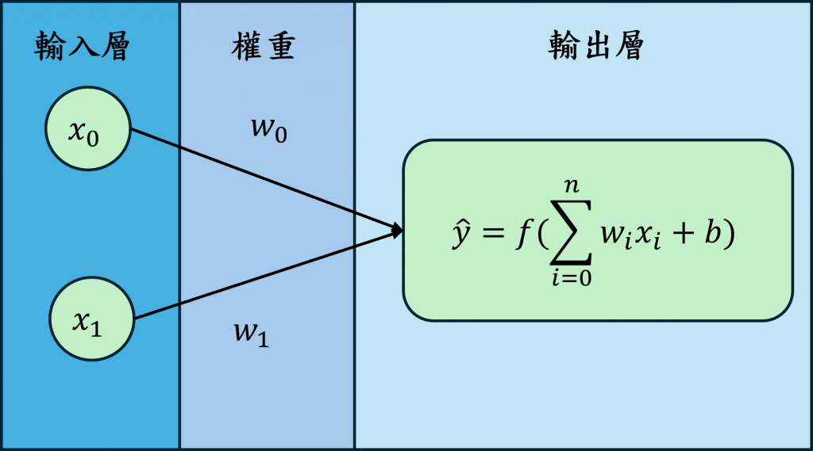
單層感知器由輸入層（Input Layer）、權重（Weights）、輸出層（Output Layer）三個部分組成，輸入層將資料以向量(Vector)的形式輸入，每個輸入對應一個特徵(Feature)，而每個輸入特徵都會有一個權重值(Weights)，這些權重會與輸入相乘，最後經過輸出層將輸入特徵與權重相乘的結果加總，然後通過一個激勵函數(Activation Function)來決定輸出的類別，其數學表達式如下:
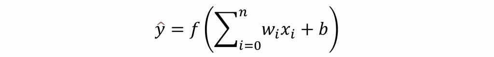
其中f(x)在單層感知器中會使用的是階梯函數(Step Function)

該函數的用法是將計算結果大於 0 的轉換成 1，小於 0 的結果轉換成 0，這樣就能完成一個簡單的二元分類器。而這種通過模型計算出答案的過程在深度學習中被稱之為前向傳播(Forward Propagation)
偏移量
b可能為 0，其參數代表答案的偏向。例如，當我們知道答案可能會偏向於正值時，偏移量可以設定為大於 0 的常數；若答案可能為負值，偏移量則可以設定為小於 0 的常數。
不過由於權重是隨機初始化的狀態，因此在模型的初始狀態基本上運算出的答案都是錯誤的，因此我們需要有一個有效的方式來調整其權重的變化，而這個動作就叫做反向傳播(Backward Propagation)，其基本概念就是通過計算出預測標籤與實際標籤的損失值(Loss)，並計算出會變動的參數(Parameter)的梯度(Gradient)，以找出這些參數的變化方向。
上述公式中，我們可以發現輸入 x 並不會改變，且偏移量 b 是常數，因此我們應該調整適當的權重 w 來計算出正確的答案。因此我們需要計算出損失值對於權重的變化量 𝜕Loss/𝜕w。在這裡我們先假設損失函數 (Loss Function) 是使用均方誤差 (Mean-Square Error, MSE)，其數學式如下:
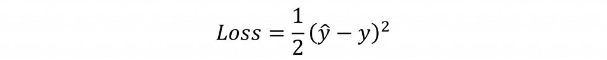
接下來我們需要針對這個損失函數對w進行偏微分的動作，以計算出損失值對於權重的變化量 𝜕Loss/𝜕w，不過由於階梯函數是一種不連續的函數，因此我們可以忽略其計算結果，直接使用wx+b的運算結果進行處理即可，這時我們將能夠使用連鎖律(Chain rule)推理出以下結果。

而計算完的結果將代表者每個權重的變化量與變化方向，我們可以將權重、損失值與梯度整理成下圖之間的關係。
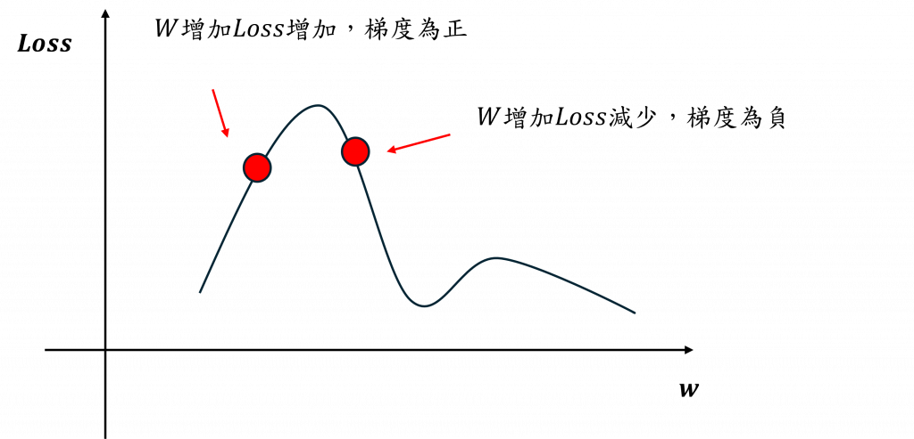
在我們的最終目的就是計算出 𝜕Loss/𝜕w = 0，這也代表著在上圖中我們會想要讓右邊的紅點向右移，左邊的紅點向左移，因此對其優化方是我們可以採用梯度下降法(Gradient descent)，其數學式如下：

其中我們可以發現，在調整權重時還會與學習率(Learning rate)進行運算。學習率通常是一個非常小的數值，原因是如果我們計算出來的梯度太大，圖中的紅點就會一次移動得很遠。因此通過這個學習率超參數，我們可以控制紅點的移動速度，使其逐漸收斂到損失值較低的位置。而這種優化的算法在深度學習中則被稱之為優化器(Optimizer)
總結
這次我們學習了深度學習中監督式學習的完整流程，並解析了其中的數學原理。你可能會覺得今天的內容有些複雜，因此在今天的最後，我會用一句話來總結我們今天學到的內容。其實整個深度學習的過程就是前向傳播計算答案、損失函數計算損失值、反向傳播計算梯度、使用梯度配合優化器更新可調參數，通過不斷迭代最終計算出答案。這樣子理解整個深度學習的概念就變得簡單許多了!
Day 04｜【Day 4】用Numpy實作完整的模型訓練過程-用單層感知器解邏輯閘問題
- 原文：https://ithelp.ithome.com.tw/articles/10353483
- 發佈時間：2024-09-18 19:02:48
前言
昨天我們證明了單層感知器的完整數學推導，而在今天我們將把這些理論知識轉換成對應的程式碼。這個過程在學習深度學習技術時是至關重要的一步，因為我們今天所做的事情是所有深度學習程式的基本概念，當你理解這些內容後，你在去接觸到其他深度學習的函式庫時，就能更好地理解它們的原理和運作方式。
單層感知器解邏輯閘問題
我們知道邏輯閘是一種二元分類的元件，因此非常適合用來作為單層感知器的資料型態。因此今天在撰寫程式碼時，我們將使用AND邏輯閘作為範例，示範如何建立一個單層感知器並進行模型的訓練，現在讓我們來看看建立模型的步驟
【STEP 1】初始化單層感知器類別
在建立模型時，通常會將會變動的參數放在 __init__ 方法中，並在這個步驟中進行基本的隨機初始化，這樣子做的好處是當模型訓練完畢後其參數的變化將會被保存在這個類別中使我們能夠快速地讀取與儲存。
因此在這一步驟中，我會先在這裡宣告偏移量及對應的權重，同時由於我們在更新權重時會使用梯度下降法，這還需要一個學習率參數，因此我也會在 __init__ 中設定它。
import numpy as np
class Perceptron:
def __init__(self, input_shape, bias=0, learning_rate=0.1):
# 初始化權重
self.weights = np.random.randn(input_shape)
# 初始化偏移量
self.bias = bias
# 初始化學習率
self.learning_rate = learning_rate
在這個步驟中，由於我們的權重會根據輸入資料的數量而有所變化，因此我們需要傳入一個input_shape參數，以幫助模型建立正確的資料維度。在深度學習的模型中，如果資料計算的維度錯誤，就會導致模型發生Shape Error的問題。這一點是在剛學習深度學習程式時最容易遇到的錯誤。
【STEP 2】定義前向傳播方式
而在深度學習的第一步中，就是要定義它的前向傳播方式。這個過程也就是昨日提到的 wx+b 這個數學公式，並搭配階梯函數來轉換其類別，因此對於該方法的定義如下所示：
def forward(self, x):
# 前向傳播公式 wx+b
z = np.dot(x, self.weights) + self.bias
# 階梯函數轉換結果
y_hat = self.step_function(z)
return y_hat
def step_function(self, z):
return (z >= 0).astype(int)
在這裡要注意的是，我們使用的程式碼採用矩陣相乘的方式，因此需要調用 np.dot 來進行運算。此外在階梯函數的部分，我們設定了一個條件式 z >= 0。該條件式會將符合條件的結果轉換為 True，不符合的則為 False。而這正好符合我們需要的 0 與 1 類別，不過我們需要將其轉換成 int 型態即可。
【STEP 3】定義反向傳播
在這一步驟中由於我們已經將損失函數和反向傳播證明簡化完畢，因此不需要先計算損失值的部分，而是直接依照昨日公式定義的反向傳播方法，同時進行參數優化。不過我們在這邊還是選擇保留損失函數的計算，因為可以通過該損失值來判斷模型當前的訓練效果。
def backward(self, x, y, y_hat):
# 計算梯度
grad = (y - y_hat)
# 優化器更新參數
self.weights += self.learning_rate * grad * x
self.bias += self.learning_rate * grad
def loss_function(self, y_hat, y):
# MSE計算損失值
return 0.5 * (y - y_hat) ** 2
【STEP 4】定義預測方式
最後當我們訓練完模型後，需要一個方法來調用訓練好的參數。此時我們可以簡單地用前向傳播方式進行包裝。
def predict(self, x):
# 預測時直接調用訓練好的前向傳播函數
return self.forward(x)
如此一來我們就完成模型的建立了。
【STEP 5】定義訓練方式
模型的訓練方式非常簡單，而且通常不會有過多的變化。在這裡我們通常會以一個週期（Epoch）為單位。在每個週期中，我們會將資料集拆分成多個批次（Batch）。這樣做的原因是因為計算時需要適當的記憶體空間或GPU空間，如果一次給予過大的資料，就會導致記憶體不足（Out of memory, OOM）的問題。在這裡我們也可以調用模型的損失函數來查看每個週期的損失值變化。
def training(model, x_train, y_train, epochs=10):
for epoch in range(epochs): # 週期
total_loss = 0 # 紀錄每個周期的損失值
for x, y in zip(x_train, y_train): # 批量
y_hat = model.forward(x)
loss = model.loss_function(y_hat, y)
total_loss += loss
model.backward(x, y, y_hat)
print(f'Epoch {epoch}, Loss: {total_loss:.5f}')
print('訓練完畢!')
【STEP 6】準備資料並建立單層感知器
首先，我們需要為模型提供訓練數據。在這裡，我們的目標是模擬 AND 閘的邏輯，因此我們需要 AND 閘的輸入和對應的輸出結果。這裡我們以兩個輸入作為範例，當然你也可以使用更多個輸入並相對應地調整標籤與輸入。
x_train = np.array([[0, 0], [0, 1], [1, 0], [1, 1]])
y_train_AND = np.array([0, 0, 0, 1])
接下來我們需要建立一個單層感知器模型，在這裡我們使用剛剛建立Perceptron並輸入對應的input_shape即可完成模型的建立，在這裡我們可以使用x_train.shape[1]取的其資料的第二軸維度，以此獲取輸入資料的大小
x_train的資料維度是(4, 2)，分別對應(batch_size, input_shape)，這也代表我們的輸入資料有4筆，每筆包含2個特徵。
# 建立單層感知器模型
model = Perceptron(input_shape=x_train.shape[1], learning_rate=0.1)
最後我們只需要調用訓練用的函數 training，就能更完整地實現前向傳播與反向傳播來更新這些可變動的參數了。在這裡我們要注意 epochs 的次數，若設定得太少則會導致訓練不完全，設定得太多則會導致過度擬合(Overfitting)的問題。不過在這裡，由於訓練資料比較簡單且只有訓練資料，因此不必考量過度擬合的問題，所以我們可以將 epochs 的次數設定高一些。
# 訓練模型
training(model, x_train, y_train_AND, epochs=20)
【STEP 7】訓練結果
最後我們將使用訓練好的權重來預測這些邏輯閘的效果。在這裡我們可以看到其預測的類別已經能完美地呈現AND邏輯閘的功能。當然我們也可以重新調整參數或更換成不同的邏輯閘，來觀察模型的訓練效果。我非常建議大家對這部分進行調整與實驗，這樣你更能理解這些超參數的實際用意。
# 測試模型預測結果
print("\n測試訓練模型:")
for x in x_train:
print(f'輸入: {x}, 預測輸出: {model.predict(x)}')
#-----輸出-----
輸入: [0, 0], 預測輸出: 0
輸入: [0, 1], 預測輸出: 0
輸入: [1, 0], 預測輸出: 0
輸入: [1, 1], 預測輸出: 1
總結
現在你學會了如何使用單層感知器來模擬不同的邏輯閘，並在這過程中理解了感知器的基本原理與訓練過程。透過實作前向與反向傳播、梯度下降優化，以及訓練過程的方式，你在基礎上就對深度學習有了深刻的印象。這樣在後續的章節中，你將能夠更好地銜接不同的模型與數學公式。
Day 05｜【Day 5】單層感知器為何無法解決XOR問題-多層感知器介紹與數學證明
- 原文：https://ithelp.ithome.com.tw/articles/10354209
- 發佈時間：2024-09-19 14:50:00
前言
在昨天如果你有嘗試調整超參數並更換其他邏輯閘，你可能會發現無論怎麼調整，XOR與NXOR這兩個邏輯閘都無法正確的被預測。這是因為單層感知器的原理是在一個平面座標上畫一條直線來分割不同的分類(也就是非線性可分)，因此當XOR與NXOR的輸入對應到x和y座標時，我們會發現無法用一條線進行分割。因此今天我們將學習如何解決這個問題。
多層感知器(Multilayer Perceptron)
多層感知器(Multilayer Perceptron, MLP)能解決非線性可分的關鍵在於它引入了隱藏層(Hidden layer)，這使得每一個每個隱藏層中的神經元(Neuron)能夠學習更高階的複雜特徵，從而處理非線性問題。這個概念也就是通過增加神經網路的深度與隱藏層神經元數量，能夠大幅提升模型的表現與準確性。

在多層感知器中通常會在層與層之間設定不同的激勵函數，將wx+b這一個線性運算轉換成非線性的結果，我們可以設定多個隱藏層經過多次線性變換和非線性激活，逐層提取更高階的特徵，現在讓我們看看圖片中的數學公式是如何計算出來的吧。
前向傳播
多層感知器的前向傳播公式其實相當直觀，其基本原理就是將單層感知器的結果不斷向後面的神經網路傳遞。因此我們首先要計算從輸入層到隱藏層神經元 h 的結果，其計算方式與單層感知器相同，都是使用 wx+b。不過為了方便運算，這裡暫時省略了偏移量。

接下來我們要計算從隱藏層到輸出層的過程，我們選擇使用sigmoid激勵函數。該函數可以將數值縮放到0到1之間，這對於二元分類或一些開關控制特別有效。在這裡，我們先計算出未經過激勵函數運算前的結果z，並將其帶入到sigmoid函數中，以計算出預測輸出ŷ。
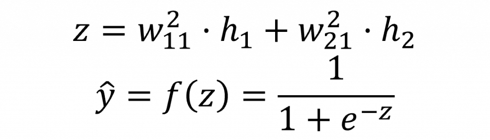
而之所以加入 sigmoid 函數，是因為當我們的計算複雜度變大時，輸出的輕微調整可能會帶來很大的變化。因此我們通過使用 sigmoid 函數來縮放其輸出數值，確保最終的損失值不會出現過大的變動。這樣在計算梯度時，變化會更為合理。以下圖示展示了 sigmoid 函數的輸入與輸出變化。
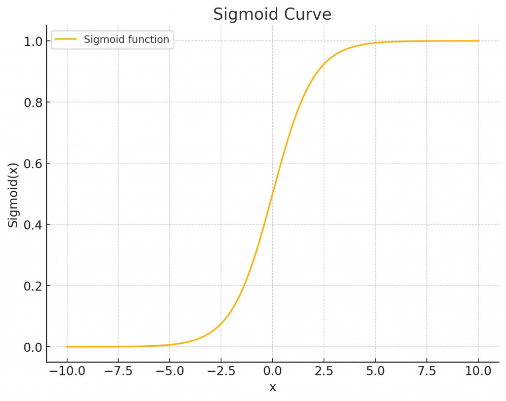
反向傳播
而在這多層的神經網路架構中其反向傳播是非常繁雜的，同樣的我們先從損失函數與預測輸出開始進行連鎖律運算，其數學式如下:

其中我們可以直接計算出𝜕Loss/𝜕ŷ的答案，但是我們並不知道𝜕ŷ/𝜕w的答案。這是因為對於𝜕ŷ/𝜕w來說，它還經過了激勵函數的轉換與隱藏層的計算。因此，我們還需要針對𝜕ŷ/𝜕w再次使用連鎖律進行展開。因此我們可以再次證明出以下的數學公式。
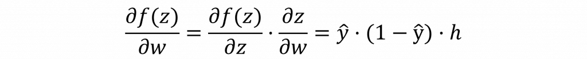
這裡計算到目前為止，我們已經能夠取得隱藏層到輸出層的權重梯度變化值，但這還不夠我們還必須計算出輸入層到隱藏層的權重梯度變化值。
因此我們需要針對每個隱藏層的神經元，計算損失值相對應的偏微分，也就是計算𝜕Loss/𝜕h這個結果。這部分的計算過程與先前類似，所以在這裡我們直接將其一次證明完畢(紅字的部分是使用連鎖律再次展開)
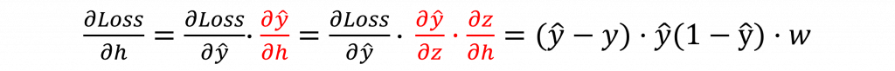
到這裡我們已經完成了整個圖片中多層感知器的前向傳播和反向傳播。可以看到當我們的神經網路越深時，其計算量和反向傳播的公式會變得更加複雜。因此在實際使用程式進行運算時，並不會真的手動計算這些反向傳播的公式，而是採用自動微分的方法來追蹤和計算梯度，這樣能更高效且準確地完成梯度的計算。
總結
我相信你今天看到這裡可能已經對反向傳播的概念更清楚一些了，但還是無法完全理解每一個數學式該如何計算。這樣其實非常正常，因為神經網路的關係過於複雜，很難一下子就掌握這些方程式之間的關係。所以當我們在計算反向傳播時，只需要記得一件事：如果我們所求的目標無法直接進行偏微分，那麼就一定要進行連鎖律展開。而連鎖律展開的相關變數，會是當前神經網路層的上一層輸出變數。
Day 06｜【Day 6】用Numpy實作完整的模型訓練過程2-用多層感知器解XOR邏輯閘問題
- 原文：https://ithelp.ithome.com.tw/articles/10354833
- 發佈時間：2024-09-20 11:25:22
前言
今天我們一樣要來用Numpy手刻一下多層感知器這個神經網路。不過今天我對昨天神經網路結構圖進行了一些簡單的改造，目的是為了讓神經網路更加有效，並減少調參的部分。在接下來的內容中，我將會告訴你如何建立和使用這些改進後的神經網路。
多層感知器解XOR邏輯閘問題
在這次的程式撰寫邏輯上，基本上與我們在第4天接觸到的寫法相似。但是這次的寫法我會以批次運算取代透過for迴圈逐一運算每個輸入與輸出。因此運算難度和模型建構的難度都有所增加，因此，如果遇到看不懂的程式碼部分，可以先回去看看第4天的程式碼寫法，這樣會比較容易理解今天的內容。
【STEP 1】初始化類別
初始化的動作與單層感知器基本上並無太大的差異，但我們在此增加了一個 hidden_shape 參數，該參數代表輸入層連接了多少個隱藏層。例如在昨天的例子中，我們使用了 2 個隱藏層神經元，因此在這裡該參數的設定為 2。
import numpy as np
class MLP:
def __init__(self, input_shape, hidden_shape=2, output_shape=1, learning_rate=1):
# 初始化權重和偏移量
self.W1 = np.random.randn(input_shape, hidden_shape)
self.b1 = np.zeros((1, hidden_shape))
self.W2 = np.random.randn(hidden_shape, output_shape)
self.b2 = np.zeros((1, output_shape))
# 初始化學習率
self.learning_rate = learning_rate
【STEP 2】定義前向傳播方式
接下來我們針對前向傳播的公式做了一些調整，具體來說就是在輸入層到隱藏層之間加入sigmoid函數，其目的是讓模型能更好地解決非線性的問題。
def sigmoid(self, x):
return 1 / (1 + np.exp(-x))
def forward(self, x):
# 前向傳播：計算每層的輸出
self.z1 = np.dot(x, self.W1) + self.b1
self.a1 = self.sigmoid(self.z1)
self.z2 = np.dot(self.a1, self.W2) + self.b2
self.a2 = self.sigmoid(self.z2)
return self.a2
【STEP 3】定義反向傳播
我們昨天學習到反向公式是非常繁瑣的。而在這些公式中，你可能發現了只要看到與𝜕𝑧相關的部分，都會產生y * (1 - y)這個公式。事實上這個動作就是Sigmoid函數的求導過程。因此我們可以寫一個sigmoid_derivative函數，這樣當我們需要使用Sigmoid函數的導數時，就可以直接調用這個函數。
def sigmoid_derivative(self, y):
return y * (1 - y)
在這裡同樣地，我們保留尚未被簡化前的損失函數，但要注意的是由於我們是以批次為單位進行計算，因此我們實際上返回的是每一個計算誤差的平均值。
def loss_function(self, y_hat, y):
# 計算均方誤差 (MSE) 損失
return np.mean(0.5 * (y - y_hat) ** 2)
而在定義公式時我們只需要輸入昨天的公式即可，首先我們先將隱藏層到輸出層的權重梯度公式定義為delta2，而輸出層到隱藏層的公式定義為delta1。不過由於我們在一開始在輸出層到隱藏層之間多加了一個sigmoid函數，因此在定義delta1的公式時，我們需要多計算一個sigmoid_derivative。
def backward(self, x, y):
# 計算梯度並更新權重和偏移量
m = x.shape[0]
delta2 = (self.a2 - y) * self.sigmoid_derivative(self.a2)
dW2 = (1 / m) * np.dot(self.a1.T, delta2)
db2 = (1 / m) * np.sum(delta2, axis=0, keepdims=True)
delta1 = np.dot(delta2, self.W2.T) * self.sigmoid_derivative(self.a1)
dW1 = (1 / m) * np.dot(x.T, delta1)
db1 = (1 / m) * np.sum(delta1, axis=0, keepdims=True)
這裡有一個需要注意的地方，由於我們採用的是批量運算，因此所有的梯度都應該計算其平均值。所以在程式碼中我們使用到1/m來計算當前批量內每一個梯度的平均值，這樣才能夠正確地更新權重與偏移量，而更新其參數的方式，我們同樣採用梯度下降法來調整參數。
# 更新權重與偏移量
self.W2 -= self.learning_rate * dW2
self.b2 -= self.learning_rate * db2
self.W1 -= self.learning_rate * dW1
self.b1 -= self.learning_rate * db1
【STEP 4】定義預測方式
而在進行預測時我們需要預測的目標是類別，但調用前向傳播 forward() 函數只會產生一個介於 0 到 1 之間的數值。因此我們可以選擇這個數值的中間值作為類別的預測結果。到這邊我們已經完成模型的建立了
def predict(self, x):
# 預測時直接進行前向傳播
y = self.forward(x) > 0.5
return y.astype(int)
【STEP 5】定義訓練方式
在這次的訓練方式中，由於是批量運算因此我們不需要撰寫一個 for 迴圈逐筆將資料傳送給模型進行運算，因此可以直接移除該迴圈的部分，其他的計算方式和顯示方式則與先前相同。
def training(model, x_train, y_train, epochs=100):
for epoch in range(epochs):
y_hat = model.forward(x_train)
loss = model.loss_function(y_hat, y_train)
model.backward(x_train, y_train)
if epoch % 1000 == 0:
print(f'Epoch {epoch}, Loss: {loss:.5f}')
print('訓練完成!')
【STEP 6】開始訓練並預測結果
最後我們準備XOR的訓練數據，並建立多層感知器模型進行訓練。在這裡我們將epochs設定得比較高，這是因為這次的運算難度較高。為了確保模型能夠收斂所以增加了訓練的次數。
# XOR 訓練數據
x_train = np.array([[0, 0], [0, 1], [1, 0], [1, 1]])
y_train_XOR = np.array([[0], [1], [1], [0]])
# 建立 MLP 模型
model = MLP(input_shape=x_train.shape[1])
# 訓練模型
training(model, x_train, y_train_XOR, epochs=10000)
# 模型訓練後預測結果
print("\n模型訓練後預測結果:")
pred = model.predict(x_train) # 一次預測而非單筆資料預測
for x, y in zip(x_train, pred):
print(f'輸入: {x}, 預測輸出: {y}')
# -----輸出-----
Epoch 9000, Loss: 0.00030
訓練完成!
模型訓練後預測結果:
輸入: [0 0], 預測輸出: [0]
輸入: [0 1], 預測輸出: [1]
輸入: [1 0], 預測輸出: [1]
輸入: [1 1], 預測輸出: [0]
這時我們將會發現，即使更換成其他邏輯閘也能訓練出正確的結果。這就是為什麼現在的神經網路模型需要增加更多的層數和神經元數量。例如在我們這個任務中，我們讓其訓練的曲線在平面上進行轉彎的動作。這一發展就延續到現今像是ChatGPT、Stable Diffusion等技術，使其能在更高維的空間中進行運算。
總結
在這短短幾天內我們不只學習到了單層與多層感知器的詳細結構，還學會了如何透過矩陣計算來減少 for 迴圈的次數以加快模型運算速度，同時我們還證明了這些不同模型的反向傳播過程。而即使不完全理解這些證明也不用擔心，隨著後續神經網路變得越來越複雜，這些反向傳播的證明將變得不太重要，因為有函式庫可以幫助我們進行計算。因此我們實際上需要理解的是這些模型在前向傳播中所使用的技術，這才是在深度學習技術中最重要的事情。
若你理解了這些內容後，不妨試著調整一些超參數的設定。例如我們可以增加或減少隱藏層神經元的數量，也可以調整學習率和訓練次數等。我們學習的目標是了解如何調整這些參數，使其能夠產生最低的損失值。這個調整參數的經驗與過程在我們優化模型時非常重要。
本文中的程式碼都放置在我的GitHub中:
Learning-AI-in-30-Days-by-Using-Math-for-Better-Understanding
Day 07｜【Day 7】深度神經網路與多層感知器的差異解析及PyTorch安裝指南
- 原文：https://ithelp.ithome.com.tw/articles/10355689
- 發佈時間：2024-09-21 20:47:02
前言
我相信被這幾天的數學式砲轟你應該不會想再繼續看數學了，所以我們今天來學點輕鬆的。在我們昨天的內容中提到，計算反向傳播時層數越多，數學公式就會變得更加複雜。當我們想要疊加數十層神經網路時，必須進行大量數學運算來撰寫程式。尤其在前向傳播公式非常複雜的情況下，反向傳播幾乎變得無法運算。因此在今天我將告訴你如何使用Pytorch函式庫來建立前向傳播與反向傳播，並解釋多層感知器與深度神經網路（Deep Neural Network, DNN）之間的差異。
深度神經網路(Deep Neural Network)
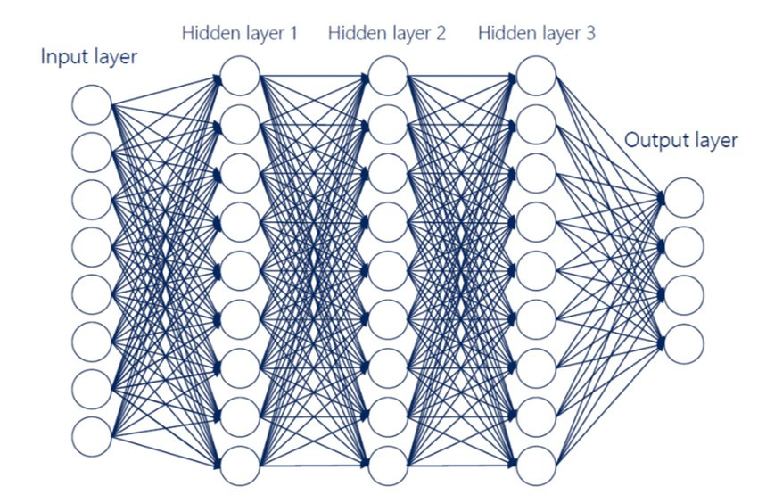
圖片來源:點我
我們學習到的多層感知器是一種前饋神經網路，該模型架構包含輸入層、多個隱藏層和輸出層，這種模型架構也被稱為全連接層 (Fully Connected Layer)。但這種簡單的模型無法做到過於非線性的運算，因此隨著深度學習的發展，我們需要更複雜的運算和模型。
於是深度神經網路就出現了，深度神經網路與多層感知器的主要差異在於層的數量。事實上多層感知器可以被認為是深度神經網路的一種應用，但無論你稱它為多層感知器或深度神經網路，兩者實際上是相似的。對於學習 AI 的人來說，你說出這些名詞（全連接層、多層感知器、深度神經網路）都能理解，因為它們的數學原理都是基於 wx+b。
而這些名詞之間只有些微的差異，例如全連接層通常指某個不同模型連接後的層數；深度神經網路指使用 wx+b 公式的多層網路；而多層感知器通常指僅有一層輸入、一層隱藏和一層輸出的深度神經網路模型。這也是我們在學習 AI 中最容易發生的狀況之一「多個名詞指向類似的技術原理」。
在學習人工智慧時其實有蠻多時間在搞清楚這些名詞之間的關聯性與上下級關係，而知道這一點的用處就是當你在觀看Paper時，更能夠知道該作者所想表達的意圖。
Pytorch的安裝
而向深度神經網路這樣子較為龐大的模型我們就必須使用深度學習函式庫進行反向傳播的運算，並且由於計算量較於複雜，因此通常要使用 GPU 或是 TPU 進行運算，所以我將告訴該如何正確的安裝 GPU 版本的Pytorch。
【STEP 1】檢查顯示卡CUDA支援的版本
首先，我們需要安裝 NVIDIA 的顯示卡驅動程式。大部分電腦預設上應該已經安裝，但如果沒有，你可以自行到 NVIDIA官網進行下載。當完成這個步驟後，我們需要檢查自己顯示卡支持的 CUDA 版本。這時可以在 命令提示字元 (CMD) 中輸入以下指令：
nvidia-smi
此時我們將會看到顯卡的相關資訊並在訊息欄的右上角可以看到 CUDA 支持的最高版本，而這一點就是我們在後續選擇 PyTorch 版本 時所能安裝的最高版本。

【STPE 2】前往Pytorch官方網站
我們可以在 PyTorch 官方網站 找到以下畫面。在這個頁面上，你需要做的是挑選出較上一個步驟中 CUDA 版本更低的 PyTorch安裝指令。因此根據本文所述情況，我們可以選擇 CUDA 12.4 版本進行安裝。
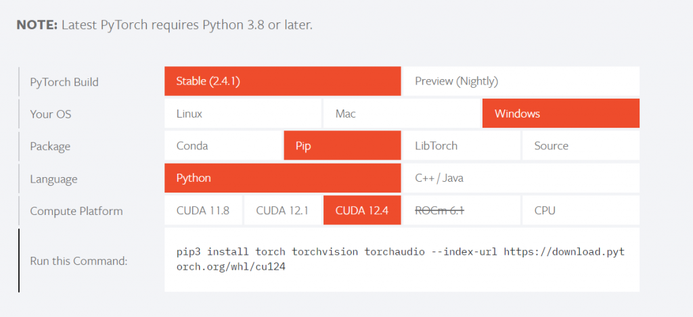
若你的顯示卡較為老舊且最高支援的 CUDA 版本不足最低需求，可以選擇該頁面上方的
install previous versions of PyTorch。這樣你也能夠成功安裝 Pytorch 的 GPU 版本。
【STEP 3】輸入安裝指令並測試
接下來，我們將在命令提示字元中輸入上圖中的文字並等待安裝。這個過程大約會下載3GB左右的文件，因此可能需要一些時間來完成。
pip3 install torch torchvision torchaudio --index-url https://download.pytorch.org/whl/cu124
這時我們無法確認電腦是否成功安裝了 Pytorch 的 GPU 版本，尤其是在 Windows 環境中較為複雜，甚至可能因安裝了多個 Python 版本而導致 pip 指令不確定裝在哪個版本的 Python 中。因此我們可以在 Python 作業環境中輸入以下指令：
import torch
print(torch.cuda.is_available())
# -----輸出-----
True
這時當回傳True時將代表之後可以使用 Pytorch 的 GPU 版本功能來加速運算了，若顯示False不妨先檢查自己的Python版本是否高於3.8，並且檢查是否有存在多個 Python 致環境變數錯亂。
即使沒有 GPU 你仍然可以安裝 PyTorch 的 CPU 版本，只需輸入
pip install torch即可完成安裝。不過需要注意的是，CPU 版本的運算速度遠遠不及 GPU 版本。這是因為 GPU 可以利用乘數累加器(Multiply Accumulate, MAC)進行大量的矩陣運算，相比之下在CPU上計算時，則需要使用多個步驟來完成相同的運算。
總結
我們今天簡單地區分了多層感知器與深度神經網路的差異，以讓你對這些名詞更加熟悉。同時我們也解釋了全連接層這一個關鍵名詞，這個名詞通常會出現在模型的最後一層，因此應該是最常見的。
而今天我主要還是告訴你如何安裝正確的 PyTorch GPU 版本，以加速大型模型的計算過程。這一點非常重要，因為當初我在學習 AI 時，光是安裝 PyTorch 就花費了非常多的時間。尤其是由於我的顯卡很舊加上網路不穩，每次重新下載 PyTorch 都需要等待3GB的下載時間，因此我在這裡特別強調這些重點，讓你少走些冤枉路。
Day 08｜【Day 8】使用Pytorch實現深度神經網絡進行MNIST手寫數字辨識
- 原文：https://ithelp.ithome.com.tw/articles/10356442
前言
現在你已經了解了什麼是深度神經網路，所以今天我們主要學習如何使用 Pytorch 來完成前幾天所講的前向傳播和反向傳播方法。我們將使用MNIST這個手寫辨識資料集，進行模型的訓練和預測，讓你瞭解實際上的深度學習運算過程。
這次我們同樣使用監督式學習和深度神經網絡來解決 MNIST 手寫數字辨識問題。我會從下載數據集、定義模型、訓練模型到最終進行測試，詳細告訴你如何在 Pytorch 中實現。現在讓我們來看看以下步驟。
【STEP 1】下載資料集並進行資料前處理
首先我們需要import這次程式所必須的 Pytorch 函式庫，而由於我們將進行圖像辨識，因此我們會使用torchvision及其中的transforms來對圖像進行處理。
import torch
import torch.nn as nn # 建立神經網路用
import torch.optim as optim # 建立優化器用
import torchvision
import torchvision.transforms as transforms
import matplotlib.pyplot as plt
import numpy as np
import random
接下來我們需要進行資料前處理 (Data Preprocessing)的步驟，這個步驟主要包括兩個部分。首先，將我們的陣列 (List)轉換成張量 (Tensor)類型。其次，對圖像進行正規化 (Normalization)處理。使用正規化的原因是，若輸入的資料數值過高，容易導致模型的梯度和損失值也變得很高，進而使每次的權重變動變得更加不可控制，讓模型更難收斂。因此，在資料前處理時，需要先完成這兩個重要的步驟。
張量是一種多維陣列，廣泛應用於深度學習中的資料處理，特別是在神經網路訓練過程中使用。張量可以是標量 (0 維)、向量 (1 維)、矩陣 (2 維) 及更高維度的資料結構。
# 數據預處理
transform = transforms.Compose([transforms.ToTensor(), transforms.Normalize((0.5,), (0.5,))])
接下來我們通過以下程式碼將定義好的 transform 作用在 MNIST 數據集上，同時我們也設定其超參數 download=True 開啟，這樣 我們就能夠快速地對這些照片進行資料前處理並下載。
在這裡我們先不多說
datasets與DataLoader這兩個類別的概念，其概念將會再後續章節進行詳細的講解。
# 下載 MNIST 數據集
train_dataset = torchvision.datasets.MNIST(root='./data', train=True, transform=transform, download=True)
test_dataset = torchvision.datasets.MNIST(root='./data', train=False, transform=transform, download=True)
train_loader = torch.utils.data.DataLoader(dataset=train_dataset, batch_size=64, shuffle=True)
test_loader = torch.utils.data.DataLoader(dataset=test_dataset, batch_size=64, shuffle=False)
同時我們設定批量數為 64 張圖片，使模型可以正常運算。我們之所以不像前幾天那樣一次把所有資料當作批量給模型訓練，是因為 MNIST 手寫辨識集在訓練集上有 6 萬張圖片，測試集則有 1 萬張，對於一張 GPU 而言是無法一次容納下這麼多資料的。
【STEP 2】查看資料大小與型態
而當我們在處理資料時，最需要理解的就是這些資料的維度，如果我們輸入錯誤的維度，模型就無法運作。這一點在單層感知器章節中已經提到過了，因為它太重要了所以我必須再重複一次。現在我們可以先通過以下的程式碼來取得訓練資料集的圖片及其對應的標籤，並顯示出它們的維度。
x_train = train_dataset.data # 圖片
y_train = train_dataset.targets # 標籤
print(f'x_train size: {x_train.size()}')
print(f'y_train size: {y_train.size()}')
# -----輸出-----
x_train size: torch.Size([60000, 28, 28])
y_train size: torch.Size([60000])
從以上結果可以看到，訓練資料包含 60000 張圖片，每張圖片的大小為 28×28 像素。為了更直觀地理解這些圖片，可以使用 matplotlib 將它們可視化。在圖片中越接近白色的區域，數值越接近 255；越接近黑色的區域，數值則越接近 0，範圍介於 0 到 255 之間。由於數值較大，因此這也是我們在第一步驟所進行正規化的原因。
fig, axs = plt.subplots(1, 6, figsize=(15, 3))
for i in range(6):
idx = random.randint(0, len(x_train) - 1)
img, label = x_train[idx], y_train[idx]
axs[i].imshow(img, cmap='gray')
axs[i].set_title(f'Label: {label}')
axs[i].axis('off')
plt.show()
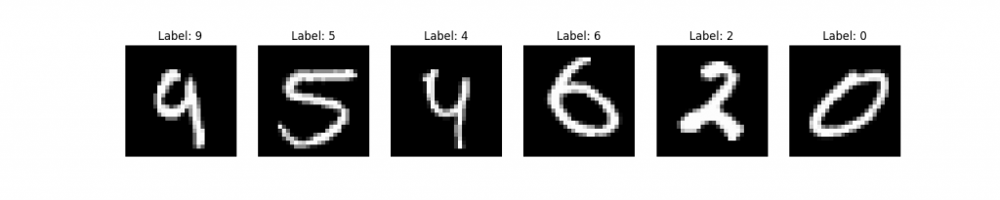
【STEP 3】定義深度神經網路模型
在Pytorch中，需要繼承nn.Module來使用其相關的方法。不過其概念非常簡單，我們通常會在init方法中定義模型的結構與激勵函數。因此，若我們要定義一個有四層隱藏層的模型，可以這樣定義：
class DNN(nn.Module):
def __init__(self, input_shape, output_shape):
super(DNN, self).__init__()
self.fc1 = nn.Linear(input_shape, 512) # 輸入->隱藏
self.fc2 = nn.Linear(512, 256) # 隱藏->隱藏
self.fc3 = nn.Linear(256, 128) # 隱藏->隱藏
self.fc4 = nn.Linear(128, output_shape) # 隱藏->輸出
self.relu = nn.ReLU() # 激勵函數
在定義模型的前向傳播過程時，有一個需要特別注意的地方：由於深度神經網路只能處理一維的輸入資料，因此我們需要將輸入的28x28圖片展平為784維的一維向量。為了實現這一點在輸入的第一層，我們會使用view函數來進行轉換操作。這樣可以確保網路能夠正確接收並處理資料。
在
view函數中使用-1來表示自適應維度，這是因為我們不確定輸入的批次大小，但我們知道每個輸入的特徵數量是 784。因此我們可以將資料從形狀為(batch_size, 28, 28)轉換為(batch_size, 784)。其中，batch_size的維度使用-1，可以自動計算並適應當前的批次大小。
def forward(self, x):
x = x.view(-1, 28 * 28)
x = self.relu(self.fc1(x))
x = self.relu(self.fc2(x))
x = self.relu(self.fc3(x))
x = self.fc4(x)
return x
在這裡我們使用了 ReLU（Rectified Linear Unit）作為激勵函數。其數學原理相對簡單：當輸入值小於0時，輸出為0；當輸入值大於或等於0時，輸出保持不變。ReLU 是隱藏層中最常使用的激勵函數之一，甚至像 ChatGPT 這類的語言模型也使用了基於 ReLU 的變體。因此本次教學中，我們將以 ReLU 作為激勵函數的範例來進行。
【STEP 4】訓練模型
在訓練模型時，雖然與前幾天的內容相似，但這裡我們仍需注意一些基本事項。由於我們使用梯度追蹤來進行反向傳播，計算損失值後可以使用內建的 backward() 方法來求取梯度。優化器則需要接收模型中所有可調整的參數，這是因為在模型通過 backward() 計算梯度後，還需要使用 optimizer.step() 更新權重。因此在初始化模型和優化器時，我們可以這樣撰寫程式碼。
# 定義損失函數和優化器
model = DNN(x_train.shape[1] * x_train[2], len(set(y_train))
criterion = nn.CrossEntropyLoss() # 計算分類任務時通常會使用CrossEntropyLoss
optimizer = optim.Adam(model.parameters(), lr=0.001) # Adam是一個通用性極高的優化器
在定義訓練過程時，還需特別注意 optimizer.zero_grad() 。原因在於每當我們追蹤梯度時，梯度會在每個批次中累加。如果不清除前一個批次的梯度，新的批次計算就會受到前一批次的影響。因此使用 optimizer.zero_grad() 的目的，是確保在計算當前批次時，將其視為一次獨立的計算，不受之前批次的影響。
def train_model(model, train_loader, criterion, optimizer, num_epochs=5):
for epoch in range(num_epochs):
running_loss = 0.0
for i, (inputs, labels) in enumerate(train_loader):
# 清空梯度
optimizer.zero_grad()
# 前向傳播
outputs = model(inputs)
loss = criterion(outputs, labels)
# 反向傳播和優化
loss.backward()
optimizer.step()
# 累計損失
running_loss += loss.item() # item()張量轉換成純量
if i % 100 == 99:
print(f'Epoch [{epoch+1}/{num_epochs}], Step [{i+1}/{len(train_loader)}], Loss: {running_loss/100:.4f}')
running_loss = 0.0
print('Finished Training')
train_model(model, train_loader, criterion, optimizer, num_epochs=5)
# -----輸出-----
Epoch [5/5], Step [900/938], Loss: 0.0719
在該程式中我們可以清楚看到，訓練過程還是前向傳播、反向傳播、以及優化器更新權重這三個動作。並且在這裡我們也能關注損失值的變化。通常來說如果損失值無法降低到 0.X 的範圍，這可能意味著模型在該資料集上的表現不佳，或者資料集本身存在問題。這時可能需要檢查模型架構、資料集品質或訓練參數，來進一步改善結果。
【STEP 5】測試模型效能並進行預測
還記得我們下載資料時有一個測試資料集嗎？這個資料集的功能是用來驗證模型的實際效能。因為模型在訓練過程中已經看過訓練資料集，所以如果我們用訓練資料來驗證模型，結果可能會不準確。因此，我們通常會將資料進行分割，將部分資料保留，讓模型在訓練過程中無法接觸，並以此作為評估模型效能的依據。這個概念可以比喻為：訓練資料就像課本裡的習題，而測試資料則是考試的內容，用來評估學習效果。
def test_model(model, test_loader):
correct = 0
total = 0
model.eval() # 設置模型為推論模式
with torch.no_grad(): # 禁用梯度計算
for inputs, labels in test_loader:
outputs = model(inputs)
_, predicted = torch.max(outputs.data, 1)
total += labels.size(0)
correct += (predicted == labels).sum().item()
print(f'Accuracy of the model on the 10000 test images: {100 * correct / total:.2f}%')
test_model(model, test_loader)
# -----輸出-----
Accuracy of the model on the 10000 test images: 97.45%
在這裡，我們需要將模型切換到推論模式（inference mode），這樣在運算時可以固定模型中特定層所引入的隨機性變化(像是 dropout 這類層)。另外我們還可以使用 with torch.no_grad()，因為在測試或推論模型時，我們不需要計算反向傳播，這樣 PyTorch 就不會自動追蹤梯度變化，進而加快運算速度。
當模型訓練完畢並進行測試後，準確率甚至達到了 97%。接下來，若我們要進行實際預測，可以撰寫以下程式碼。但需要特別注意的是，在實際預測時必須使用與訓練時相同的資料前處理技術。若不遵守相同的處理步驟，則可能導致預測結果錯誤。
def predict_random_image(model, test_dataset):
# 隨機選擇一張測試集圖片
idx = random.randint(0, len(test_dataset) - 1)
img, label = test_dataset[idx]
img_reshaped = img.view(-1, 28 * 28)
# 進行預測
model.eval()
with torch.no_grad():
output = model(img_reshaped)
_, predicted = torch.max(output.data, 1)
# 繪製圖片並顯示預測結果
plt.imshow(img.squeeze(), cmap='gray')
plt.title(f'Ground Truth: {label}, Predicted: {predicted.item()}')
plt.axis('off')
plt.show()
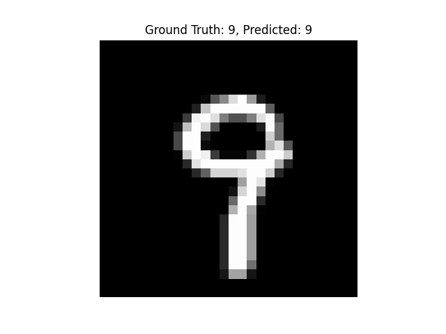
這時我們已經發現模型能夠學會這些圖像的特徵，並進行預測了!
總結
從今天的內容中可以看到，在處理模型建立與反向傳播的部分比我們前幾日還要簡單許多了吧！而我們今天的內容都是在處理該如何繪製一個圖片、資料前處理與學習Pytorch的程式碼的一些程式規範，但在今天你可能接觸到了一些不同的激勵函數與損失函數導致你對這方面有點混亂，因此在明天我會將這些內容引入到內容中，讓你從數學方面更號的理解ReLU與CrossEntropyLoss究竟做了哪些事情。
Day 09｜【Day 9】辨識圖像的神工利器-卷機神經網路數學證明
- 原文：https://ithelp.ithome.com.tw/articles/10356789
- 發佈時間：2024-09-23 15:44:21
前言
在昨天，我們可以看到針對MNIST手寫辨識資料集，我們需要將其圖像轉換成一維的資料。但是這樣的做法在實際應用中顯得不太實際，因為大部分圖像都是彩色的，所以對於其資料維度應該是(batch_size, 寬, 高, 色彩通道)。假設我們的輸入是一張28x28的彩色圖像，這樣在給深度神經網路進行運算時，會產生28x28x3的輸入特徵。
這時就會導致輸入特徵越來越多，就會導致模型運算變得更加複雜，這樣子我們必須增加模型的參數量、深度，甚至增加資料集的數量，但資料蒐集的難度高標註的時間也要非常久，因此最合適的方法應該是我們需要使用其他模型來幫助我們達到目標，因此在今天我會告訴你卷積神經網路(Convolutional Neural Networks, CNN)在進行分類任務時常用的手段。
卷積神經網路(Convolutional Neural Networks)

卷積神經網路是一種專門用來處理圖像資料的模型。它的概念是通過卷積核(Kernel)來提取不同層次的特徵。一個卷積神經網路通常包含卷積層、池化層以及全連接層。現在讓我們來看看在一個卷積神經網路中進行了哪些操作吧。
卷積層(Convolution Layer)
在卷積層(Convolution Layer)中其最重要的目的是通過卷積核來提取圖像中的局部特徵，以找出如邊緣、角點和更復雜的圖像結構，而其作法就是通過不斷的滑動卷積核並與其進行阿達瑪乘積(Hadamard product，符號⊗)，我們可以看到下圖中的做法。
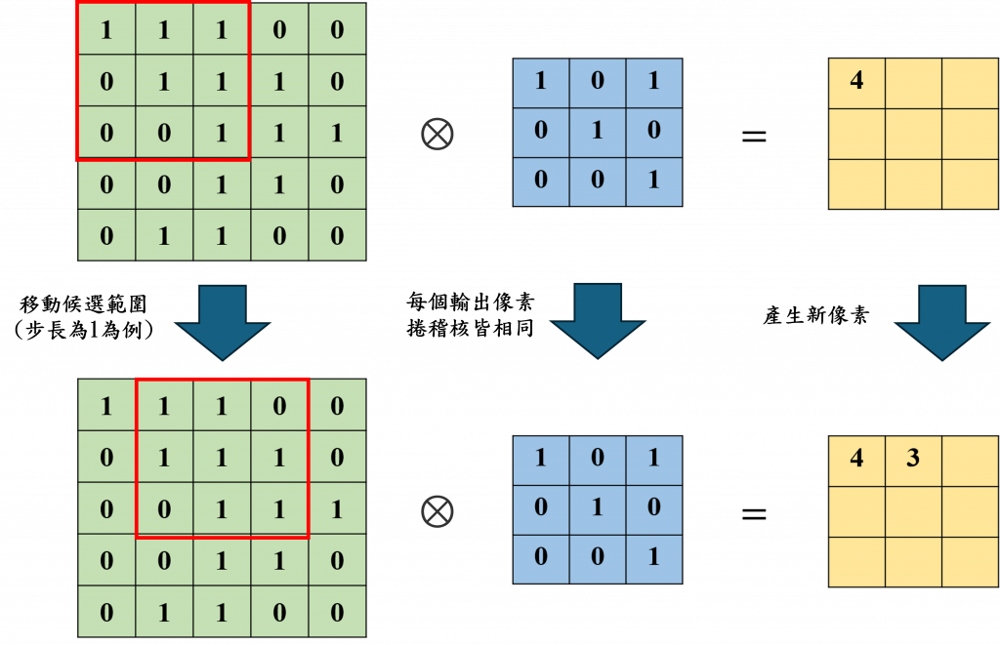
在上圖中我們可以看到原始圖像會與卷積核進行運算，並且通過設定步長 (Stride)來滑動卷積核的位置以產生新的圖像。不過我們會發現當卷積核滑動到底部和右邊邊緣時，卷積核的一部分會超出原始圖像的範圍。為了解決這個問題，我們需要使用填充 (Padding)技術。

其中最常用的方法是零填充 (Zero Padding)，即把超出邊界的部分補上0。這樣可以保持原始圖像的尺寸，從而產生最終的特徵圖 (Feature Map)。而對於卷積層我們可以用以下公式表達(I為輸入的圖像特徵、K為卷積核矩陣)

而通過應用不同的卷積核，每一層卷積層將會擷取到更加抽象和高階的特徵，而對於其特徵圖的長與寬我們則可以代入以下公式計算(k為卷積核大小、d卷積核之間的間隔數、s為步長、p為是否要進行填充)
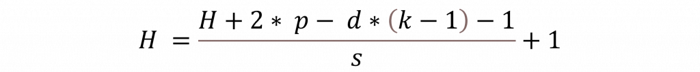
池化層(Pooling Layer)
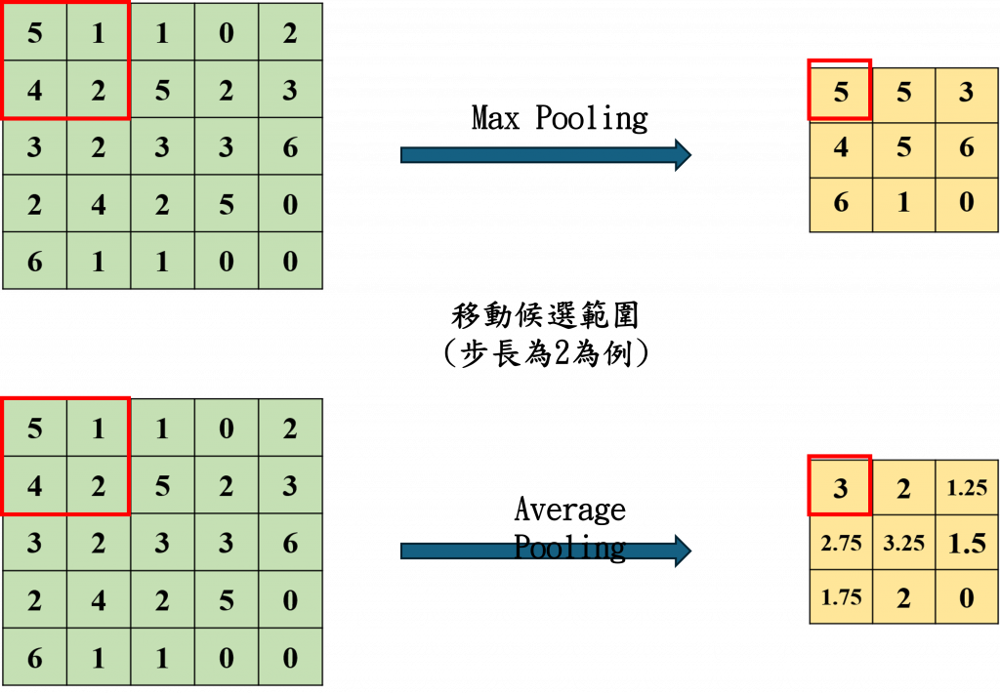
接下來是池化層（Pooling Layer），這一層的作用是為了減少圖像的空間維度，通常採用最大池化（Max Pooling）或平均池化（Average Pooling）來進行運算。
而在池化層中透過設定步長來選擇對應的目標範圍，並在這個範圍內計算平均值或找出最大值。有這一層的原因是我們通常會將一張圖像經過多次運算轉變為高維度的特徵圖，因此透過減少運算量可以防止過度擬合（Overfitting）的問題。在這裡我們可以來看到其數學公式如下(上公式為最大池化、下公式則為平均池化):
過度擬合是指模型在訓練集上表現良好，但在驗證或測試集上表現不佳的一種現象。這表示模型的複雜性過高，使其過分記住訓練集上的特徵，反而讓模型失去了泛化性。因此在設計適當的模型大小與深度時，必須參考資料集的大小，才能達到較佳的模型效果。

同樣的該層的特徵圖的長與寬我們同樣的可以使用卷積核的計算公式進行運算。
全連接層(Fully Connected Layer)
在我們討論了卷積神經網路的兩個層級之後，你可能會問為什麼需要計算每一層的輸出長度和寬度。這樣做的重要原因在於，卷積層和池化層主要負責提取圖像的特徵，而實際的計算工作大多數是在全連接層中進行。因此我們需要知道在設計時設定的特徵圖數量，以及經過一連串卷積層後的圖像尺寸。這樣我們才能將這些數據攤平(Flatten)，讓全連接層進行運算。前面的章節中我們已多次講解過全連接層的計算公式，所以在這裡就不再詳細說明。
交叉熵損失（CrossEntropyLoss）
在昨天的內容中，我們使用了 交叉熵損失（CrossEntropyLoss） 函數，該函數主要應用於分類任務。其數學公式相對簡單，通過真實標籤的概率分佈 p(i) 與預測的概率分佈 p\hat(i) 進行運算，並對每一類進行 log 運算後相乘。我們通過這種方式懲罰預測概率與真實標籤（標籤值為 1）的差異，同時對其他類別的預測概率與 0 之間的差異進行處理。
如下圖所示的公式是用於多分類預測問題時的交叉熵計算。在這種情況下我們會使用 softmax 激勵函數將預測結果 y\hat 轉換為概率分佈，而不僅僅是直接的數值。至於 p(i)，它的取值是 1（對應真實標籤）或 0（非真實標籤）。
在Pytorch中，我們不需要對最後一層進行
softmax運算，其原因是在Pytorch中的CrossEntropyLoss函數中內建了softmax運算。因此，我們切記不能再次加入softmax，不然會導致運算效果不如預期。

通常在卷積神經網路的應用中，多會使用這個損失函數來進行運算。我們在日常生活中其實經常遇到這類技術的應用，例如車牌辨識、人臉辨識、口罩辨識等系統，就是通過卷積神經網路與該損失函數所衍生出來的。
總結
在今天我們特別解析了卷積神經網路的模型結構以及其數學公式，其中最重要的部分其實是計算每一層的特徵圖大小，因為當我們將特徵圖輸入全連接層時，需要在Pytorch中手動計算這些大小。因此當我們在撰寫一些通用的輸入公式時，這些計算公式就變得特別重要。
另外我們也解釋了昨天使用的損失函數的原理，讓你對分類任務中的損失函數有更深刻的理解。同時我們也能瞭解到，為什麼在昨天的內容中，儘管沒有使用到softmax這個激勵函數，我們仍然能夠計算每一個輸出的機率。
Day 10｜【Day 10】用卷積神經網路解CIFAR10影像辨識 - 建立一套屬於自己優化方式的訓練器
- 原文：https://ithelp.ithome.com.tw/articles/10357353
前言
今天我們將進行Pytorch中的第二個模型建立，並使用CIFAR-10資料集進行影像辨識。不過這樣聽起來有點單調，所以在今天的章節中，我將跟大家介紹如何建立一個屬於自己的訓練器，並在這個訓練器上定義優化方法。
而在本章節之後我們將會繼續使用這個訓練器進行模型的優化與調整，因此在本章節建立卷積神經網路時我們將會把損失函數的結果應用到前向傳播的結果中，並在前向傳播的傳入參數使用**kwargs的方式傳遞以符合訓練器的設定。
而我們今天的主要目的是告訴你在建立訓練器之前我們需要先了解在訓練模型時會發生的三件事情。並將這些方案融入到訓練器中，以完成卷積神經網路的訓練。
建立訓練器(Trainer)
在我們訓練模型時第一件需要注意的事情過度擬合的解決與適應。由於我們很難配置一個完全符合資料集的模型，因此當模型訓練到後期，大多數情況下都會發生過度擬合的狀況。能夠完美收斂的模型非常罕見。因此我們需要找到一種方式來判斷模型在何時開始過度擬合，在下圖中展示了訓練時損失值與訓練周期之間的過度擬合現象。
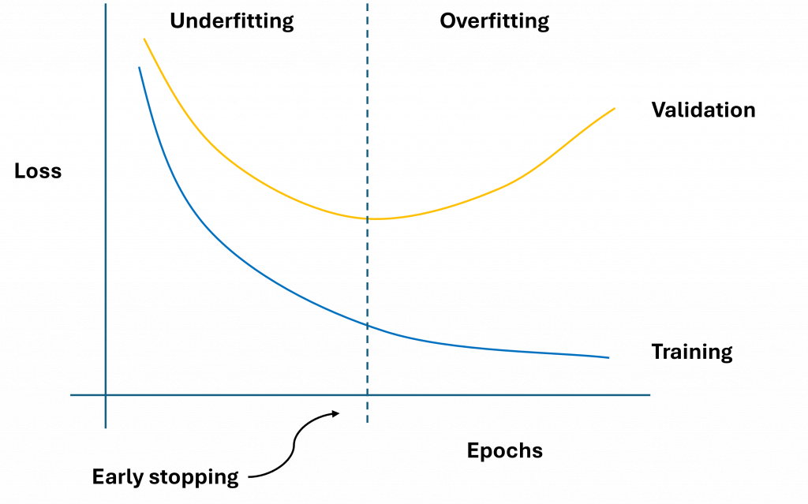
我們可以看到，在這個訓練曲線中應該在損失值最低的部分儲存該模型的權重，並中斷模型的訓練，因此為了解決這個問題我們需要使用提早停止(Early stopping)這一項技術。該作法是經過每訓練一個週期或一定步數(Step)後，透過驗證集來驗證當前模型的效能，如果驗證集的損失在一定的週期內不再下降則停止訓練。
第二件事情則是我們需要隨時儲存損失值最低的模型。這樣配合提早停止的策略，我們將能夠獲得最佳的模型，同時達成適時中斷訓練這兩項目標。如此一來，我們也可以減少對於週期超參數的設計，直接依賴提早停止即可。
提早停止這項技術特別依賴驗證資料集，若無驗證資料集或是驗證資料集過少，就很容易導致模型訓練效果比為加入此技術的狀態還差，因此該技術通常作用在有一定數量的資料集上時就會顯得比就有優勢。
第三件事情是我們要如何將損失值收斂到極限。由於我們的學習率都是相同的，因此在訓練過程中，如果陷入局部最優解，可能會因為動力不足而無法跳脫。而這種情況下我們應該增加學習率，使模型能夠脫離這個困境。因此我們需要一種能夠動態調整學習率的方法來優化模型，這個方法就叫做排程器（scheduler）。除了幫助模型跳脫局部最優解之外，這個方法的應用非常廣泛，可以確保模型收斂到全局最優點、幫助找出資料的特徵方向等等。而在今天我們要將此策略一次寫入到訓練器(Trainer)中，現在讓我們看一下以下步驟:
【STEP 1】初始化訓練器類別
這次我們在初始化類別時，需要傳入以下參數：訓練次數（epochs）、訓練資料集（train_loader）、驗證資料集（valid_loader）、模型（model）、優化器（optimizer）、排程器（scheduler）、提前停止的週期數（early_stopping）、模型權重的儲存名稱（save_name）以及訓練所使用的裝置（device）。
而在這邊由於我們的模型可能是由多個架構組合而成，所以optimizer與scheduler實際上會被傳入一個容器型態，讓模型能夠各自更新。在device的部分，我們可以選擇自動判斷Pytorch版本是否能使用GPU進行運行，若能則自動抓取GPU進行訓練，或是讓使用者自行判斷是否要在CPU上運行或是使用GPU。保留這一點的彈性是因為在GPU上運行程式碼時，Pytorch有時會無法正確判斷錯誤的代號，因此我們有時需要手動轉換為CPU版本來進行除錯動作。
from tqdm import tqdm
import torch
import matplotlib.pyplot as plt
class Trainer:
def __init__(self, epochs, train_loader, valid_loader, model, optimizer, device = None, scheduler=None, early_stopping = 10, save_name = 'model.ckpt'):
# 總訓練次數
self.epochs = epochs
# 訓練用資料
self.train_loader = train_loader
self.valid_loader = valid_loader
# 優化方式
self.optimizer = optimizer # 優化器
self.scheduler = scheduler # 排程器(用於動態調整學習率)
self.early_stopping = early_stopping # 防止模型在驗證集上惡化
# 若沒輸入自動判斷裝置環境
if device is None:
self.device = torch.device('cuda' if torch.cuda.is_available() else 'cpu')
else:
self.device = device
# 宣告訓練用模型
self.model = model
# 模型儲存名稱
self.save_name = save_name
【STEP 2】建立訓練方法與驗證方式
訓練時由於我們不清楚模型的訓練時間與進度，我們可以使用tqdm對train_loader進行包裝，以顯示這些資訊。並且我們在這裡需要特別注意一點，由於在模型的前向傳播時所需要的參數可能各不相同，因此我使用了**input_datas的方式，將輸入資料以**kwargs的方式傳入。在之後模型定義中，我會將第一個回傳值設為損失值，第二個則為前向傳播結果。因此，我們取出outputs[0]就能夠取得損失值，以進行反向傳播的計算。這樣子我們就寫出了一個叫通識化的訓練方法了。
def train_epoch(self, epoch):
train_loss = 0
train_pbar = tqdm(self.train_loader, position=0, leave=True) # 進度條
self.model.train()
for input_datas in train_pbar:
for optimizer in self.optimizer:
optimizer.zero_grad()
input_datas = {k: v.to(self.device) for k, v in input_datas.items()} # 將資料移動到GPU上
outputs = self.model(**input_datas) # 進行前向傳播
loss = outputs[0] # 取得損失值
loss.backward() # 反向傳播
# optimizer 可能有數個
for optimizer in self.optimizer:
optimizer.step()
# scheduler 可能有數個
if self.scheduler is not None:
for scheduler in self.scheduler:
scheduler.step()
postfix_dict = {'loss': f'{loss.item():.3f}'} # 定義進度條尾部顯示的資料
train_pbar.set_description(f'Train Epoch {epoch}') # 進度條開頭
train_pbar.set_postfix(postfix_dict) # 進度條結尾
train_loss += loss.item() # 加總損失值
return train_loss / len(self.train_loader) # 計算平均損失
同樣地，我們還需要一個驗證的函數。這個函數與我們前幾天撰寫的測試準確率的函數相似，只需要將訓練函數中包含梯度計算的部分全部移除即可。
def validate_epoch(self, epoch):
valid_loss = 0
valid_pbar = tqdm(self.valid_loader, position=0, leave=True)
self.model.eval() # 將模型轉換成評估模式
with torch.no_grad(): # 防止梯度計算
for input_datas in valid_pbar:
input_datas = {k: v.to(self.device) for k, v in input_datas.items()}
outputs = self.model(**input_datas)
loss = outputs[0]
valid_pbar.set_description(f'Valid Epoch {epoch}')
valid_pbar.set_postfix({'loss':f'{loss.item():.3f}'})
valid_loss += loss.item()
return valid_loss / len(self.valid_loader)
【STEP 4】訓練模型的策略
現在我們來實現提早停止的策略，在這裡我們需要進行三個主要動作，分別是：
- 紀錄訓練與驗證的損失值，並繪製出損失值的變化圖，以便觀察模型的訓練狀態。
- 使用驗證損失值來紀錄模型的最低損失值。只要每次出現新的最低損失值，就儲存當前的最佳模型。
- 設定提早停止的機制：當驗證損失值不再更新最低值時，將會增加一個名為
stop_cnt的參數。如果這個參數的數值超過了設定的閾值，就表示模型可能已經發生過度擬合的現象，此時我們就需要啟用提早停止策略。
這三個步驟可以幫助我們在訓練過程中新快速定位最佳模型，同時避免過度擬合，提高模型的泛化能力，現在讓我們可以看到以下程式碼的撰寫方式。
def train(self, show_loss=True):
best_loss = float('inf')
loss_record = {'train': [], 'valid': []}
stop_cnt = 0
for epoch in range(self.epochs):
train_loss = self.train_epoch(epoch)
valid_loss = self.validate_epoch(epoch)
loss_record['train'].append(train_loss) # 加入訓練的平均損失
loss_record['valid'].append(valid_loss) # 加入驗證的平均損失
# 儲存最佳的模型
if valid_loss < best_loss:
best_loss = valid_loss
torch.save(self.model.state_dict(), self.save_name) # 儲存模型
print(f'Saving Model With Loss {best_loss:.5f}')
stop_cnt = 0
else:
stop_cnt += 1
# Early stopping
if stop_cnt == self.early_stopping:
output = "Model can't improve, stop training"
print('-' * (len(output) + 2))
print(f'|{output}|')
print('-' * (len(output) + 2))
break
print(f'Train Loss: {train_loss:.5f}', end='| ')
print(f'Valid Loss: {valid_loss:.5f}', end='| ')
print(f'Best Loss: {best_loss:.5f}', end='\n\n')
# 顯示訓練曲線圖
if show_loss:
self.show_training_loss(loss_record)
【STEP 5】繪製損失函數
當我們取得驗證和訓練的損失值後，我們還需要建立一個繪製損失函數的方式，我們需要使用到 plt.plot 這個方法。這個方法會把我們儲存的數值轉換成 Y 軸的數值，並自動產生對應的 X 軸，然後將這些點連接起來形成折線圖。這樣一來我們能夠更直觀地了解在模型訓練過程中是否出現梯度爆炸（Gradient Explosion）和梯度消失（Gradient Vanishing）的問題。
梯度消失指的是在反向傳播過程中，誤差的梯度在每一層傳遞時，梯度逐漸變小最終趨於零，導致網路的權重無法有效更新。而梯度爆炸則是指在反向傳播過程中，梯度值隨著網路層數增加而變得越來越大，最終導致權重更新幅度過大，造成網路訓練發散，模型無法收斂。
梯度消失問題通常會發生在使用sigmoid或tanh激勵函數的神經網路中（當輸出值接近0時，梯度值會非常小），而梯度爆炸問題則常出現在激勵函數未對輸入進行有效限制的情況下發生。
def show_training_loss(self, loss_record):
train_loss, valid_loss = [i for i in loss_record.values()]
plt.plot(train_loss)
plt.plot(valid_loss)
# 標題
plt.title('Result')
# Y軸座標
plt.ylabel('Loss')
# X軸座標
plt.xlabel('Epoch')
# 顯示各曲線名稱
plt.legend(['train', 'valid'], loc='upper left')
# 顯示曲線
plt.show()
總結
今天我們主要介紹了如何在 PyTorch 中建立一個訓練器。建立訓練器的原因是訓練時的步驟通常具備高度重複性，因此我們自行建立一個訓練器可以幫助我們縮短日後撰寫相同程式碼的時間，更能夠理解相關的優化策略，以防止模型過度擬合、儲存最佳模型，並動態調整學習率。最後我們還視覺化了損失變化，以便更好地理解模型的訓練過程。至於明天我會介紹如何建立模型的架構，讓你能夠使用這個訓練器進行模型的訓練與優化。
本文中的程式碼都放置在我的GitHub中:
Learning-AI-in-30-Days-by-Using-Math-for-Better-Understanding
Day 11｜【Day 10】用卷積神經網路解CIFAR10影像辨識 - 如何建立一個通識化神經網路
- 原文：https://ithelp.ithome.com.tw/articles/10358293
前言
在今天的內容中，我們主要討論以下兩個重點。第一個重點是如何建立一個通用的神經網路模型。因為在神經網路中，模型可能會因為色彩通道或長寬不相等的情況，需要不斷重新計算每一層的輸出，這種方式顯得非常不切實際。第二個重點是通過對資料集（Dataset）進行二次包裝，來解釋資料集與數據加載器（Dataloader）究竟做了哪些事情。
建立神經網路並訓練
今天我們會用到昨日使用昨日建立的Trainer類別進行訓練，因此我們需要先將其文件命名為Trainer.py才能夠完成我們後續的步驟。
【STEP 1】正規化與資料下載
由於同樣是對圖像進行處理，在第一步我們同樣使用torchvision進行圖像前處理與正規化的動作。此外，我們需要多import昨日建立的Trainer類別來幫助我們進行訓練。
import torch
import torch.nn as nn
import torch.optim as optim
import torchvision
import torchvision.transforms as transforms
import matplotlib.pyplot as plt
from Trainer import Trainer
# 資料轉換操作，將圖片數據正規化並進行標準化處理
transform = transforms.Compose([
transforms.ToTensor(), # 將圖片轉為張量
transforms.Normalize((0.5, 0.5, 0.5), (0.5, 0.5, 0.5)) # 標準化
])
# CIFAR-10 類別名稱
classes = ['plane', 'car', 'bird', 'cat', 'deer', 'dog', 'frog', 'horse', 'ship', 'truck']
# 載入 CIFAR-10 資料集 (訓練集與測試集)
trainset = torchvision.datasets.CIFAR10(root='./data', train=True, download=True, transform=transform)
testset = torchvision.datasets.CIFAR10(root='./data', train=False, download=True, transform=transform)
在這裡，我們的操作與MNIST基本上沒有變化，唯一的差別是我們還需要定義CIFAR-10類別名稱。這是因為在深度學習中，我們所對應的標籤通常是數字而非文字，因為文字是無法直接計算損失值的。因此我們需要一個映射列表來對這些標籤進行轉換。
【STEP 2】建立資料加載器
在 PyTorch 中，通常會將一個容器型態的資料交由資料加載器進行包裝。這麼做的主要原因是將資料切割成批量，便於模型進行訓練。此外我們還能指定在每個周期訓練完後重新打亂數據的排列，這樣模型就不會在每個周期中學到相同排列的訓練資料。只需要設定 shuffle=True 這個參數即可。在非 Windows 環境中，PyTorch 的資料加載器可以透過設定 num_workers 來進行平行處理資料，但在 Windows 環境中，該值不能超過 0，否則程式會出現錯誤。
# 將資料加載器的輸出調整為字典格式以符合 Trainer 的需求
class DatasetWrapper(torch.utils.data.Dataset):
def __init__(self, dataset):
self.dataset = dataset
def __len__(self):
return len(self.dataset)
def __getitem__(self, idx):
data, label = self.dataset[idx]
return {'input': data, 'labels': label} # 對應Trainer的格式使用字典存放
資料加載器通常包括三個主要部分：__init__、__len__ 和 __getitem__。其中，__init__ 負責初始化資料集，這點大家應該已經很熟悉了。__len__ 則用於返回資料集的大小，讓我們可以使用 len() 函數來計算其長度。至於 __getitem__，這是資料加載器的核心部分。當我們使用 data_loader[index] 語法來存取資料時，__getitem__ 會被調用，返回對應索引的資料。這種按需存取的方式特別適合處理大型資料集，避免一次性載入所有資料，從而節省記憶體。
# 重新包裝資料加載器
trainloader_wrapped = torch.utils.data.DataLoader(DatasetWrapper(trainset), batch_size=32, shuffle=True)
testloader_wrapped = torch.utils.data.DataLoader(DatasetWrapper(testset), batch_size=32, shuffle=False)
print(next(iter(trainloader_wrapped))['input'].shape)
# -----輸出-----
(32, 3, 32, 32)
接下來我們只需要將剛剛下載的資料傳入該類別中，就能讓資料在每次迭代時以批量方式運行。這裡我們還展示了每一筆迭代出來的圖片大小，其輸入維度是 (batch_size, input_channel, height, width)。
【STEP 3】顯示圖片資料
同樣的，我們可以先繪製圖片來觀察這些圖片的特徵。在這裡我們直接使用dataloader來顯示圖片，但需要注意的是，由於我們在第一步驟中將圖像從(height, width, input_channel)轉換成(input_channel, height, width)，並且進行了正規化（公式為(image - mean) / std），因此其還原公式為img_grid * std + mean，並且在顯示時需要將其維度轉換回來。
# 顯示圖片的工具函數
def imshow(dataloader, num_images=8):
dataiter = iter(dataloader)
images, labels = next(dataiter).values() # 取得一個批次的圖片和標籤
# 隨機選擇 num_images 張圖片
selected_images = images[:num_images]
selected_labels = labels[:num_images]
# 把多張圖片組合成一個網格
img_grid = torchvision.utils.make_grid(selected_images, nrow=num_images)
# 反正規化
# 由於我們設置的mean和std都是0.5，因此具體公式為`img_grid / 2 + 0.5`。
img_grid = img_grid / 2 + 0.5
# 轉換維度以適應 matplotlib 的顯示要求 (C, H, W -> H, W, C)
npimg = img_grid.permute(1, 2, 0).numpy()
# 顯示圖片
plt.imshow(npimg)
plt.axis('off') # 隱藏座標軸
# 設置標籤
num_per_row = min(num_images, 8) # 每行最多顯示8張圖片
for i in range(num_images):
plt.text(i * (npimg.shape[1] // num_per_row) + 5, npimg.shape[0] - 5, f'{selected_labels[i].item()}',
color='white', fontsize=12, ha='center', backgroundcolor='black')
plt.show()
imshow(trainloader_wrapped)

而當程式執行過後我們就可以看到其對應的圖片與類別
【STEP 4】定義卷積神經網路模型
前天我們說到，在計算卷積神經網路模型時，需要計算每一層的卷積神經網路輸出維度。這是因為 input_shape_H 與 input_shape_W 在遇到不同資料集時，輸出維度會有所不同。這時進入全連接層就可能會導致模型發生 shape error 的問題。
因此我們可以將前天提到的卷積神經網路輸出公式代入，以更好地計算每一層的輸出。如此一來，當我們更換資料集或放大縮小圖像時，模型就能夠自動適應其資料，以下將所有模型的輸出與輸入細節寫入註解中。
# 定義 CNN 模型
class CNNModel(nn.Module):
def __init__(self, input_channels=3, input_shape_H=32, input_shape_W=32, output_shape = 10):
super(CNNModel, self).__init__()
# 第一層卷積：將輸入圖像 (batch_size, 3, 32, 32) 經過 32 個 3x3 的卷積核 (padding=1)
# 輸出形狀為 (batch_size, 32, 32, 32)
self.conv1 = nn.Conv2d(input_channels, 32, 3, padding=1)
# 第二層卷積：將 (batch_size, 32, 32, 32) 經過 64 個 3x3 的卷積核 (padding=1)
# 輸出形狀為 (batch_size, 64, 16, 16)
self.conv2 = nn.Conv2d(32, 64, 3, padding=1)
# 最大池化層：每次將高和寬減半
# 在第一次池化後，輸出形狀為 (batch_size, 32, 16, 16)
# 在第二次池化後，輸出形狀為 (batch_size, 64, 8, 8)
self.pool = nn.MaxPool2d(2, 2)
# 計算全連接層輸入的特徵圖大小
# conv_output_H = input_shape_H // 4 = 32 // 4 = 8
# conv_output_W = input_shape_W // 4 = 32 // 4 = 8
conv_output_H = input_shape_H // 4
conv_output_W = input_shape_W // 4
# 全連接層1：輸入來自卷積層的展平結果，4096 = 64 * 8 * 8
# 輸出 256 維度，輸入形狀 (batch_size, 4096)，輸出形狀 (batch_size, 256)
self.fc1 = nn.Linear(64 * conv_output_H * conv_output_W, 256)
# 全連接層2：輸入 256 維度，輸出 64 維度，輸出形狀 (batch_size, 64)
self.fc2 = nn.Linear(256, 64)
# 全連接層3：輸入 64 維度，輸出 output_shape 維度，對應 output_shape 個類別
# 輸出形狀為 (batch_size, output_shape)
self.fc3 = nn.Linear(64, output_shape)
self.criterion = nn.CrossEntropyLoss()
def forward(self, input, labels):
# 第一層卷積 + 池化：將輸入 (batch_size, 3, 32, 32) -> (batch_size, 32, 16, 16)
x = self.pool(torch.relu(self.conv1(input)))
# 第二層卷積 + 池化：將輸入 (batch_size, 32, 16, 16) -> (batch_size, 64, 8, 8)
x = self.pool(torch.relu(self.conv2(x)))
# 展平：將輸入 (batch_size, 64, 8, 8) 展平成 (batch_size, 4096)
x = x.view(x.size(0), -1)
# 全連接層1：輸入 (batch_size, 4096) -> (batch_size, 256)
x = torch.relu(self.fc1(x))
# 全連接層2：輸入 (batch_size, 256) -> (batch_size, 64)
x = torch.relu(self.fc2(x))
# 全連接層3：輸入 (batch_size, 64) -> (batch_size, 10)
x = self.fc3(x)
return self.criterion(x, labels), x # 回傳Loss與前向傳播結果。
model = CNNModel()
在這裡還有一個很重要的點，為了符合我們的Trainer設計，forward(self, input, labels)中的input和labels必須要與資料載入器中定義的字典鍵(key)相同，並且在回傳時要把損失的位子設定成損失值，否則程式就會發生錯誤。
【STEP 5】開始訓練模型
由於訓練器已經建立完畢，因此只需將相關參數傳入即可。這裡因為我們沒有從訓練資料集中分割出驗證資料集，所以直接用測試資料集來代替。
# 定義損失函數和優化器
optimizer = optim.Adam(model.parameters(), lr=0.001)
# 建立 Trainer 實例並開始訓練
trainer = Trainer(
epochs=10,
train_loader=trainloader_wrapped,
valid_loader=testloader_wrapped,
model=model,
optimizer=[optimizer], # 當初設計的時候有考慮多的優化器，因此要用容器型態
)
# 開始訓練
trainer.train(show_loss=True)
# -----輸出-----
Train Epoch 2: 100%|██████████████████████████████████████████████████| 1563/1563 [00:14<00:00, 109.76it/s, loss=0.853]
Valid Epoch 2: 100%|████████████████████████████████████████████████████| 313/313 [00:01<00:00, 159.68it/s, loss=0.941]
Saving Model With Loss 0.83767
Train Loss: 0.74112| Valid Loss: 0.83767| Best Loss: 0.83767
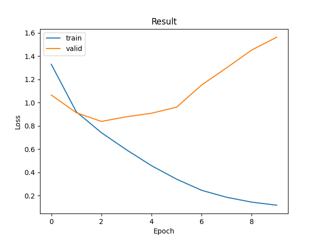
在這裡我們發現，模型在第三次訓練時達到了最佳損失，隨後的過程中出現了過擬合的現象。我們也看到儘管損失值達到了約0.83已經在可用範圍內，但明顯的有優化空間。
但是我不會先告訴你該如何優化的答案，而是希望你能先自行測試與調整這些參數設計與模型結構。這樣做的原因是，這些調整將成為實際應用中的寶貴經驗。不過我能給你一個提示：為什麼模型損失值下降如此之快，以及模型訓練損失值為何會持續下降。
總結
在今天的內容中，我們學習了如何使用昨天建立的Trainer類別來訓練卷積神經網路模型，並深入探討了資料加載器的運作原理與優勢。並且也知道了該如何建立了一個簡單的卷積神經網路模型，並自動計算每一層的輸出維度，已適應不同的資料輸入大小。
並且我們使用Trainer進行模型訓練，並繪製出損失值之間的相互關係，讓我們能一眼察覺到過度擬合的問題。不過，今天的內容還沒結束。你可以嘗試進一步優化模型，例如調整學習率、批次大小、網路層數，甚至是使用不同的優化器或正則化方法來提升模型的性能。這些實踐不僅能增強你的深度學習技能，也能幫助你更好地理解模型訓練中的細節。
Day 12｜【Day 12】在深度學習中電腦是如何辨識文字資料的
- 原文：https://ithelp.ithome.com.tw/articles/10358901
- 發佈時間：2024-09-26 23:02:10
前言
不知道你是否對模型進行了優化？如果效果還不理想，我可以給你個建議：我們應該降低學習率，以便模型能更好地收斂。如果出現過度擬合，可能是模型的複雜度過高。因此我們可以減少其卷積層和模型層數，使其更好地貼合數據，而我也會把完整的優化過程放在我的GitHub中，你也可以參考我的優化方式。現在讓我們進入今天的主題
在過去的11天中，我們學習了如何辨識圖像，了解電腦如何將視覺資訊轉換為數位訊號，並透過各種技術與演算法進行分類與分析。利用圖像辨識技術，我們學會了如何讓電腦看見並理解圖片中的物體、形狀和顏色等元素。
然而除了圖像辨識外，現代應用中也經常需要處理大量的文字資料，無論是搜尋引擎、自動翻譯、語音助手甚至是我們日常使用的社群平台，文字的理解與處理都扮演著至關重要的角色。因此在今天的部分，我們將重點放在自然語言處理的概述上，讓先清楚自然語言處理的完整系統架構。
自然語言處理(Natural Language Processing)
自然語言處理（Natural Language Processing, NLP）主要分為自然語言理解（Natural Language Understanding, NLU）和自然語言生成（Natural Language Generation, NLG）。基本上**NLU側重於理解和解釋人類語言，從中提取語義信息；而NLG側重於生成可讀的人類語言文本，將結構化數據轉化為語言表達**。現在先讓我們看看這兩個技術的共同基礎技術。
分詞器(Tokenizer)與詞彙(Token)
文字對於人類來說是一種自然的溝通方式，但對於電腦而言文字並不是一開始就能直接理解的資料。在進行文字辨識的過程中，電腦需要將這些「符號」轉化成它能夠處理的格式，然後進行分析與理解。
我們在前面的章節知道電腦必須將任何形式的文字資料轉換為數位格式，這可以是由鍵盤輸入的文字，也可以是圖像中提取出來的文字（光學字符識別，OCR）。每個字元在電腦中以編碼的形式儲存，比如說最常見的編碼方式是ASCII或Unicode。
而對於自然語言處理（Natural Language Processing, NLP）來說，在需要獲取一段文字時，第一步是進行分詞（word segmentation）處理。對於英文來說這相對簡單，因為單詞之間是用空格隔開的可以直接進行分詞的動作；但是在中文或其他語言中，電腦需要更多的邏輯來分辨哪些字符組合成一個詞。這時我們就需要利用 BPE（Byte Pair Encoding）、隱藏式馬可夫模型（Hidden Markov Model）等分析數據的算法，找出重複率最高的文字，並進行分詞動作。這些高階算法的好處在於能夠將一個單字拆分成更小的單位子詞（Subword）。
例如在英文中，Happy 和 Happiness 可能語意相似，只不過是後面的文法有些變化。但在深度學習中，這兩個單字會被分割成不同的單字。因此拆分成子詞的好處在於能夠將其分割成 happ 和 iness 這樣的文字向量。這樣我們只需分別計算每一個文字中的子詞，就能夠計算出這些被拆分出來的文字向量權重。這時電腦就能更好地理解這些文字之間的關係了。而這些被通過算法切割出來的文字就被稱之為詞彙(Token)，而協助我們完成分詞的的工具就叫做分詞器(Tokenizer)。
分詞器的建立通常是先通過大量分析文本找出對應的Token後，再建立成一個可轉換的映射表，讓我們能夠重複利用。此外一個模型中通常會有對應的Tokenizer，以將正確的映射數字投射到更高維的空間向量。
詞嵌入(Word Embedding)
詞嵌入（Word Embedding）是一種將詞彙轉換為數字向量的技術，這些向量可以捕捉詞語之間的語義和語法關係。詞嵌入的主要目的是使電腦能夠理解和處理自然語言文本。這些詞嵌入之間的關係通過模型訓練，使相對應的Token靠攏在一起，從而達到更好的分類效果。
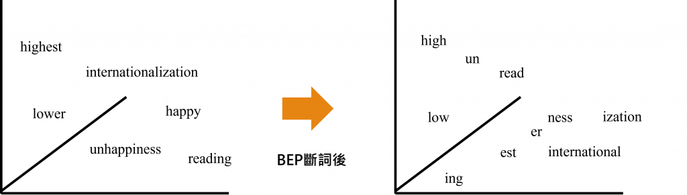
詞嵌入層的作法是將原始的Token映射到一個大小為emb_dim的隨機初始化向量空間。假設我們的詞彙表(Vocabulary)大小是100，emb_dim大小是50，這樣就會產生一個大小為(100, 50)的向量矩陣。在深度學習中，我們的目標是訓練這50維的向量空間，使得相似的Token映射到相近的向量。接下來的步驟是在這些向量空間中劃分數條不規則的線，以進行分隔和分類。這項技術在自然語言處理中非常重要，甚至可以說，只要有一個出色的Word Embedding，就能達到良好的分類效果。
總結
在今天的文章中，我的主要目的是讓你了解 NLP 的核心概念及其兩大分支——自然語言理解（NLU）和自然語言生成（NLG）。我也介紹了這兩者技術之間的根本技術——詞嵌入（Word Embedding），並解釋了將文字拆分的概念，以幫助你更好地理解分詞器（Tokenizer）和詞彙（Token）。這樣做的目的是為了讓你更好地理解這些名詞之間的關聯性，這樣子當你真正遇到時才能更好的加深你對這些名詞的印象
Day 13｜【Day 13】探索文字與時間依賴關係-時間序列模型介紹與數學推導
- 原文：https://ithelp.ithome.com.tw/articles/10359218
- 發佈時間：2024-09-27 23:20:18
前言
在昨天的課程中，我們已經介紹完了自然語言處理的基礎名詞，因此今天將開始進入文字辨識的環節。不過在此之前，我們需要先理解為何文字與時間有關，並介紹處理時間序列的重要模型循環神經網路（Recurrent Neural Network, RNN）與長短期記憶（Long Short-Term Memory, LSTM）。因此在這幾天的內容中我們會探討這兩個模型如何經過Word Embedding後進行運算，並成功進行文字辨識。
循環神經網路（Recurrent Neural Network, RNN）
讓我們首先來理解文字與時間的關係。文字在自然語言中有順序（Sequence）和上下文關係（Context），這意味著前後文的詞語會影響整個句子的意義。例如，"他拿了錢就走"和"他走了才拿錢"的詞組相同，但意思完全不同：前者表示「先拿錢再離開」，而後者表示「先離開後再拿錢」。這展示了文本的時間序列特性（Temporal Sequence Characteristic）如何影響句子的具體意思。

因此在設計神經網路模型時，需要考慮每個時序的位置，並根據這些時序的排列組合來預測正確的結果而循環神經網路是一種專門用於處理時間序列數據的神經網路模型，其核心思想是通過內部的循環結構來保留之前的信息。
循環神經網路的基本運算可分為兩個部分：第一部分計算當前時序的輸入x(t)；第二部分則計算前幾個時序的隱狀態（Hidden State, h(t)）。這兩者的結果會結合在一起，並通過tanh激勵函數將結果縮放到-1到1之間，其數學公式如下：
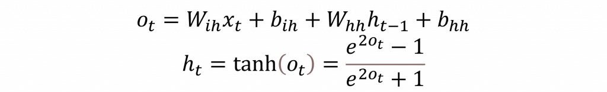
而在公式中這裡選用tanh激勵函數而不是sigmoid或ReLU，是因為**tanh能夠提供更廣泛的信息範圍**。與sigmoid函數的返回值範圍為0到1不同，tanh的範圍是-1到1，能夠提供負相關的特徵，這對於時間序列模型來說非常重要，因為它能夠保留更多有效的信息，讓資訊能夠更有效地傳遞下去，從而提升預測的效能。
長短期記憶（Long Short-Term Memory, LSTM）
循環神經網路在處理長期依賴的序列時，常常會遇到梯度消失問題。這是因為當某些數據在輸入時，其輸出值非常接近於0，隨著時間推移，這些資料造成的梯度將趨近於0，導致模型無法正常更新。為了解決這個問題，長短期記憶網路應運而生。

LSTM使用不同的門控機制（Gating Mechanism）來控制信息的傳遞和保護，使其能更好地處理長期依賴問題。LSTM的結構由多個單元組成，每個單元包含三個主要的門控機制：輸入門（Input Gate）、遺忘門（Forget Gate）和輸出門（Output Gate），以及一個貫通整個網路的記憶單元（Cell State）。這些門控機制的作用如下：
輸入門（Input Gate）
輸入門的主要功能是決定是否將新的信息寫入記憶單元，這層主要根據前一個時間步驟的隱藏狀態來進行計算，用來模擬人類接收新信息時對其重要性的評估，決定是否將其存儲到長期記憶（記憶單元）中。這層涉及兩個主要參數其公式如下：
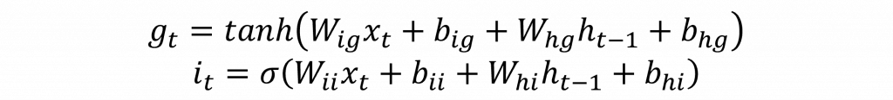
候選記憶單元g(t)的概念類似於循環神經網路中的下一個隱藏狀態h(t)，其目的是生成潛在的新信息。在LSTM中，每一層的計算都需要先生成候選結果，然後與對應的門控機制進行運算。
因此在輸入門層中，首先通過前一個時間步驟和當前的輸入進行計算，然後通過tanh函數生成其概率分布。接下來，這個結果會與i(t)進行哈達瑪乘積運算。由於i(t)是經過sigmoid函數處理的，其值介於0到1之間，因此這個乘積運算能夠剔除不重要的信息，只保留重要的信息進入記憶單元形成長期記憶。
遺忘門（Forget Gate）
遺忘門的作用是控制哪些信息應該從記憶單元中遺忘，這類似於人類選擇性遺忘不再重要的記憶，以避免記憶過載。公式相對簡單，通過sigmoid函數計算前一個記憶單元c(t-1)中的信息應該被遺忘的程度其數學公式如下：

記憶單元（Cell State）
有了輸入門和遺忘門的計算結果後，可以更新當前時間步的記憶單元c(t)，該公式是將兩者的輸出結果進行加法運算，具體公式如下：
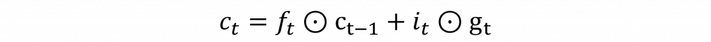
輸出門（Output Gate）
當我們得到記憶單元的結果後，接下來像循環神經網路一樣，計算短期記憶o(t)的資料分布，並將其與記憶單元c(t)的長期記憶進行哈達瑪乘積運算。這樣每一層的輸出就能同時保留過去的信息並融合當前的最新信息
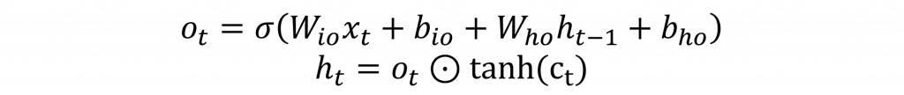
這些門控機制使LSTM在處理長期依賴關係時能夠保持關鍵信息，避免了梯度消失問題，因此與傳統RNN相比，LSTM在處理較長的序列時表現得更加出色。
總結
在今天的內容中，我們公式從中可以得知其時序是單向的運算，例如由左到右或由右到左。這樣的運算方式實其跟我們人類觀看在文字時的方式不太一樣。我們人類有時候跳著會觀看一些文字，或在序順時相反也能自動解析夠這些文字。所以一個好的模型應要該的具備這樣特性。對於前者可能我們的模型無法有效解決，但對於後者我們可以通過輸入一些混亂的文字讓來模型學會更多特徵。這個做法在深度學習中，即是種透過加入噪音以提升效能模型的正化規方法。不信你認真的重新閱讀一下這段文字。
Day 14｜【Day 14】用LSTM解IMDB情緒分析- 排成器的使用與空白分詞
- 原文：https://ithelp.ithome.com.tw/articles/10360065
前言
IMDB情緒分析資料集是NLP領域中的入門磚，該資料集從IMDB網站抽取的電影評論，並以正面（positive）或負面（negative）方式標註。它包含50000條電影評論，其中25,000條用於訓練與驗證，另外25,000條則用於測試。由於資料量龐大且任務相對簡易，因此非常適合學習和優化模型的方向，同時也有助於更好地理解自然語言處理的模型架構。在今天的內容中，我們可以前往其資料的官方網站下載該資料集。
使用PyTorch建立LSTM情感分析模型
今天我們會使用 HuggingFace 公司的分詞器對 IMDB 影評資料集進行切割。這樣做的原因是，使用空白斷詞法會產生大量的 Tokens，並且會出現相似詞彙被識別為不同詞彙的問題。HuggingFace 的分詞器提供了一個很好的解決辦法。
今天我們要使用的 BERT 分詞器是通過分析文本並運用 BPE 算法獲取的詞彙表，這種方式更能達成我們的目標。現在讓我們看看自然語言處理模型如何進行分詞、填充、訓練，最後我們還會介紹如何使用 Warmup 排程器來改善模型性能，以提升最終表現。
【STEP 1】IMDB影評資料轉換與標註
由於我們下載的 IMDB 的影評資料是一個非常大型的.txt 檔案，因此我們在讀寫資料時必須不斷地使用open函數將其開啟，這一點在讀取資料時就會顯得異常緩慢，因此我們可以先通過讀取資料後將其轉換成一個 CSV 檔案，這樣做的好處是可以利用 Pandas 來方便地處理數據已加後續資料讀取的速度，而大多的自然語言處理資料集也都是使用CSV檔案進行保存的。
import pandas as pd
import os
def convert_IMDB_to_csv(directory, csv_file_path):
data = []
labels = []
for label in ['pos', 'neg']:
for subset in ['train', 'test']:
path = f"{directory}/{subset}/{label}"
for file in os.listdir(path):
if file.endswith(".txt"):
with open(f'{path}/{file}', 'r', encoding='utf-8') as f:
data.append(f.read())
labels.append('positive' if label == 'pos' else 'negative')
df = pd.DataFrame({'review': data, 'sentiment': labels})
df.to_csv(csv_file_path, index=False)
convert_IMDB_to_csv('aclImdb', 'imdb_data.csv')
我們下載下來的aclImdb資料夾中，有train與test資料夾，它們的標籤是通過pos與neg資料夾分割的。因此我們可以使用 os.listdir 去開啟這些文件，並存成一個列表，最後通過pd.DataFrame轉換其資料型態，儲存成CSV資料。
【STEP 2】設定亂數種子以確保結果的可重現性
在進行優化實驗時，隨機性的影響常常導致每次驗證結果的差異，因此確保結果的可重現性至關重要。為了解決這一問題，我們可以通過固定隨機種子來確保每次模型訓練的結果一致。所以我們需要設定 Python 標準亂數生成器、NumPy 和 PyTorch 的亂數種子，從而有效控制訓練過程中的隨機性，方便重現實驗結果。
import torch
import numpy as np
import random
def set_seeds(seed):
random.seed(seed)
np.random.seed(seed)
torch.manual_seed(seed)
if torch.cuda.is_available():
torch.cuda.manual_seed(seed)
torch.cuda.manual_seed_all(seed)
torch.backends.cudnn.benchmark = False
torch.backends.cudnn.deterministic = True
set_seeds(2526)
【STEP 3】讀取 CSV 並進行空白斷詞
接下來我們需要讀取 CSV 檔案中的影評資料，並使用 BERT 的 AutoTokenizer 導入期分詞器，已幫助我們進行填充與分詞的工作
import pandas as pd
from transformers import AutoTokenizer
df = pd.read_csv('imdb_data.csv')
reviews = df['review'].values
sentiments = df['sentiment'].values
labels = (sentiments == 'positive').astype('float32')
tokenizer = AutoTokenizer.from_pretrained("bert-base-uncased")
input_datas = tokenizer(reviews[:2].tolist(), max_length=10, truncation=True, padding="longest", return_tensors='pt')
print('Tokenizer輸出:')
print(input_datas)
# ----- 輸出 -----
Tokenizer輸出:
{'input_ids': tensor([[ 101, 22953, 2213, 4381, 2152, 2003, 1037, 9476, 4038, 102],
[ 101, 11573, 2791, 1006, 2030, 2160, 24913, 2004, 2577, 102]]), 'token_type_ids': tensor([[0, 0, 0, 0, 0, 0, 0, 0, 0, 0],
[0, 0, 0, 0, 0, 0, 0, 0, 0, 0]]), 'attention_mask': tensor([[1, 1, 1, 1, 1, 1, 1, 1, 1, 1],
[1, 1, 1, 1, 1, 1, 1, 1, 1, 1]])}
這裡我們能看到他返回了三個參數。第一個參數 input_ids 代表文字經過斷詞後轉換成數字的結果，第二個參數 token_type_ids 則代表的是該文字是第幾句，第三個參數 attention_mask 則表示被填充的序列，其中 0 代表該位置被填充。而在這裡我們只會使用 input_ids 的部分，後續兩個參數的實際用途會在講解 BERT 模型時詳細說明。
【STEP 4】建立Dataset與DataLoader
由於先前我們都是通過直接使用Pytorch官方提供的Dataset類別，因此今天是我們第一次手動建立資料型態。其方式類似於我們之前重新包裝CIFAR10的Dataset類別，但需要注意的是，這裡每個批次中的文字長度不盡相同，因此我們還需要定義一個collate_fn函數。這個函數會在DataLoader中被調用，以完成動態填充的功能。
在DataLoader這一類別中其動作順序會先通過__getitem__取得其批量資料，接下來交給collate_fn進行輸出或轉換的動作，而這一條件就將在達到len(self.x)時停止，因此我們定義collate_fn其實就是將其批量取出，並通過self.tokenizer將我們輸入的文字轉換成Tokens並對其進行填充與截斷的功能
from torch.utils.data import Dataset, DataLoader
from sklearn.model_selection import train_test_split
class IMDB(Dataset):
def __init__(self, x, y, tokenizer):
self.x = x
self.y = y
self.tokenizer = tokenizer
def __getitem__(self, index):
return self.x[index], self.y[index]
def __len__(self):
return len(self.x)
def collate_fn(self, batch):
batch_x, batch_y = zip(*batch)
input_ids = self.tokenizer(batch_x, max_length=128, truncation=True, padding="longest", return_tensors='pt').input_ids[:,1:-1]
labels = torch.tensor(batch_y)
return {'input_ids': input_ids, 'labels': labels}
x_train, x_valid, y_train, y_valid = train_test_split(reviews, labels, train_size=0.8, random_state=46, shuffle=True)
trainset = IMDB(x_train, y_train, tokenizer)
validset = IMDB(x_valid, y_valid, tokenizer)
train_loader = DataLoader(trainset, batch_size=32, shuffle=True, collate_fn=trainset.collate_fn)
valid_loader = DataLoader(validset, batch_size=32, shuffle=True, collate_fn=validset.collate_fn)
而在這裡我們除了建立一個DataLoader之外，我們還使用了train_test_split這一個函數，將資料分成8:2的比例，已進行訓練與驗證的動作。
【STEP 5】建立 LSTM 模型
由於 RNN 和 LSTM 都是時間序列模型，所以我們可以將它們一起討論。在過程中，我們使用了 bidirectional=True 這個參數，該參數表示時間序列模型是否要進行雙向運算。如果這個參數設為 True，意味著每個輸入序列都會經過兩個 LSTM 層：一個是前向 LSTM，另一個是後向 LSTM。這兩個 LSTM 層分別產生各自的隱藏狀態，然後將它們拼接在一起作為最終的輸出。因此，當我們設定這個參數為 True 時，隱藏狀態特徵的數量將會是原來的兩倍。
而經過時間序列模型的輸出會返回兩個變數：output 和 h_n。output 是所有時間步的隱狀態輸出，在設置 batch_first=True 和 bidirectional=True 的情況下，其資料維度是 (batch_size, time_step, hidden_size * 2)。h_n 代表最後一個時間步的運算（在 LSTM 中則是 c(t) 的輸出），其資料維度為 (1 * 2, batch_size, hidden_size)，因此我們可以從output中的最後一個time_step的資料，這樣子就代表的是LSTM最後的運算結果了。
import torch.nn as nn
class TimeSeriesModel(nn.Module):
def __init__(self, vocab_size, embedding_dim, hidden_size, padding_idx, num_layers=1, bidirectional=True, model_type='LSTM'):
super().__init__()
self.criterion = nn.BCELoss() #定義損失函數
self.embedding = nn.Embedding(vocab_size, embedding_dim, padding_idx=padding_idx)
# 切換模型
rnn_models = {'LSTM': nn.LSTM, 'RNN': nn.RNN}
self.series_model = rnn_models.get(model_type, nn.LSTM) (
embedding_dim,
hidden_size,
num_layers=num_layers,
bidirectional=bidirectional,
batch_first=True
)
# 如果是雙向運算則最終的hidden state會變成2倍
hidden = hidden_size * 2 if bidirectional else hidden_size
self.fc = nn.Linear(hidden, 1)
self.sigmoid = nn.Sigmoid()
def forward(self, **kwargs):
# 取得輸入資料
input_ids = kwargs['input_ids']
labels = kwargs['labels']
#轉換成詞嵌入向量
emb_out = self.embedding(input_ids)
# 時間序列模型進行運算
output, h_n = self.series_model(emb_out)
# output: (batch_size, seq_len, hidden_size * 2)
h_t = output[:, -1, :]
# h_t: (batch_size, 1, hidden_size * 2)
y_hat = self.sigmoid(self.fc(h_t))
# h_t: (batch_size, 1)
# 返回loss與logit
return self.criterion(y_hat.view(-1), labels), y_hat
在程式中，我們發現輸入是經過一層Word Embedding進行轉換的。實際上給予的Tokens會先通過Embedding層將其轉換到更高的資料維度，再交由LSTM進行運算。在這裡需要注意的是，由於Padding Tokens的存在，Word Embedding在反向傳播時會計算這些Tokens的梯度。因此我們需要設定padding_idx，以忽略這些梯度的運算。
【STEP 6】使用排程器訓練模型
接下來我們要使用排程器來訓練模型，今天我們將使用Warmup（暖身）這個排程器進行優化。該優化器的概念是，當我們一次輸入較大量的批量資料時，可能無法立即得知當前這組資料的方向。假設我們知道右邊路徑是最佳解，但當前的這個批量資料卻往左邊移動，這樣模型在一開始學習的方向就會錯誤。因此我們需要在一開始還沒確認方向時，先給予很小的學習率，直到暖身結束。這樣就能讓模型逐漸掌握資料的方向性。
import torch.optim as optim
from torch.optim.lr_scheduler import LambdaLR
from Trainer import Trainer
# 自定義 Warmup Scheduler
def get_warmup_scheduler(optimizer, warmup_steps, total_steps):
def lr_lambda(current_step):
# 計算 warmup 比例
if current_step < warmup_steps:
return float(current_step) / float(max(1, warmup_steps))
# 隨後開始隨著 total_steps 逐漸減小學習率 (線性衰減或其他方法)
return max(0.0, float(total_steps - current_step) / float(max(1, total_steps - warmup_steps)))
return LambdaLR(optimizer, lr_lambda)
# 模型、優化器和其他設置
model = TimeSeriesModel(
vocab_size=len(tokenizer), # Embedding的總大小等同於詞彙表大小
embedding_dim=50,
hidden_size=32,
model_type='LSTM',
padding_idx=tokenizer.pad_token_id
)
optimizer = optim.Adam(model.parameters(), lr=1e-3, weight_decay=0.001)
warmup_steps = len(train_loader) * 0.2
total_steps = len(train_loader) * 10
scheduler = get_warmup_scheduler(optimizer, warmup_steps, total_steps)
而在排成器上我們選擇使用在train_loader的總步數(Step)上取0.2的比例進行暖身找到方向，並且總訓練步數為10個週期，因此total_steps為 len(train_loader) * 10，這時我們同樣的使用Trainer進行訓練並會驗證模型在驗證集上的表現，並使用早停法則來防止過擬合。
# 訓練過程中的 Trainer 設置
trainer = Trainer(
epochs=10,
train_loader=train_loader,
valid_loader=valid_loader,
model=model,
optimizer=[optimizer],
scheduler=[scheduler], # 加入學習率排成器
)
# 訓練過程
trainer.train(show_loss=True)
# ----- 輸出 -----
Train Epoch 9: 100%|██████████| 1250/1250 [00:27<00:00, 45.54it/s, loss=0.450]
Valid Epoch 9: 100%|██████████| 313/313 [00:05<00:00, 60.19it/s, loss=0.631]
Saving Model With Loss 0.39172
Train Loss: 0.31513| Valid Loss: 0.39172| Best Loss: 0.39172

而這時我們將能看到模型在訓練的後期已經達到很漂亮的收斂結果其訓練損失值與驗證損失值也並無太大的差異，因此在這裡我們可以在撰寫一個函數來去觀看這個訓練出來的準確率
【STEP 7】模型評估
現在我們先載入表現最佳的模型，並且修改Trainer中的驗證函數。在這裡我們將超過0.5的數值視為正標籤，小於0.5的則視為負標籤，然後統計結果集以進行最終的驗證，計算模型的準確度：
model.load_state_dict(torch.load('model.ckpt'))
model.eval()
device = torch.device('cuda' if torch.cuda.is_available() else 'cpu')
total_correct = 0
total_samples = 0
with torch.no_grad():
for input_data in valid_loader:
input_datas = {k: v.to(device) for k, v in input_data.items()}
_, y_hat = model(**input_datas)
pred = (y_hat > 0.5).long()
labels = input_datas['labels']
total_correct += torch.sum(pred.view(-1) == labels).item()
total_samples += labels.size(0)
accuracy = total_correct / total_samples
print(f'Validation Accuracy: {accuracy*100:.3f} %')
# ----- 輸出 -----
Validation Accuracy: 82.920 %
在這裡我們可以看到驗證數據已經達到了82.92%。不過這個結果仍有優化空間。我們發現在collate_fn中，輸入的Token只有128個就被截斷了，同時這些資料的相似性也相當高。因此我們可以用L2正則化的方式來處理這些高度相似的資料。此外，在我們的模型經過學習率調整後，也可以加入其他的排程器邏輯，使其能夠更佳地收斂。
總結
今天我們從頭到尾完成了一個自然語言處理的任務，同時進行了模型優化。為了保證每次模型訓練結果的一致性，我們特別強調了設置隨機種子的必要性。我們手動創建了 Dataset 並自定義了 collate_fn 函數，以實現動態填充的功能。這些功能在自然語言處理和模型優化中都是非常重要的技術。
當然我們可以不使用動態填充資料，但這樣會導致增加太多的Pandding Tokens使模型運算時間大幅增加。在最後我還提到了一些可以進一步優化的建議，這些為你提供了進一步學習和改進模型的方向，通過這些策略你可以嘗試將模型的準確率優化到 90% 以上看看吧~
Day 15｜【Day 15】圖片生成的老前輩-DCGAN介紹與數學推導
- 原文：https://ithelp.ithome.com.tw/articles/10360582
- 發佈時間：2024-09-29 21:36:03
前言
現在我們的學習進度已經達到一半，並且已經完成了圖像與文字的辨識任務。接下來我們將進入一個更加特殊的單元生成式AI(Generative AI)。今天的課程重點是介紹圖片生成的簡易模型。現在讓我們先來了解其技術原理吧!
生成對抗網路（Generative Adversarial Networks, GANs）是由Ian Goodfellow等人在2014年提出的一種方法。其基本概念是通過一個生成模型從潛在空間（latent space）中隨機取樣作為輸入，這個潛在空間是由亂數產生的。生成模型嘗試生成與訓練集中真實樣本相似的結果。由於該技術是一種非監督式學習技術，因此我們還需要建立一個判別模型，用來判斷生成的圖片的真偽，其目的是盡可能準確地分辨生成的結果和真實樣本，以計算損失值。
DCGAN（Deep Convolutional GAN）
而不同於GANs這類只使用深度神經網路建立的生成式模型，DCGAN（Deep Convolutional GAN）更是在生成圖像的應用中扮演了重要角色，因其結合了卷積神經網路和GAN的力量，大幅提升了圖像生成的品質與穩定性，現在讓我們看看其核心概念與數學推導吧!

DCGAN的架構主要由兩部分組成判別器（Discriminator）和生成器（Generator）。判別器負責判斷輸入的圖像是真實的還是生成的，它接受的資料包括由生成器產生的圖像，或是從我們資料集中取得的真實圖像。判別器的目標是將真實圖像與生成圖像區分開來，這些資料會通過多個卷積層進行特徵提取，最終輸出一個表示真實或虛假的概率。而生成器的目的是通過一個隨機的向量，經過一系列轉置卷積層（Transposed Convolution Layers），最終生成與目標圖像相似的圖像。
在判別器中圖像會逐步通過卷積層縮小成一個特徵圖，而在生成器中則使用轉置卷積層來逐步放大特徵圖，從隨機噪音(Random Noize)中合成完整的圖像。
轉置卷積層也會被稱為
反卷積層(Deconvolution)，因此在Paper中你看到兩個名詞時其實都在指向相同的東西。
而對於DCGAN的數學公式其實只有一個損失函數的設計。該函數是基於博弈論中的零和博弈設計，旨在讓生成器和判別器進行對抗訓練，其損失函數為：
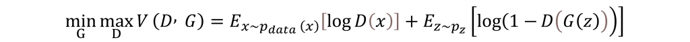
在以上公式中G 是生成器，負責生成圖像；D 是判別器負責區分真實圖像和生成圖像。x 是真實數據來自於真實的圖片輸入 p(x)；z 是隨機噪聲來自於事先定義的噪聲分佈 p(z)。
該損失函數的目標是生成器希望最大化判別器的錯誤率，也就是說生成的圖像越難被判別器識別出來，生成器的表現就越好。反之判別器則希望能正確區分真實圖像與生成圖像。
訓練DCGAN的技巧
在訓練DCGAN時我們需要注意的事情就是緩解不同層之間的內部協變轉移（Internal Covariate Shift），即由於前面幾層參數的改變會引起後面幾層輸入分佈的劇烈變化。因為在DCGAN這類的深層網路，模型的梯度會由於深度而更加不穩定導致梯度爆炸或梯度消失，而且由於DCGAN訓練時的兩個網路是對抗性的，容易陷入不穩定的訓練狀態。因此我們通常會加入批量標準化(Batch Normalization)平滑這種對抗，讓判別器和生成器都能更好地學習。
批量標準化會對每一個特徵通道（Channel）分別計算均值和標準差。這些計算是在小批量（mini-batch）的數據上進行的。均值E[x]是每個通道的平均值，而標準差Var[x]是根據偏差估計（biased estimator）計算的，這表示在計算方差時分母使用了批量大小。

而在這個過程中，每個特徵通道都有對應的可學習參數向量γ（縮放）和β（偏移）。這兩個參數的維度都是特徵通道的大小。而在Pytorch預設情況下，γ的元素初始化為1，而β的元素初始化為0。這意味著初始的批量標準化不會改變標準化後數據的比例和位置。
一個問題在於我們通常會選擇使用ReLU作為這些模型的激勵函數，然而標準的ReLU函數在輸入小於0時會輸出0，這會導致負輸入的神經元在後續的訓練過程中無法更新（梯度為0），也就是所謂的神經元死亡問題(Dead ReLU Problem)。
因此在DCGAN這類深層網路中，通常會改用 Leaky ReLU。因為它能透過設定 α 值，允許負輸入有一個小的正梯度，使得這些神經元仍然能夠更新，保持負輸入的梯度。這有助於在訓練過程中維持更好的梯度，特別是在深層網路中。這使得模型能夠學習更複雜的數據表示，從而可能提高模型的整體性能。

而這也是我們在Day 8中提到在後續的網路中都是使用ReLU的變化版本，而就是其中一種該激勵函數特別適合用於需要處理較深層網路結構的情況，能夠有效地緩解死神經元問題，提高模型的訓練效率和性能。
總結
在今天的內容中，我們可以看到DCGAN的數學推導其實並不複雜，基本上就是一個CNN的延伸。唯一的差異在於一個基於博弈論的損失函數，使其能夠完成生成圖像的工作。不過雖然數學式簡單，但在程式的建立上會有一些難度。因此，我們今天還介紹了如何更好地優化這些模型。而在明日我會告訴你如何完整地建立出一個DCGAN模型。
Day 16｜【Day 16】用DCGAN生成假的MNIST手寫辨識集
- 原文：https://ithelp.ithome.com.tw/articles/10361289
前言
在昨天我們介紹了DCGAN的原理，並且分享了一些訓練技巧。不過昨日的內容可能不夠詳盡，例如模型訓練過程中的各個步驟，如何調整鑑別器和生成器，並對其進行優化。這次我將透過拆解程式碼，詳細介紹如何使用DCGAN來生成MNIST風格的手寫數字圖片。我們將逐步說明程式碼中的重要部分，介紹生成器和鑑別器的設計、損失函數的計算以及模型訓練的具體流程。
在本次的內容中我們將繼續延續前面章節所提到的基礎設定，具體來說就是導入本次將會使用到的完整函式庫，並設置固定的亂數種子。這些步驟我們在前面章節中已經詳細講解過，因此在此不再重複過多敘述。而在本次的重點放在生成器與鑑別器的構建以及它們的訓練過程上，這部分內容至關重要因為它將決定整個生成對抗網絡模型的最終性能表現。
import torch
import torch.nn as nn
import torch.optim as optim
import torchvision as tv
from torch.utils.data import DataLoader
import numpy as np
import random
from tqdm import tqdm
from matplotlib import pyplot as plt
def set_seed(seed):
random.seed(seed)
np.random.seed(seed)
torch.manual_seed(seed)
if torch.cuda.is_available():
torch.cuda.manual_seed(seed)
torch.cuda.manual_seed_all(seed)
torch.backends.cudnn.benchmark = False
torch.backends.cudnn.deterministic = True
set_seed(0)
【STEP 1】數據集準備
在這次的生成任務中我們依然選用經典的 MNIST 數據集來進行圖片生成操作。雖然這次的任務看似與我們之前在使用深度神經網路進行分類任務的程式碼相似，但有幾個關鍵點需要我們格外注意。首先這次的模型訓練屬於非監督式學習，也就是說我們並不會使用標籤來指導模型進行學習。因此不需要像監督式學習那樣通過驗證集來評估模型的性能。
而我們的主要目標是讓生成器和鑑別器在對抗過程中不斷優化，直到生成器能夠生成與真實數據分布極為相似的圖片，因此為了增加訓練數據量並提高模型的泛化能力，我們可以將訓練集和測試集進行合併，讓模型能夠接觸到更多樣的數據樣本，從而達到更好的生成效果。
transform = tv.transforms.Compose([
tv.transforms.ToTensor(),
tv.transforms.Normalize(mean=[0.5,], std=[0.5,])
])
trainset = tv.datasets.MNIST("MNIST/", train=True, transform=transform, download=True)
validset = tv.datasets.MNIST("MNIST/", train=False, transform=transform, download=True)
dataset = trainset + validset
train_loader = DataLoader(dataset, batch_size=128, shuffle=True, num_workers=0, pin_memory=True)
【STEP 2】建立鑑別器
昨日提到鑑別器的作用是將輸入的圖片分類為真實或偽造，因此他的輸出式屬於一種二分類的算法，最終輸出一個經過Sigmoid激活函數的值，表示該圖片是真實的概率。而在這裡我們也加入了昨日提到的BatchNorm2d並在每一層之中加入LeakyReLU激活函數來解決ReLU的死亡神經元問題。
class Discriminator(nn.Module):
def __init__(self):
super(Discriminator, self).__init__()
self.D = nn.Sequential(
# input is (1) x 28 x 28
nn.Conv2d(1, 64, 4, 2, 1, bias=False),
nn.BatchNorm2d(64),
nn.LeakyReLU(0.2, inplace=True),
# state size. (64) x 14 x 14
nn.Conv2d(64, 128, 4, 2, 1, bias=False),
nn.BatchNorm2d(128),
nn.LeakyReLU(0.2, inplace=True),
# state size. (128) x 7 x 7
nn.Conv2d(128, 256, 3, 2, 1, bias=False),
nn.BatchNorm2d(256),
nn.LeakyReLU(0.2, inplace=True),
# state size. (256) x 4 x 4
nn.Conv2d(256, 1, 4, 1, 0, bias=False),
# state size. (1) x 1 x 1
nn.Sigmoid()
)
def forward(self, x):
return self.D(x)
在鑑別器的設計中我們的方式基本上與傳統的卷積神經網路非常相似。通過逐層提取圖片的特徵，將特徵圖的通道數量逐漸增加，從而使模型能夠捕捉到圖片中越來越多的高級特徵。這個過程的核心是對圖片特徵的逐步縮小和濃縮，這就是卷積網路的典型特性隨著層數加深，圖片的空間維度會逐漸減小，而特徵通道的數量會逐步增多。
【STEP 2】建立生成器
生成器的目標是將隨機噪聲（noize_dim）轉換成一張28x28的MNIST風格圖片。因此我們使用了卷積轉置層來進行上採樣，並且使用BatchNorm2d來穩定訓練過程。而最後一層之所以使用Tanh而不是Sigmoid而是tanh是因為我們需要將輸出範圍映射到[-1,1]，對應數據集的標準化範圍。而在這裡我們假設輸入的noize_dim是一個(100, 1, 1)大小的隨機噪音資料
上採樣（Upsampling）是一種將低維度數據轉換為高維度數據的技術，通常應用在生成模型中，尤其是像生成對抗網絡中的生成器。例如本次生成器的任務是將一個小的隨機噪聲向量（比如大小為 (100, 1, 1) 的向量）轉換為與目標圖片大小相同的數據（比如 MNIST 圖片為 28x28 的大小）。為了實現這個過程，我們使用了卷積轉置層，這個層負責進行上採樣。
class Generator(nn.Module):
def __init__(self, noize_dim):
super(Generator, self).__init__()
self.G = nn.Sequential(
# input is (100) x 1 x 1
nn.ConvTranspose2d( noize_dim, 256, 4, 1, 0, bias=False),
nn.BatchNorm2d(256),
nn.ReLU(True),
# state size. (256) x 4 x 4
nn.ConvTranspose2d(256, 128, 4, 2, 1, bias=False),
nn.BatchNorm2d(128),
nn.ReLU(True),
# state size. (128) x 8 x 8
nn.ConvTranspose2d( 128, 64, 4, 2, 1, bias=False),
nn.BatchNorm2d(64),
nn.ReLU(True),
# state size. (64) x 16 x 16
nn.ConvTranspose2d( 64, 1, 4, 2, 3, bias=False),
# state size. (1) x 28 x 28
nn.Tanh()
)
def forward(self, x):
return self.G(x)
device = torch.device('cuda' if torch.cuda.is_available() else 'cpu')
noize_dim = 100
G = Generator(noize_dim).to(device)
D = Discriminator().to(device)
criterion = nn.BCELoss()
G_optimizer = optim.Adam(G.parameters(), lr = 1e-3)
D_optimizer = optim.Adam(D.parameters(), lr = 1e-3)
在生成對抗網絡的訓練過程中，由於生成器和鑑別器是兩個獨立的模型，它們各自的權重更新過程需要分開進行，因此我們需要為生成器和鑑別器分別定義兩個優化器。這樣可以靈活地對每個模型設置不同的學習率，從而達到更好的效果。
通常來說生成器和鑑別器的學習速率不同。因為生成器的目標是學會欺騙鑑別器，這是一個較為困難的任務，因此生成器可能需要較高的學習率來加速其學習過程，而鑑別器則需要更加穩定的更新，因此學習率可以設置得稍微低一點。
【STEP 4】訓練鑑別器與生成器
該模型的訓練方式比較特殊，我們需要分別訓練鑑別器與生成器而在鑑別器的部分我的就會顯得比較值觀，還記得昨日的損失公式嗎?
我們要讓鑑別器最大會真實圖像的機率，並減少生成器的圖像機率，因此對於鑑別器來說，我們需要先計算一次鑑別器對於真實圖像的損失值，在計算一次由生成器計算出來的損失值，最後將兩者加總已計算梯度。
def D_train():
D_optimizer.zero_grad()
x_real = x.to(device)
y_real = torch.ones(x.size(0)).to(device)
x_real_predict = D(x_real)
D_real_loss = criterion(x_real_predict.view(-1), y_real)
D_real_loss.backward()
noise = torch.tensor(torch.randn(x.size(0), noize_dim, 1, 1)).to(device)
y_fake = torch.zeros(x.size(0)).to(device)
x_fake = G(noise)
x_fake_predict = D(x_fake)
D_fake_loss = criterion(x_fake_predict.view(-1), y_fake)
D_fake_loss.backward()
D_total_loss = D_real_loss + D_fake_loss
D_optimizer.step()
return D_total_loss.item()
生成器的訓練則是讓鑑別器將生成的假圖片判定為真實圖片，因此我們將生成的假圖片輸入鑑別器，並將其結果與標籤（即1）進行比較，計算生成器的損失並更新其參數。生成器的部分只需要一個標籤，我們只需要將鑑別器所判定的標籤與實際標籤進行對比即可。在這裡我們要注意，由於我們要求生成器生成出來的是實際標籤，因此我們使用torch.ones來生成一個全為真實標籤的張量。
def G_train():
G_optimizer.zero_grad()
noise = torch.tensor(torch.randn(x.size(0), noize_dim, 1, 1)).to(device)
y_target = torch.ones(x.size(0)).to(device)
x_fake = G(noise)
y_fake = D(x_fake)
G_loss = criterion(y_fake.view(-1), y_target)
G_loss.backward()
G_optimizer.step()
return G_loss.item()
【STEP 6】開始訓練模型
當我們定義好優化器後，只需將 Trainer 中的訓練部分移動出來即可。在訓練時，我們應使用 D_train() 和 G_train() 這兩個函數，而不是 train() 和 valid()。
epochs = 1000
early_stopping = 100
stop_cnt = 0
show_loss = True
best_loss = float('inf')
loss_record = {'Discriminator': [], 'Generator': []}
for epoch in range(epochs):
train_pbar = tqdm(train_loader, position=0, leave=True)
D_record, G_record = [], []
for idx, (x, _) in enumerate(train_pbar):
D_loss = D_train()
G_loss = G_train()
D_record.append(D_loss)
G_record.append(G_loss)
train_pbar.set_description(f'Train Epoch {epoch}')
train_pbar.set_postfix({'D_loss': f'{D_loss:.3f}', 'G_loss': f'{G_loss:.3f}'})
D_loss = sum(D_record) / len(D_record)
G_loss = sum(G_record) / len(G_record)
loss_record['Discriminator'].append(D_loss)
loss_record['Generator'].append(G_loss)
if G_loss < best_loss:
best_loss = G_loss
torch.save(D.state_dict(), 'D_model.ckpt')
torch.save(G.state_dict(), 'G_model.ckpt')
print(f'Saving Model With Loss {best_loss:.5f}')
stop_cnt = 0
else:
stop_cnt += 1
if stop_cnt == early_stopping:
output = "Model can't improve, stop training"
print('-' * (len(output) + 2))
print(f'|{output}|')
print('-' * (len(output) + 2))
break
print(f'D_Loss: {D_loss:.5f} G_Loss: {G_loss:.5f}', end='| ')
print(f'Best Loss: {best_loss:.5f}', end='\n\n')
# ----- 輸出 -----
Train Epoch 26: 100%|██████████| 469/469 [00:27<00:00, 17.18it/s, D_loss=0.531, G_loss=1.482]
Saving Model With Loss 2.92682
D_Loss: 0.43517 G_Loss: 2.92682| Best Loss: 2.92682
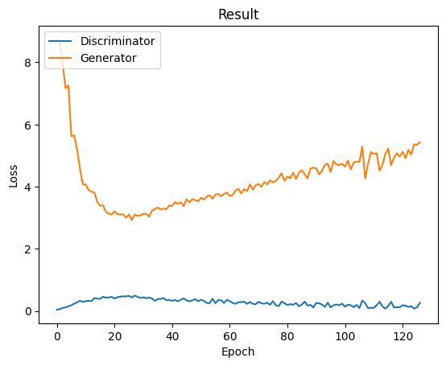
在整個訓練過程中，我們可以看到生成器的損失值一直居高不下，而鑑別器的損失值則持續下降。這顯然不是理想的狀況，不過在生成式對抗網路中非常常見。我們只能通過一些正規化方式或調整訓練策略來加強生成器的效果。例如，我們可以加入Warmup並延長鑑別器的暖身時間，以便生成器先行取得一定的優勢，或者改變訓練方式，讓生成器多訓練幾次再訓練鑑別器。這些措施都能顯著改善模型的訓練結果。
【STEP 7】使用生成器
而在模型上我們只需要調用訓練好的生成器並給予一個雜訊即可完成模型生成的工作，而不需要引入鑑別器，在鑑別器的部分單純就是為了讓生成器與他對抗已達成非監督式學習的概念。不過我們可以看到對於這種簡單的圖形來說，損失值就算達到了2.9，其生成效果也是非常良好的，而在這裡我們記得由於我們輸入給模型的資料是(batch_size, noize_dim, 1, 1)，因此我們也可以隨意地更改其batch_size大小讓能一次生成多筆資料。
import cv2
G = Generator(noize_dim)
G.load_state_dict(torch.load('G_model.ckpt'))
G.eval().to(device)
noize = torch.tensor(torch.randn(1, noize_dim, 1, 1)).to(device)
fake = G(noize)
fake = np.array(fake.detach().cpu())
for cnt, img in enumerate(fake):
npimg = (img/2+0.5)*255
npimg = np.transpose(npimg, (1, 2, 0))
#cv2.imwrite(f'fake_image/fake_{cnt}.png', npimg.astype('uint8'))
plt.imshow(npimg)

總結
這次我們使用DCGAN來生成MNIST手寫數字圖片，並透過拆解程式碼一步步說明了數據集、生成器和鑑別器的建立、損失函數計算，以及模型的訓練流程。而我們可以觀察到雖然在整個訓練過程中生成器的損失可能持續較高，但這在GAN訓練中是常見的現象，因此在這類的模型中我們要調適兩個模型之間的對抗強度是有一定的挑戰性的，不過我們可以看到就算損失值很高我們依然能生成效果良好的圖片，而這次的程式中我們也可以得知不是所有資料都需要標註的，我們也可以透過非監督式學習的方式來達成模型生成的目標。
Day 17｜【Day 17】文字生成的老前輩-Seq2Seq介紹與數學推導
- 原文：https://ithelp.ithome.com.tw/articles/10361288
- 發佈時間：2024-10-01 23:31:54
前言
昨天提到生成式 AI 中生成器負責根據隨機噪聲生成逼真的數據或圖片，這種架構在早期的生成任務中有廣泛應用，不過隨著技術進步Encoder-Decoder架構被提出，這種架構逐漸取代了單純的生成器，成為更強大且靈活的工具。這裡的Decoder與生成器相似，它也能生成新的數據，不過其背後的工作原理更為複雜和高效。而今天我們就要來說說在這種架構中是如何生成文字的。
Seq2Seq（Sequence to Sequence）
Seq2Seq（Sequence to Sequence）模型是一種非常經典的深度學習模型，該模型是Google開發用於翻譯的一種特殊架構，其架構特別適用於處理序列輸入並生成序列輸出的任務該模型的核心思想是使用編碼器（Encoder）將輸入序列編碼為一個固定長度的向量，然後使用解碼器（Decoder）將這個向量解碼為目標序列，而現在讓我們來分別介紹該模型的詳細數學吧。

Encoder
在Seq2Seq的模型架構中，其中的構造都是使用循環神經網路或長短期記憶這類的模型組合而成的。在Encoder的部分，和進行文字分類時一樣將輸入序列轉換成一個隱藏狀態，但在Seq2Seq架構中我們稱這個隱藏狀態為上下文向量(Context Vector)。
在分類任務中我們是通過分析這個上下文向量，並交給全連結層進行運算與分析；而在Seq2Seq架構中，我們則是把這個隱藏狀態當作整個架構的知識庫並傳遞到Decoder中，也就是Enocder扮演的角色是負責理解我們輸入資料的詳細內容。
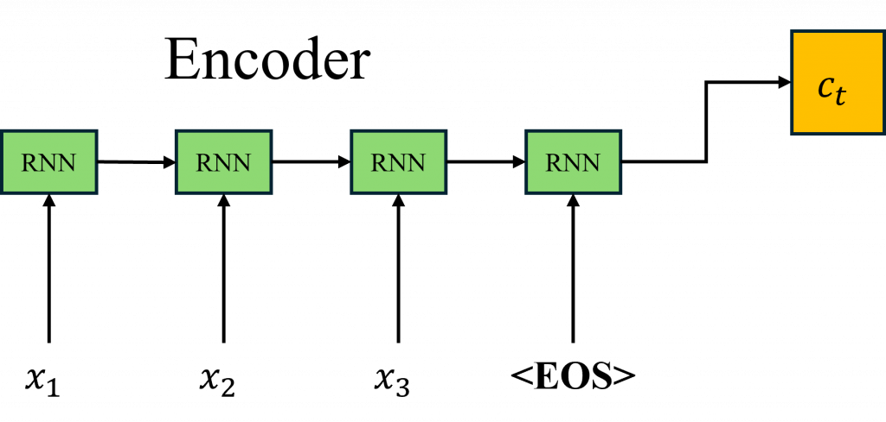
因此對其Encoder的數學公式其實就非常的簡單，他就與我們之前講到的循環神經網路與LSTM完全一模一樣，沒有任何的變化，不過我們在後續Decoder會提到一些比較複雜的部份因此我們將其上下文向量的簡化成以下模式(其中c(t)上的e代表的是由Encoder生成的)
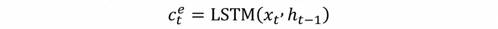
但是在Encoder階段，由於生成的文字與輸入的文字長度往往不相等，我們需要透過一個特殊Token <EOS>（End of Sequence）來讓Encoder學習到文字的結尾，並將這訊息傳遞給Decoder，使模型知道何時停止生成文字。如果沒有EOS標記，模型可能會無限生成詞彙，導致無法正確判斷何時該結束輸出序列。
Decoder
不過在 Decoder 的生成過程中就有所不同了，我們會在第一步將 <SOS>（Start of Sequence）特殊標記作為第一個時序的輸入讓它產生對應的翻譯或相對應的文字目標，直到遇到 <EOS> 才停止生成。

而觀察圖片中的 Decoder 架構，可以發現，它會將上一個生成的文字當作當前時序的輸入進行運算。因此我們必須先計算出每個 Decoder 的隱藏狀態中最有可能對應的文字機率，並將其轉換成對應的標記給模型進行運算。以上這段文字我們可以轉換成以下三個公式：
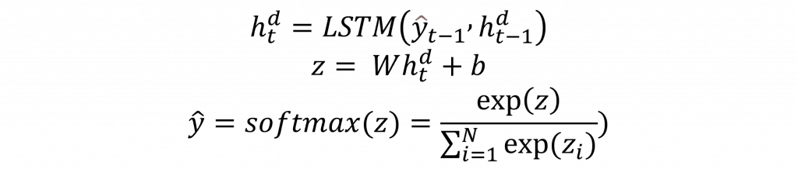
這三個公式你應該不陌生了。第一個是每一個隱藏狀態的輸出，而我們知道隱藏狀態的輸出需要通過全連接層的計算才能轉換為對應的維度以計算出機率。因此，第二個公式就是全連接層的公式，第三個則是softmax的公式，用來計算機率並轉換出最終生成的Token。
但是這樣的運算會發生問題，我們知道生成動作永遠是學習最困難的部分，因此在一開始模型肯定會生成錯誤的目標序列。這就導致當這個錯誤的目標序列被用作下一個時序的輸入時，生成的結果每出錯一個字，後續的文字也會跟著出錯。因此實際上我們會使用Teacher Forcing（教師強迫）技術來協助模型的訓練。
在Teacher Forcing這個方法中，其運作方式是在訓練階段使用真實目標序列的元素作為Decoder的輸入，而不是使用上一個時間步(上一個文字)的資料。也就是說不管每個生成出來的文字是什麼，我們輸入的都會是正確的序列給Decoder。這樣當Decoder在每一步單獨計算損失值時，模型就能夠更快地學習目標序列的結構和模式。
總結
在今天的內容中，我們可以發現這些技術都是一步步地延伸而成的，而這些公式基本上可以從前面幾個章節中取得。這表明在深度學習領域中，基礎公式的重要性。在今日討論的Seq2Seq架構中，我們能發現其作法與DCGAN相似，非常簡單。但是，仔細想想這篇文章中有沒有什麼奇怪的地方，以及這個模型還有哪裡可以優化的。而在明天我將會告訴你這個模型的缺陷並告訴你改進的數學證明。
Day 18｜【Day 18】Seq2Seq中的上下文向量為何無法很好的傳遞訊息-Attention介紹與數學推導
- 原文：https://ithelp.ithome.com.tw/articles/10362423
- 發佈時間：2024-10-02 23:13:32
前言
在學習時間序列模型時，我們了解到無論是長短期記憶還是循環神經網路，在經過多個時序運算後，都有可能出現梯度消失的問題。這意味著當我們的輸入到達最後一個隱藏狀態時，原始資料可能已經經歷了一定程度的失真。因此，在Seq2Seq模型中Enocder所給予的上下文向量便是這一個狀態。
而在Decoder中，則需要使用這個上下文向量作為其初始的隱藏狀態來生成文字。這樣做會導致生成越靠近前側的時序被模型遺忘，使得接近結尾的部分可能產生錯誤。因此我們需要找到一種改善的方法，這種方法就是Attention（注意力機制）。
Seq2Seq + Attention
Attention的核心思想是，Decoder在每一步生成輸出時，不是只依賴一個固定的上下文向量，而是根據當前Decoder的時序，動態地計算出Encoder所拋出的上下文向量哪一個是更重要的。
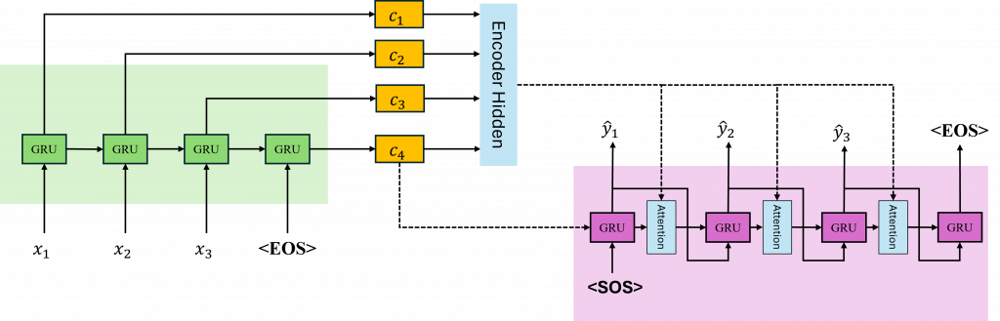
其計算概念是先對Encoder當前的上下文向量c(t)和Decoder上一個時間點的上下文向量c(t-1)進行運算。這種運算方式有很多種，例如：我們可以直接將兩個向量相加、結合或相乘。只要有一種方式能夠將其資訊融合即可。其中最廣為人知的算法就是Bahdanau Attention算法。該算法實際上是我們在循環神經網路中用來計算概率分佈的方法，其數學公式如下：

而這次看到這個公式後，你應該能夠完全理解其數學表達和程式的執行方式了。簡單來說，就是先將Encoder與Decoder各自的資訊融合，再將這個機率分佈狀態通過全連接層轉換成對應的資料，最後由softmax函數轉換成各自的機率。這樣我們就可以獲取一個包含所有時序狀態的注意力權重(Attention Weights)矩陣了。
這時注意力權重會產生一個與上下文向量長度相等的矩陣。然後我們只需將每一個上下文向量與注意力權重相乘。這樣，當注意力權重越大時，對應的Encoder上下文向量會保留更多信息，我們可以通過以下公式來計算：
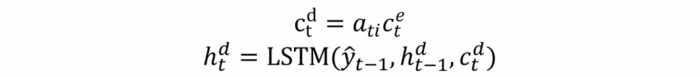
現在你是不是對於Attention機制有更深入的了解了呢？然而你可能還是有一些問題，例如c(t)是來自Encoder還是Decoder需要被計算，以及Decoder上下文向量的詳細輸入方式。為了理解這些部分，我們可以先看看圖片中的運算方式，然後再回頭查看公式，而明天我也會用程式碼的方式來加深你的印象，讓你更能夠理解這些公式的到理
總結
我相信你看到這裡，已經非常了解這些數學式的含意了。而這也是我想要傳達的概念之一：在深度學習的領域中，往往是同一公式不斷重複使用，只不過每一次技術的改良都有可能替換掉架構中的一些部份。例如，我們可能不再使用tanh來計算機率分佈，而是改用sigmoid，或者不使用加法而改用乘法來結合資訊。這些看似微小的改動，可能正是產生新模型的一個關鍵技術。因此當你理解了這些數學後，你更能做到的是根據需要改動模型，並進行優化與調整。
在這裡補充一點通常不會用乘法來結合資料，因為這樣會破壞掉正負關係，同時會導致資料之間的大小變得更大，使的模型更難運算
Day 19｜【Day 19】用Seq2Seq+Attention進行文字翻譯
- 原文：https://ithelp.ithome.com.tw/articles/10362968
前言
在今天的內容中，我們將使用 ManyThings 這個網站中的中英文資料，來進行文字翻譯任務的訓練。在這次內容中，我們會分別使用兩個 Tokenizer 給予 Encoder 與 Decoder 進行分析與訓練，我們會使用 BERT 的 Tokenizer 來進行處理。在這裡需要注意的是，BERT 的 Tokenizer 在使用時會產生 [CLS] 與 [SEP] 這兩個特殊 Token，這剛好可以作為我們模型中的 SOS 與 EOS Token。現在讓我們直接來看程式碼的部分。
由於ManyThings這個網站沒有繁體中文資料，我們需要先使用OpenCC這個函式庫將其進行簡體轉繁體操作。這也是解決繁體中文語料庫不足的一種方法。去年國科會開發的LLaMA繁體中文版出現大量簡體資訊，就是因為直接使用了簡體中文資料而未刪除特定國家的資訊所導致的問題。然而在我們的情況下，因為只需要簡單的資料處理，所以直接進行簡轉繁即可。
【STEP 1】將txt文件轉換成csv
與我們在IMDB時的做法一樣，我習慣將資料先轉換成csv格式。在該資料集中，每個英文和中文之間都是通過\t這個特殊符號分割。主要有三個欄位，第一個欄位是英文，第二個欄位是中文，第三個欄位是相關資訊。因此，我們只需將資料分割後取得前兩個欄位，再將其儲存為csv文件即可。
import pandas as pd
from opencc import OpenCC
def convert_news_to_csv(data_path, csv_file_path):
cc = OpenCC('s2tw') # 簡體轉繁體
with open(data_path, 'r', encoding = "utf-8") as f:
lines = f.read().split('\n')
english, chinese = [], []
for line in lines:
if line:
en, cn, _, = line.split('\t') # 資料是\t分割的
english.append(en)
chinese.append(cc.convert(cn))
df = pd.DataFrame({'chinese':chinese, 'english':english})
df.to_csv(csv_file_path)
convert_news_to_csv('cmn.txt', 'translate.csv')
df = pd.read_csv('translate.csv')
input_texts = df['chinese'].values
target_texts = df['english'].values
【STEP 2】將資料轉換成Pytorch DataLoader
在這一步中大多數的操作都與先前相同，但唯一不同的地方在於collate_fn所需填充的內容各不相同。因此在這裡我們特別進行講解。首先輸入給Encoder的中文資料不需要有sos Token，因此我們需要使用input_ids[:, 1:]這種寫法，其中**:,的寫法是取出第二個維度的資料**。由於我們當前的資料維度是(batch_size, seq_len)，因此我們需要取出seq_len的維度並移除第1個[CLS] Token，以達到移除sos Token的功能，而Deocder則不需要進行改動。
from torch.utils.data import Dataset, DataLoader
from sklearn.model_selection import train_test_split
from transformers import AutoTokenizer
class TranslateDataset(Dataset):
def __init__(self, x, y, src_tokenizer, tgt_tokenizer):
self.x = x
self.y = y
self.src_tokenizer = src_tokenizer
self.tgt_tokenizer = tgt_tokenizer
def __getitem__(self, index):
return self.x[index], self.y[index]
def __len__(self):
return len(self.x)
def collate_fn(self, batch):
batch_x, batch_y = zip(*batch)
inputs = self.src_tokenizer(batch_x, max_length=256, truncation=True, padding="longest", return_tensors='pt').input_ids[:, 1:]
targets = self.tgt_tokenizer(batch_y, max_length=256, truncation=True, padding="longest", return_tensors='pt').input_ids
return {'src_input_ids':inputs, 'tgt_input_ids': targets}
x_train, x_valid, y_train, y_valid = train_test_split(input_texts, target_texts, train_size=0.8, random_state=46, shuffle=True)
src_tokenizer = AutoTokenizer.from_pretrained('bert-base-chinese')
tgt_tokenizer = AutoTokenizer.from_pretrained('bert-base-uncased')
trainset = TranslateDataset(x_train, y_train, src_tokenizer, tgt_tokenizer)
validset = TranslateDataset(x_valid, y_valid, src_tokenizer, tgt_tokenizer)
train_loader = DataLoader(trainset, batch_size = 64, shuffle = True, num_workers = 0, pin_memory = True, collate_fn=trainset.collate_fn)
valid_loader = DataLoader(validset, batch_size = 64, shuffle = True, num_workers = 0, pin_memory = True, collate_fn=validset.collate_fn)
【STEP 3】建立Encoder模型
在Encoder模型中與我們在LSTM章節中所建立的方式完全相同，唯一的差異在於我們不需要經過全連接層的運算，並且需要使用到output這一個參數，其原因是**output包含者整個模型在運算時的隱藏狀態，因此我們在計算Attention時會需要使用其變數，而hidden則會做為Decoder的初始隱狀態。**
import torch.nn as nn
class EncoderGRU(nn.Module):
def __init__(self, vocab_size, hidden_size, padding_idx):
super(EncoderGRU, self).__init__()
self.embedding = nn.Embedding(vocab_size, hidden_size, padding_idx=padding_idx)
self.gru = nn.GRU(hidden_size, hidden_size, batch_first=True)
self.dropout = nn.Dropout(0.1)
def forward(self, token_ids):
embedded = self.dropout(self.embedding(token_ids))
#embedded: (batch_size, time_step, emb_dim)
output, hidden = self.gru(embedded)
# output: (batch_size, time_step, hidden_size * 2)
# hidden: (2, batch_size, hidden_size)
return output, hidden
【STEP 4】建立Attention
在Attention層時，我們需要仔細考慮輸入的資料格式。首先，我們要了解Attention的輸出是一個單一向量，即上下文向量。這個上下文向量會輸入給當前時序的Decoder。因此，我們的decoder_hidden其實是一個(batch_size, 1, hidden)的輸入，而Encoder則是(Batch_size, seq_len, hidden)。通過Bahdanau Attention的公式運算後，這些輸入會被轉換成相同大小，因此可以順利加總起來。接下來的步驟就是將各類運算轉換為上下文向量。我會把每層輸出的註解都打在程式碼中，以便你理解每個過程發生了什麼事情。
class BahdanauAttention(nn.Module):
def __init__(self, hidden_size):
super(BahdanauAttention, self).__init__()
self.encoder_projection = nn.Linear(hidden_size, hidden_size)
self.decoder_projection = nn.Linear(hidden_size, hidden_size)
self.attention_v = nn.Linear(hidden_size, 1)
self.tanh = nn.Tanh()
self.softmax = nn.Softmax(dim=-1)
def forward(self, encoder_hidden, decoder_hidden):
energy = self.tanh(self.encoder_projection(encoder_hidden) + self.decoder_projection(decoder_hidden))
#energy: (batch_size, time_step, hidden_size)
scores = self.attention_v(energy)
#scores: (batch_size, time_step, 1)
scores = scores.squeeze(2).unsqueeze(1)
#scores: (batch_size, 1, time_step)
attention_weights = self.softmax(scores)
# attention_weights (batch_size, 1, time_step)
context_vector = torch.bmm(attention_weights, decoder_hidden)
#context_vector: (batch_size, 1, hidden_size)
return context_vector
【STEP 5】建立Decoder
在Decoder部分，我們需要將Embedding的資訊與經過Attention計算後的上下文向量結合，然後將這些資訊傳遞到輸出層。在輸出層，信息會經過全連接層的轉換，最終生成適合進行softmax運算的向量。這樣模型在推理時能夠計算出下一個時間步的Token。
需要經過
softmax運算的資料必須轉換為維度為 (batch_size, 1, seq_len) 的格式。因此，無論是在Attention機制中還是Decoder中，我們都會看到為了滿足此需求而進行的維度轉換操作。
class DecoderGRU(nn.Module):
def __init__(self, attention, hidden_size, output_size, padding_idx):
super(DecoderGRU, self).__init__()
self.embedding = nn.Embedding(output_size, hidden_size, padding_idx=padding_idx)
self.gru = nn.GRU(2 * hidden_size, hidden_size, batch_first=True)
self.output_projection = nn.Linear(hidden_size, output_size)
self.dropout = nn.Dropout(0.1)
self.attention = attention
def forward(self, encoder_outputs, decoder_hidden, decoder_input_ids):
# decoder_input_ids: (batch_size, 1)
embedded = self.dropout(self.embedding(decoder_input_ids))
# embedded: (1, batch_size, emb_dim)
decoder_state = decoder_hidden.permute(1, 0, 2)
#decoder_state (batch_size, 1, emb_dim)
context = self.attention(decoder_state, encoder_outputs)
# (batch_size, 1, hidden_size)
input_gru = torch.cat((embedded, context), dim=-1)
# input_gru (batch_size, 1, hidden_size + emb_dim)
output, decoder_hidden = self.gru(input_gru, decoder_hidden)
# output: (batch_size, time_step, hidden_size)
# decoder_hidden: (1, batch_size, hidden_size)
decoder_output = self.output_projection(output)
# decoder_output: (batch_size, 1, output_size)
return decoder_output, decoder_hidden
【STEP 6】組合組件並完成生成方法
這次的模型定義較為特殊。在理解具體模型之前，我們先了解整體的運作流程，如此可以幫助我們更好地理解接下來的內容。首先我們會通過Encoder模型計算當前批量的整體隱藏狀態。接著，建立一個初始給予Decoder的SOS Token decoder_next_input，並將Encoder最後的隱藏狀態傳入Decoder進行運算。
接下來，我們使用for迴圈，將真實的目標序列作為下一個decoder_next_input，並繼續交給模型生成文字（即Teacher Forcing）。同時，我們會記錄每個序列的生成結果，以便計算正確的損失值。
class Attentionseq2seq(nn.Module):
def __init__(self, encoder, decoder, padding_idx):
super(Attentionseq2seq, self).__init__()
self.encoder = encoder
self.decoder = decoder
self.criterion = nn.NLLLoss(ignore_index=padding_idx)
self.logsoftmax = nn.LogSoftmax(dim=-1)
def forward(self, src_input_ids, tgt_input_ids):
input_ids = src_input_ids
targets = tgt_input_ids
# Encoder
encoder_outputs, decoder_hidden = self.encoder(input_ids)
# encoder_outputs: (batch_size, time_step, hidden_size)
# decoder_hidden: (1, batch_size, hidden_size)
decoder_next_input = torch.empty(targets.shape[0], 1, dtype=torch.long).fill_(101).to(input_ids.device.type) # 加入CLS token
# decoder_next_input: (batch_size, 1)
# Decoder
decoder_outputs = []
for i in range(targets.shape[1]):
decoder_next_input, decoder_hidden = self.decoder(encoder_outputs, decoder_hidden, decoder_next_input)
# decoder_next_input: (batch_size, 1, hidden_size)
# decoder_hidden: (1, batch_size, hidden_size)
decoder_outputs.append(decoder_next_input) # 儲存當前時序的文字分布狀態
decoder_next_input = targets[:, i].unsqueeze(1) # 取出下一個對應的文字進行生成
# decoder_next_input: (batch_size, 1)
decoder_outputs = torch.cat(decoder_outputs, dim=1) # 完整的Decoder隱狀態輸出
# decoder_outputs: (batch_size, time_step, output_dim)
decoder_outputs = self.logsoftmax(decoder_outputs) # 計算個文字機率
# decoder_outputs: (batch_size, time_step, output_dim)
# 計算損失值
loss = self.criterion(
decoder_outputs.view(-1, decoder_outputs.size(-1)), # (batch_size * time_step, output_dim)
targets.view(-1) # (batch_size * time_step)
)
return loss, decoder_outputs
我們的生成方式有所不同，因為沒有目標序列，所以只能依賴 SOS Token 來進行生成。生成過程的邏輯是首先通過 Encoder 進行計算，接著直接使用 SOS Token 作為起始輸入開始生成，並將每次生成的結果作為下一次的輸入序列，持續進行直到生成 EOS Token 為止生成才會結束。
def generate(self, input_ids, sos_token=101, eos_token=102, max_len=50):
with torch.no_grad():
encoder_outputs, decoder_hidden = self.encoder(input_ids)
decoder_outputs = []
decoder_next_input = torch.empty(1, 1, dtype=torch.long).fill_(sos_token).to(input_ids.device.type)
for _ in range(max_len):
decoder_next_input, decoder_hidden = self.decoder(encoder_outputs, decoder_hidden, decoder_next_input)
decoder_outputs.append(decoder_next_input)
_, top_token_index = decoder_next_input.topk(1)
if top_token_index == eos_token:
break
decoder_next_input = top_token_index.squeeze(-1).detach() # detach from history as input
decoder_outputs = torch.cat(decoder_outputs, dim=1)
decoder_outputs = self.logsoftmax(decoder_outputs)
_, generated_ids = decoder_outputs.topk(1)
return generated_ids.squeeze()
【STEP 7】訓練模型
在訓練模型時我們可以為 Encoder 和 Decoder 分別使用不同的優化器。然而需要注意的是，Encoder、Attention 和 Decoder 的 hidden_size 必須保持相同大小，否則可能會導致錯誤。
import torch.optim as optim
from trainer import Trainer
# 主程式部分
device = torch.device('cuda' if torch.cuda.is_available() else 'cpu')
hidden_size = 768
encoder = EncoderGRU(
vocab_size=len(src_tokenizer),
hidden_size=hidden_size,
padding_idx=src_tokenizer.pad_token_id
)
decoder = DecoderGRU(
attention = BahdanauAttention(hidden_size=hidden_size),
hidden_size=hidden_size,
output_size=len(tgt_tokenizer),
padding_idx=tgt_tokenizer.pad_token_id
)
model = Attentionseq2seq(
encoder = encoder,
decoder = decoder,
padding_idx = tgt_tokenizer.pad_token_id
).to(device)
optimizer_e = optim.Adam(encoder.parameters(), lr=1e-4)
optimizer_d = optim.Adam(decoder.parameters(), lr=1e-4)
trainer = Trainer(
epochs=30,
train_loader=train_loader,
valid_loader=valid_loader,
model=model,
optimizer=[optimizer_e, optimizer_d],
early_stopping=3
)
trainer.train()
# ----- 輸出 -----
Train Epoch 21: 100%|██████████| 374/374 [00:23<00:00, 16.02it/s, loss=0.589]
Valid Epoch 21: 100%|██████████| 94/94 [00:01<00:00, 51.56it/s, loss=1.494]
Saving Model With Loss 1.84741
Train Loss: 0.53640| Valid Loss: 1.84741| Best Loss: 1.84741

我們可以觀察到，模型的訓練損失雖然持續下降，但驗證損失卻沒有明顯上升，這表明模型已經達到了優化的瓶頸。由於驗證損失已經收斂，且尚未出現過擬合的情況，這時我們可以採取進一步的措施來提升模型性能，例如引入最佳化技巧或擴充資料集，以促進模型的進一步改善。
【STEP 7】生成訓練結果
最後我們使用驗證數據生成文字結果。在這過程中我們需要將 SOS token 移除，因為模型的輸入是在 Encoder 處理後再傳遞給 Decoder，而 Decoder 的 SOS token 已在 generate 函數中自動定義。因此在生成短語時儘管偶爾會偏離原意，但整體的生成效果仍然不錯，而這種偏離主要是由於訓練數據不足，如果我們能夠擁有更多的數據，生成效果將會有明顯的提升。
model.load_state_dict(torch.load('model.ckpt'))
model.eval()
for idx in range(3):
input_ids = src_tokenizer(x_valid[idx], max_length=256, truncation=True, padding="longest", return_tensors='pt').to(device).input_ids[:, 1:]
generated_ids = model.generate(input_ids, max_len=20)
print('\n輸入文字:', x_valid[idx])
print('目標文字:', y_valid[idx])
print('翻譯文字:', tgt_tokenizer.decode(generated_ids))
# ----- 輸出 -----
輸入文字: 他要愛。
目標文字: He wants affection.
翻譯文字: [CLS] he's love. [SEP]
輸入文字: 別再讓我做那事了。
目標文字: Don't make me do that again.
翻譯文字: [CLS] don't do that again. [SEP]
輸入文字: 我們愛湯姆。
目標文字: We love Tom.
翻譯文字: [CLS] we love tom. [SEP]
總結
在今天的內容中，我們發現程式碼非常複雜，因此我們在註解中詳細說明了每個維度的輸出。在文章的主要部分，我們解釋了為何在程式設計中需要這樣處理。不過由於內容很複雜，因此你可能還是需要多看幾次程式碼才能了解這些程式的內容及其相關的數學公式。
Day 20｜【Day 20】主宰的AI世界強大模型架構-Transformer數學證明
- 原文：https://ithelp.ithome.com.tw/articles/10363463
- 發佈時間：2024-10-04 22:56:51
前言
昨天我們學到的Seq2Seq架構中，其實有一個很嚴重的問題，該架構的核心是使用循環神經網路進行運算，撇開梯度消失的問題之蔡，其最大的缺點是運算速度非常緩慢，每次運算必須等待上一個單元計算完畢後才能取得結果無法進行平行運算，而且該模型承襲了循環神經網路只能單向運算的特性，因此不論是效能或速度上其實都有可以改善的地方，而在今天介紹的模型Transformer同樣的也是Encoder與Decoder架構的模型，但他在效能與執行速度上則有了大幅的提升，現在讓我們看看該模型的架構與數學式吧
Transformer

Transformer 是一種基於注意力機制（Attention Mechanism）的深度學習模型架構，是由 Vaswani 等人於 2017 年在論文《Attention is All You Need》中提出。雖然一開始是被設計用於自然語言處理任務，但隨著時間的推移，其應用範圍擴展到了電腦視覺等其他領域，基本上現今所有強大的模型都是基於此架構開發而成的，而其主要特點是能夠更高效地處理序列數據，尤其是在長序列上具有出色的表現，現在讓我們拆解模型架構來看看其內容吧。
Positional Encoding
在循環神經網路這類的時間序列模型中，其遞迴結構保留了序列中元素的順序資訊，但 Transformer 模型完全依賴平行運算並不具備順序意識。如果直接將序列傳送到模型中，可能會導致模型學到混亂的序列資訊，進而影響效果。因此我們需要一種方法將位置信息引入模型中而這種方式就是 Positional Encoding。

在 Positional Encoding 中，其編碼方式是將位置信息嵌入到輸入給模型的嵌入層中，並通過正弦與餘弦函數來實現。具體方法是對奇數位置使用正弦函數進行編碼，對偶數位置則使用餘弦函數進行計算。其數學公式如下所示：

該公式的設計主要利用了 sin() 和 cos() 函數的周期性特性，因為這些函數非常適合表現循環性特徵。通過將不同頻率的 sin() 和 cos() 函數用於位置編碼，可以在多個尺度上捕捉序列中元素的相對距離，從而使每個位置的編碼具有獨特且可區分的特性。這種方法有助於模型更有效地學習詞與詞之間的相對位置關係。
Encoder

在Transformer中，最重要的部分是其自注意機制（Self-Attention）。該機制不同於Seq2Seq模型需要通過編碼器（Encoder）和解碼器（Decoder）之間的運算。自注意機制是使用每一個序列的查詢向量（Query, Q）、鍵向量（Key, K）和值向量（Value, V），在內部進行注意力運算。這三個向量分別通過與各自的權重矩陣W進行運算得到，其運算流程圖如下所示。

在所有的注意力機制中，計算的核心是通過計算注意力權重，並將其應用於對應的向量進行操作。例如在 Seq2Seq 模型中，首先利用Encoder和Decoder的隱藏狀態來計算注意力權重，然後與對應的上下文向量進行加權運算。
而在 Transformer 模型中，則是通過查詢向量與鍵向量計算出注意力權重，再將其應用於值向量上進行運算
，這種方式的目的是評估序列中的每個元素對其他元素的關注程度。具體而言對於 Transformer 中的Encoder其主要公式如下:

其中 √𝑑 是與鍵向量維度大小相等的數值，其目的是為了調整查詢向量與鍵向量相乘後可能出現過大的數值。這樣做是為了防止數值過大導致梯度消失或爆炸的問題，因此需要將這些放大的數值縮放回合理範圍。
在整個計算過程中，我們可以看到，最後一步與 Seq2Seq 模型相同，都是通過 Softmax 函數來計算注意力權重，並且與值向量進行加權運算，這代表每個輸出都是基於每一個查詢向量與鍵向量所計算的權重與機率。因此每一個輸出都反映了模型對所有輸入資訊的考量，這使得每個輸出結果比 Seq2Seq 方法更加豐富，因為Transformer 能夠更有效地捕捉全局關聯，從而產生更具信息性的結果。
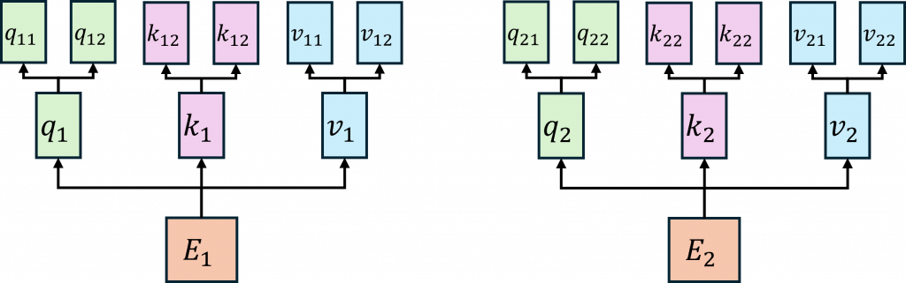
實際上Transformer 模型使用的是**多頭自注意力機制（Multi-Head Self-Attention）**來進行運算，這與單純的自注意力機制不同。多頭自注意力機制的主要區別在於，它會將查詢向量、鍵向量和值向量進行多次投影，生成多組查詢、鍵、和值向量，並在不同的頭（head）上進行獨立的注意力計算。每個頭能夠專注於輸入序列中的不同部分或特性，從而使模型能夠捕捉到更豐富的語意特性和上下文關係。

在經過注意力機制之後，為了能夠進行最終的輸出或計算機率，我們可以使用全連接層來處理數據。這個概念在 Transformer 中依然適用，但 Transformer 和 DCGAN 一樣，屬於較深層的網路，因此需要解決內部協變量偏移問題。
為了解決這個問題，Transformer 中引入了 Layer Normalization，其原理是通過對每一層的輸入 x 進行正規化處理，來穩定每一層的輸出結果從而促進模型更快、更穩定地收斂。Layer Normalization 的作用類似於 Batch Normalization，但它是針對每一個樣本的輸入進行正規化，而不是針對整個 batch。
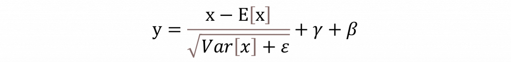
ε的用途主要是為了防止出現除以零的情況，因此其數值通常會設定得非常小，這樣可以確保計算過程中的穩定性，避免數值不穩定帶來的計算錯誤。至於γ則是用來控制縮放輸出的幅度，它在每一層中都可以進行調整，從而使模型能夠靈活地學習到不同特徵的權重。這樣可以幫助模型更好地適應不同數據的特性。而β則是代表該層的偏移量，這個偏移量可以幫助模型在學習過程中更好地調整輸出，使其更加接近真實數據的分佈。
Decoder

我們了解到Decoder在訓練時使用了 Teacher Forcing 方法，這種方法依賴於上一時間步的輸出和當前的輸入，但 Transformer 模型使用的是並行運算，在這種情況下，如果不進行特定的處理，注意力機制可能會包含完整的注意力權重信息，導致模型提前看到未來的時序信息，進而引發運算錯誤。
為了解決這個問題，Transformer 的 Decoder 中引入了一個 Masked Multi-head Attention（遮蔽式多頭注意力機制） 層。這一層的作用是確保模型在當前步驟中，僅能關注到當前或之前的位置信息，而無法看到未來的輸入。具體做法是生成一個 遮蔽矩陣（Masking Matrix），來遮蔽掉未來時間步的信息。
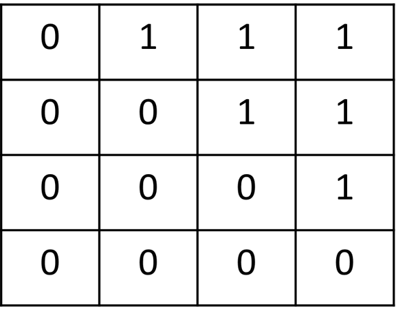
其計算原理是通過遮蔽注意力權重中的未來位置，從而防止當前生成的序列包含未來信息，這有效解決了信息泄露的問題。在計算注意力權重時，對於那些代表未來位置的部分（遮蔽矩陣中為 1 的部分），賦予一個負無窮大的值，這樣在進行 Softmax 計算時，這些位置的權重會趨近於零，幾乎不起作用。
這樣的設計確保了模型在生成序列時只能依賴當前和之前的輸入，避免提前看到未來的信息，從而保持生成的序列順序性和合理性。簡單來說，在進行多頭注意力機制計算之前，首先執行遮蔽操作，其他的計算過程則與 Encoder 中的多頭自注意力機制相同。
總結
我們的學習進度已經來到了 2/3，今天進入的章節可以說是整個 AI 發展中最關鍵的部分。這個模型在語音變式、文字生成、語音生成等領域中，已經成為最重要的技術之一，這都要歸功於該模型中的 Self-Attention 機制。因此而在接下來的章節中，我們將深入學習和探索以這個模型為基礎的各種技術演變與優化，通過改進與調整該模型的架構，讓你逐步了解這些技術的發展過程與背後的原理。
Day 21｜【Day 21】用Transformer來進行文本摘要
- 原文：https://ithelp.ithome.com.tw/articles/10363976
前言
在今天的內容中，我們不會像在Seq2Seq模型中那樣，所有元件都需要自己手寫。因為在Pytorch中，其實已經有幫我們定義好Transformer的框架。但由於Transformer中的運算是平行進行的，這個模型最麻煩的部分在於遮罩矩陣的設定，因此今天我們將使用NEWS SUMMARY數據集，來介紹這些矩陣的創建方式與實際用途。
而在本次內容中，由於我們的資料都是英文，因此在Tokenizer的部分只需要導入bert-base-uncased這一個英文的Tokenizer就好。而且這次我們除了使用該Tokenizer的input_ids之外，還會使用attention_mask來幫助我們產生對應的遮蔽矩陣。現在讓我們來看看完成的模型訓練過程吧！
【STEP 1】 導入資料集與Tokenizer
在這一步中，由於資料本身就是 CSV 文件，因此我們不需要進行轉換，直接使用 os.listdir() 讀取資料即可。在這個資料欄中，text 為完整的新聞資料，summary 則為對應的摘要文字。我們需要將其讀取出來，將 text 給予 Encoder 運算，而將 summary 給予 Decoder 運算。
from transformers import AutoTokenizer
import pandas as pd
import os
def read_csv_data(data_path):
source, target = [], []
for file_name in os.listdir(data_path):
df = pd.read_csv(f'{data_path}/{file_name}')
src, tgt = df['text'].values, df['summary'].values
source.extend(src)
target.extend(tgt)
return source, target
x_train_data, y_train_data = read_csv_data('news/train')
x_test, y_test = read_csv_data('news/test')
tokenizer = AutoTokenizer.from_pretrained('bert-base-uncased')
【STEP 2】 建立Pytorch DataLoader
接下來我們在建立 Pytorch DataLoader 時，需要從 Tokenizer 中取出 input_ids 與 attention_mask 這兩個參數。不過由於這些參數是分別提供給 Encoder 和 Decoder 的，因此我們需要在 collate_fn 中修改這些參數的鍵名稱，以便在後續撰寫模型的前向傳播時，更能清晰地了解這些參數的實際用途。
from torch.utils.data import Dataset, DataLoader
from sklearn.model_selection import train_test_split
class SummaryeDataset(Dataset):
def __init__(self, x, y, tokenizer):
self.x = x
self.y = y
self.tokenizer = tokenizer
def __getitem__(self, index):
return self.x[index], self.y[index]
def __len__(self):
return len(self.x)
def collate_fn(self, batch):
batch_x, batch_y = zip(*batch)
src = self.tokenizer(batch_x, max_length=256, truncation=True, padding="longest", return_tensors='pt')
tgt = self.tokenizer(batch_y, max_length=256, truncation=True, padding="longest", return_tensors='pt')
src = {f'src_{k}':v for k, v in src.items()}
tgt = {f'tgt_{k}':v for k, v in tgt.items()}
return {**src, **tgt}
x_train, x_valid, y_train, y_valid = train_test_split(x_train_data, y_train_data, train_size=0.8, random_state=46, shuffle=True)
trainset = SummaryeDataset(x_train, y_train, tokenizer)
validset = SummaryeDataset(x_valid, y_valid, tokenizer)
train_loader = DataLoader(trainset, batch_size = 32, shuffle = True, num_workers = 0, pin_memory = True, collate_fn=trainset.collate_fn)
valid_loader = DataLoader(validset, batch_size = 32, shuffle = True, num_workers = 0, pin_memory = True, collate_fn=validset.collate_fn)
【STEP 3】 建立Positional Encoding
在這一步開始，我們要建立Transformer的模型架構了。不過在Pytorch中並沒有為我們預設Positional Encoding，這是因為其實現方法多種多樣，且很多後續的改動也會針對Positional Encoding進行調整。因此Pytorch將這一部分的功能交給使用者自行定義。
在這裡我們的實際做法將遵照原始的方式進行，通過sin()與cos()的位置信息分別嵌入到傳給Positional Encoding的對應Embedding層中，而以下的程式碼都只是對應我們昨日所說明到的公式實現方式。
import torch
import torch.nn as nn
class PositionalEncoding(nn.Module):
def __init__(self, emb_size, dropout, maxlen=5000):
super(PositionalEncoding, self).__init__()
self.dropout = nn.Dropout(p=dropout)
pe = torch.zeros(maxlen, emb_size)
position = torch.arange(0, maxlen, dtype=torch.float).unsqueeze(1)
div_term = torch.exp(torch.arange(0, emb_size, 2).float() * (-torch.log(torch.tensor(10000.0)) / emb_size))
pe[:, 0::2] = torch.sin(position * div_term)
pe[:, 1::2] = torch.cos(position * div_term)
pe = pe.unsqueeze(0).transpose(0, 1)
self.register_buffer('pe', pe)
def forward(self, x):
x = x + self.pe[:x.size(0), :]
return self.dropout(x)
不過我們需要注意一點，在 PyTorch 中self.register_buffer 是一個比較特殊的技巧，特別是當我們想要定義一些不需要參與模型訓練（不需要追蹤梯度）的變量時我們必須調用它。像是Positional Encoding是一個不會被模型訓練而改變的絕對位子，而這時使用常規的變量宣告方法，PyTorch 會默認追蹤梯度導致其位子有所變化，因此我們通過 register_buffer 的方式來避免這個問題。
【STEP 4】 建立Transformer
在這裡我們同樣將模型拆成多個區段進行簡要講解，而在Transformer中其實非常簡單，我們只需要宣告兩者的Embedding與剛剛建立的PositionalEncoding組件，接著直接呼叫nn.Transformer與Decoder輸出時的nn.Linear。這些就是我們昨天繪製的Transformer中所包含的全部物件。我會把相關參數的函數寫在註解中，如果你看不懂註解，建議先回去看看昨日的模型架構圖，這樣你會更理解該模型的實際函數。
class Seq2SeqTransformer(nn.Module):
def __init__(self, vocab_size, emb_size, d_model, nhead, num_encoder_layers, num_decoder_layers, dim_feedforward):
super(Seq2SeqTransformer, self).__init__()
self.src_embedding = nn.Embedding(vocab_size, emb_size)
self.tgt_embedding = nn.Embedding(vocab_size, emb_size)
self.positional_encoding = PositionalEncoding(emb_size, dropout=0.1)
self.transformer = nn.Transformer(
d_model=d_model, # 對應的嵌入層維度跟emb_size相同大小
nhead=nhead, # Muti-head Attention head數量
num_encoder_layers=num_encoder_layers, # 要幾個Encoder進行運算
num_decoder_layers=num_decoder_layers, # 要幾個Decoder進行運算
dim_feedforward=dim_feedforward, # Layer Norm輸出維度
batch_first=True
)
# 用於生成最終輸出的線性層
self.fc = nn.Linear(d_model, vocab_size)
self.criterion = torch.nn.CrossEntropyLoss(ignore_index=tokenizer.pad_token_id)
而在前向傳播時，我們需要注意到 src_input_ids 與 tgt_input_ids 是分別給予模型的資料，此外還需提供Positional Encoding以賦予位置信息。因此我特別設定了一個 embedding_step 方法，讓我們能夠快速賦予其位置信息。
而在這裡最重要的部分是其遮蔽矩陣。昨日我們提到的遮蔽矩陣是只有Decoder為了遮蔽未來訊息的矩陣，但是實際上我們在進行運算時會有Padding的動作。因此我們需要從attention_mask中取出Padding的索引，但是在Transformer中，與其相反需要被填充的位置是1，未被填充的則是0。因此，在src_key_padding_mask的部分，我們可以看到我們簡單的轉換。
為了生成遮蔽未來訊息的矩陣，我們只需使用torch.triu來生成一個大小為emb_dim * emb_dim的遮蔽矩陣。此外，我們需要注意正如昨天所提到的，我們需要將矩陣中的0轉換為-inf，1轉換為0，這樣在模型計算softmax時才不會考慮被遮蔽的數值。
def forward(self, **kwargs):
src_ids = kwargs['src_input_ids']
tgt_ids = kwargs['tgt_input_ids']
src_emb, tgt_emb = self.embedding_step(src_ids, tgt_ids)
src_key_padding_mask = (kwargs['src_attention_mask'] == 0)
tgt_key_padding_mask = (kwargs['tgt_attention_mask'] == 0)
src_mask = torch.zeros((src_emb.shape[1], src_emb.shape[1]),device=device).type(torch.bool)
tgt_mask = self.generate_square_subsequent_mask(tgt_emb.shape[1])
# 將嵌入通過transformer模型
outs = self.transformer(
src_emb, tgt_emb,
src_mask=src_mask,
tgt_mask=tgt_mask,
src_key_padding_mask=src_key_padding_mask,
tgt_key_padding_mask=tgt_key_padding_mask,
memory_key_padding_mask=src_key_padding_mask
)
logits = self.fc(outs)
tgt_ids_shifted = tgt_ids[:, 1:].reshape(-1)
logits = logits[:, :-1].reshape(-1, logits.shape[-1])
loss = self.criterion(logits, tgt_ids_shifted)
return loss, logits
def embedding_step(self, src, tgt):
src_emb = self.src_embedding(src)
tgt_emb = self.tgt_embedding(tgt)
return self.positional_encoding(src_emb), self.positional_encoding(tgt_emb)
def generate_square_subsequent_mask(self, sz):
mask = (torch.triu(torch.ones(sz, sz)) == 1).transpose(0, 1)
mask = mask.float().masked_fill(mask == 0, float('-inf')).masked_fill(mask == 1, float(0.0))
return mask.to(device)
這裡其實有兩點不同。由於Encoder會將部分資訊傳送給Decoder，因此我們需要在這個過程中再次對Encoder中被Padding的序列進行Padding，這一個遮蔽矩陣就是程式中的memory_key_padding_mask。另一個遮蔽矩陣是src_mask，其功能是讓Decoder遮蔽未來的訊息。在原始的Transformer中，我們不需要這樣處理，因此可以直接將其設定為0。
我們需要完成生成的方式，這個過程其實與Transformer的前向傳播方式相同，也與Seq2Seq類似。我們會用for迴圈將BOS Token給模型，然後讓它生成下一個新序列，直到遇到Eos Token為止。其實這就是利用Seq2Seq的生成方式與Transformer的方式進行結合。
def generate(self, max_length=50, cls_token_id=101, sep_token_id=102, **kwargs):
src_input_ids = kwargs['input_ids']
src_attention_mask = kwargs['attention_mask']
# 先嵌入源序列
src_emb = self.positional_encoding(self.src_embedding(src_input_ids))
src_key_padding_mask = (src_attention_mask == 0)
# 初始化目標序列，開始符號 (BOS)
tgt_input_ids = torch.full((src_input_ids.size(0), 1), cls_token_id, dtype=torch.long).to(src_input_ids.device)
for _ in range(max_length):
tgt_emb = self.tgt_embedding(tgt_input_ids)
tgt_emb = self.positional_encoding(tgt_emb)
# Transformer 前向傳播
outs = self.transformer(
src_emb, tgt_emb,
src_key_padding_mask=src_key_padding_mask,
memory_key_padding_mask=src_key_padding_mask
)
logits = self.fc(outs)
next_token_logits = logits[:, -1, :]
next_token = torch.argmax(next_token_logits, dim=-1).unsqueeze(1)
tgt_input_ids = torch.cat([tgt_input_ids, next_token], dim=1)
# 停止條件: 如果生成的序列中包含了結束符號 (EOS)
if next_token.item() == sep_token_id:
break
return tgt_input_ids
【STEP 5】 訓練模型
最後，當我們設定好相關的參數後，就可以開始訓練模型的參數了。同樣地我們使用Trainer進行訓練。不過這次，我們會使用Warmup加餘弦退火法進行訓練。該算法在一開始使用Warmup，以確認學習的方向，然後通過Cos波型不斷調整模型的學習率，使其能夠達到最佳收斂。
# 設定模型
device = torch.device('cuda' if torch.cuda.is_available() else 'cpu')
model = Seq2SeqTransformer(
vocab_size=len(tokenizer),
emb_size=512,
d_model=512,
nhead=8,
num_encoder_layers=6,
num_decoder_layers=6,
dim_feedforward=2048
).to(device)
import torch.optim as optim
from transformers import get_cosine_with_hard_restarts_schedule_with_warmup
from trainer import Trainer
# 優化器與排成器
optimizer = optim.AdamW(model.parameters(), lr=1e-4)
scheduler = get_cosine_with_hard_restarts_schedule_with_warmup(
optimizer,
num_warmup_steps=len(train_loader),
num_training_steps=len(train_loader) * 100,
num_cycles=1,
)
# 訓練模型
trainer = Trainer(
epochs=100,
train_loader=train_loader,
valid_loader=valid_loader,
model=model,
optimizer=[optimizer],
scheduler=[scheduler]
)
trainer.train(show_loss=True)
# ----- 輸出 -----
Train Epoch 29: 100%|██████████| 4643/4643 [06:25<00:00, 12.04it/s, loss=0.390]
Valid Epoch 29: 100%|██████████| 1161/1161 [00:33<00:00, 34.50it/s, loss=0.950]
Train Loss: 0.34809| Valid Loss: 2.26407| Best Loss: 2.18540

最終我們所看到的結果是目前訓練效果最好的曲線，這是由於Transformer強大的架構，再加上我們利用排程器進行優化，使其能夠呈現出極佳的曲線。
【STEP 6】實際生成文字
我們可以直接調用generate方法進行生成，從生成的結果中可以看出，其生成的文字與實際情況並無太大誤差。當然與市面上這些大型語言模型相比，還是存在一些差異，但就個人訓練的結果而言，這已經是一個很好的成績了。
model.load_state_dict(torch.load('model.ckpt'))
model.eval()
idx = 7778
input_data = tokenizer(x_test[idx], max_length=1024, truncation=True, padding="longest", return_tensors='pt').to(device)
generated_ids = model.generate(**input_data, max_len=50)
print('輸入文字:\n', x_test[idx])
print('目標文字:\n', y_test[idx])
print('模型文字:\n', tokenizer.decode(generated_ids[0]))
# ----- 輸出 ------
輸入文字:
mandsaur police tuesday filed 350page chargesheet two accused eightyearold girls gangrape case chargesheet names 92 witnesses lists 100 pieces evidence accused girl allegedly kidnapped waiting family member outside school raped secluded place
目標文字:
92 witnesses 100 evidences mandsaur gangrape chargesheet
模型文字:
[CLS] 92 witnesses 100 evidences mandsaur gangrape chargesheet [SEP]
總結
今天我向你們講解了如何使用 PyTorch 的 Transformer 模型進行文本摘要，重點在於如何建立遮罩矩陣以及如何將 Embedding 與 Transformer 中的 Positional Encoding 合併。並且在昨天的內容中我通過公式幫助你更容易理解 Transformer 的架構和應用。
最後我們也見識到了 Warmup 加餘弦退火法進行模型訓練，以優化模型並取得良好的生成效果，這一點我們從生成的結果中，看到了當前最強大模型架構所擁有的能力。在接下來的內容中，我會告訴你如何將 Transformer 應用於預訓練模型。
Day 22｜【Day 22】何謂遷移式學習? 預訓練模型又是什麼?
- 原文：https://ithelp.ithome.com.tw/articles/10364503
- 發佈時間：2024-10-06 23:28:47
前言
在Seq2Seq與Transformer的章節中，如果你有跟著我們的內容進行訓練，你可能會發現：欸？怎麼訓練一個週期的時間都需要用到1小時呢？而我們花費這麼多時間訓練出來的結果，好像也沒有這些頂尖商業模型的效果來得好。那麼，我為什麼要自己訓練，而不是直接使用這些商業模型呢？答案其實很簡單，大多數的AI工作者並不會使用完全由自己訓練的模型進行工作。
第一點，我們並沒有充足的資料讓模型進行良好的學習。第二點，即便我們有足夠的資料，我們也缺乏足夠的硬體來訓練對應資料集和參數量的模型。因此，對於AI工作者而言，自行訓練模型往往不是最佳解答。那麼我們究竟該如何處理這些模型呢？今天我就是來告訴在AI領域中另一個重要概念遷移式學習（Transfer Learning）與預訓練模型（Pre-trained Model）
遷移學習（Transfer Learning）
假設你今天是一個從事醫療領域的AI工作者，而你收到的指令是需要訓練一個英文病例報告摘要的模型。由於手頭上可用來訓練的資料數量有限，無論你如何訓練或修改Transformer，都無法訓練出理想的摘要模型。
這時你想到你曾在iThome上讀過austin70915的一篇文章，該文章講述了使用英文新聞進行訓練的文本摘要模型，而恰巧這個模型架構是你想要的Transformer模型，更幸運的是這位作者將權重開源出來了。於是你找到austin70915的GitHub帳號，將完整的模型架構與權重下載，並將手頭上的英文病例報告與對應的摘要文本作為訓練資料，在原始的模型上進行微調 (Fine-tuning)的動作，藉此讓模型的相關權重可以進行調整，使其從新聞的方向轉向醫療的方向。
這時問題來了這樣將Transformer以英文新聞摘要為基礎進行訓練，效果是否會比只使用英文醫療報告摘要資料來得更好呢？答案是肯定的，因為這個模型已經具備一定的摘要能力。即便換了一個領域，我們只需通過少量的資料來微調模型，因此這種既可以省下先前訓練Transformer的時間，還能提升模型的性能的方式，就叫做遷移式學習（Transfer Learning）。
預訓練模型（Pre-trained Model）
預訓練模型（Pre-trained Model）是一種遷移學習的應用。這類模型在訓練時不僅限於單一方向，而是廣泛地多方面訓練，這意味著該模型的目標是達成通用性功能，例如同一個模型能進行翻譯、摘要、生成等不同操作。之所以能做到這點，是因為這些模型在大型資料集上進行了大量訓練，掌握了大量數據特徵，並能應對多種應用場景。但是這些模型通常具備數億甚至更多的參數量，因此訓練這些模型所耗費的資源極為龐大，通常只有頂尖的企業能做到這類型的訓練與開發。
打個比方預訓練模型就像是經過廣泛學習的專家，他們掌握了很多不同領域的知識，當遇到新的問題時，能夠基於這些已掌握的知識，快速理解並應對新的挑戰。因此使用預訓練模型有兩個主要目的，第一點是透過使用已經學習大量知識的模型，企業或研究機構可以省去大量的初期訓練時間，直接在預訓練模型基礎上進行應用開發。而第二點是預訓練模型可以更快速有效地應對各種任務，因為它已經學會如何處理大量通用的特徵，從而在少量的新資料上也能產生較好的結果。
而整個預訓練模型的過程包括預訓練階段和微調階段。在預訓練階段，大型模型架構（源模型）通常會由頂尖的科學家和技術團隊設計，並在龐大的資料集（源資料）上進行訓練。這個過程中，模型會學習大量通用的特徵，例如語言模型會學習到詞彙之間的關聯性、句子結構，圖像模型則會學習到物體的形狀、顏色和紋理等信息。
而在微調階段時我們通常會使用一個特定領域的小型資料集（目標資料），對預訓練模型進行微調，以適應具體任務需求。這個微調過程不需要像預訓練時那麼多的計算資源，因為大部分的學習已經在預訓練階段完成，微調只需要對部分權重進行調整，來適應新的目標資料。在訓練微調階段，我們的目標資料由於量少，可能會導致模型無法很好地調整其新方向。因此通常在開源預訓練模型後，會將其線性分類器的權重初始化，讓新資料來重新調整這個線性分類器的權重，以更好地將資料融合到模型中。

儘管預訓練模型帶來了許多便利，但其也面臨一些挑戰。由於模型架構已經是別人設定好的，我們想要對其架構進行修改時會遇到一定的難度。通常我們在修改模型架構時只能調整後續幾層的線性分類器，以免影響原始模型的權重。而且模型的資料集可能不包含我們當前任務所需的資訊。例如，該模型可能沒有訓練過文本摘要的任務，但我們卻用它來進行文本摘要，這樣會導致效果較差。因此在使用預訓練模型前，我們需要了解其架構與相關的論文，才能更好地理解並利用它。
而在微調上也有很多不同的應用，例如我們知道在Transformer的Q、K、V很重要，因此我們可以選擇凍結(Freeze)這些層以外的權重，讓模型在反向傳播時不會影響到其餘層的權重，來加速模型的訓練。或者，我們也可以選擇凍結所有線性分類器權重以外的層，讓模型只專注於能夠線性分類的結果。諸如此類的方式很多，大多數的目的就是為了減少記憶體的消耗並增加模型的效能。因此對於預訓練模型的優化與改動則非常依賴我們對於該模型架構的理解程度與經驗。當然就算不懂直接進行微調大多也能比自己訓練的模型還要來的好
總結
簡單來說預訓練模型的出現讓我們能方便地使用他人已訓練好的模型來處理自己的資料。我們不必再花時間設計模型的架構，也不需特別考慮模型的前向傳播，只需要知道如何進行訓練就好。不過其實你現在應該已經瞭解了預訓練模型是如何訓練的，因為我在前面的章節中的程式碼，都是採用了Hugging Face公司的預訓練模型架構進行設計，因此在後續的幾天中我們也可以使用Trainer進行訓練。而當你理解了前面20天的內容後，會發現你對這些預訓練模型的架構及設計方式已經有了更深入的了解，這樣子你就能夠更好的對其架構進行改動與優化了~
Day 23｜【Day 23】BERT的出現雙向Transformer模型的崛起與強大預訓練策略
- 原文：https://ithelp.ithome.com.tw/articles/10364739
- 發佈時間：2024-10-07 21:39:05
前言
在今天，我們要介紹一個在預訓練模型中相當經典的模型。基本上，我們可以認為這個模型就是一個Transformer模型，但它的預訓練策略非常強大，使其成為2018年最強大的模型之一，甚至到現在仍然具備強大的能力。話不多說，讓我們來看看這個模型為何如此強大吧。
BERT (Bidirectional Encoder Representations from Transformers)
BERT(Bidirectional Encoder Representations from Transformers)是2018年由Google提出的，其模型參數設計與原始的Transformer模型並未有太多的改動，而最大的改動是它只保留了Transformer的Encoder部分。這麼做的原因是如果我們訓練一個完整的Encoder-Decoder模型，其架構會變得非常複雜，而BERT這個模型基本上就是一個專門的分類模型，因此不需要Decoder生成的部分。
BERT與Transformer不同的關鍵特徵在於，它是一個**雙向（bidirectional）**的模型，能同時從左到右和從右到左建模文本上下文。不過，這時你可能會想，Transformer不是依靠將位置信息嵌入到Embedding層中來理解位置信息的嗎？那為什麼還會有單向與雙向之分呢？現在我們來看看BERT所進行的兩個預訓練策略吧。
BERT與Transformer不同的關鍵特徵在於，它是一個**雙向（bidirectional）**的模型，能同時從左到右和從右到左建模文本上下文。不過，這時你可能會想，Transformer不是依靠將位置信息嵌入到Embedding層中來理解位置信息的嗎？這裡的區別在於，傳統的Transformer模型通常是在在編碼和解碼過程中依次處理文本，而BERT則能同時考慮整個句子的上下文，從而在理解和生成文本時提供更豐富的語義信息。現在我們來看看BERT所進行的兩個預訓練策略吧。
BERT的預訓練策略
這讓我想起在Transformer中使用的src_mask參數。這個參數作用類似於Decoder中的tgt_mask參數，目的是遮蔽未來的信息。因此這種設計使我們有了單向的Transformer。然而BERT的雙向模型不僅限於此，BERT的雙向特性體現在它的MLM( Masked Language Model)策略中。MLM，即「隱藏語言模型」策略，是通過隱藏部分文本並讓模型從數萬個Token中找出正確的Token來實現的。

例如: 我今天吃了[MASK]，很好吃，BERT會隨機將「吃了」後面的詞遮蔽，並要求模型根據上下文來預測這個被遮蔽的詞是什麼。與單向模型不同，BERT不僅會考慮前文「我今天吃了」來做出預測，還能利用後文來幫助確定遮蔽的詞。這種雙向語境理解能力是BERT能更精準進行語義預測的關鍵，而能有這種交互式的運算也要歸功於Self-Attention的模型架構與其能將整段文字中的每個詞彙都相互關聯計算的能力。
在BERT的MLM任務中，其實並不會每次都把遮蔽的文字用[MASK]代替，偶爾會使用真實的隨機Token進行替換與猜測。這是因為在我們實際使用時，不會出現[MASK]這一標籤。為了減少上下游任務之間的差異，採用真實的隨機Token的方式，讓模型在預訓練階段就能夠熟悉沒有[MASK]的推理狀態。這麼做的目的是讓模型在實際應用時更加靈活和準確。當模型學習到即使沒有[MASK]標籤也能準確預測上下文時，它在面對各種不同類型的文本時表現會更好。因此使用隨機Token替換部分遮蔽的文字，是一種有效的訓練策略。
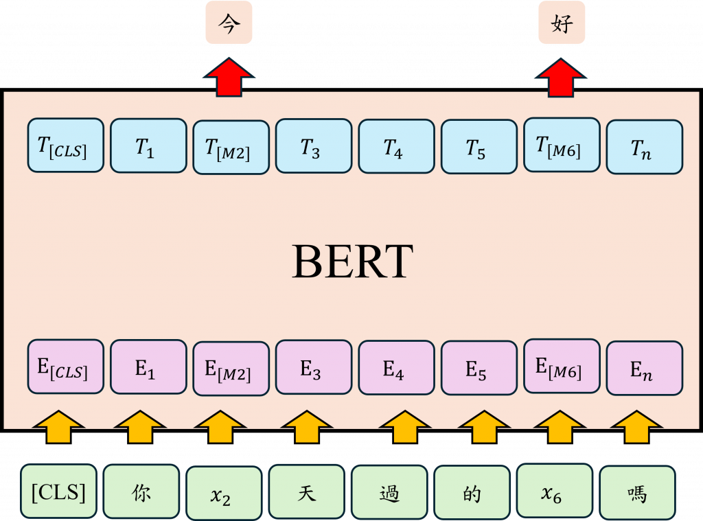
而BERT也有另一個訓練策略，就是NSP(Next Sentence Prediction)。這個策略的目的是幫助模型理解句子與句子之間的邏輯關係，這在處理例如問答系統或文本推理等任務時非常重要。這個方法是給BERT兩個句子，然後模型需要判斷第二個句子是否真的是緊接在第一個句子之後的合理連續句子。在預訓練階段，BERT會隨機選取一些句對，其中一半的句對是連續的，另一半則是沒有邏輯連貫性的，並讓模型學習判斷這兩個句子是否相關。該任務也在某些程度上強化了BERT模型對於MLM的任務能力，因為該任務更能讓模型學會這些上下文之間的關聯性。
而只使用了這兩個策略，BERT就在理解文本上下文時取得了多個資料集的SOTA（State-of-the-Art）成績。這兩個策略讓模型與以往的時間序列模型或使用遮罩的Transformer不同，不僅僅是從左向右或從右向左解讀文本，而是同時考慮兩個方向，讓BERT到現在還是在自然語言處理上非常熱門的模型。
BERT的特殊Token
在前面的章節中我們在撰寫程式碼時都是使用了BERT的Tokenizer進行模型的訓練，而這時如果你有嘗試還原文字時，你會發現[CLS]、[SEP]、[PAD]，這三個標籤，以下讓我們看看這三個特殊Token的功能:
[CLS] (Classification): 這個Token用於句子的開頭，通知模型這是一個新句子的開始，類似我們之前學到的<SOS>或<BOS>，而三個特殊Token它們的功能完全相同只不過在Seq2Seq會叫做<SOS>、Transformer會叫他<BOS>，BERT則叫做[CLS]。
然而在BERT中有一個比較特殊的部分，由於Transformer在進行Attention後，每個輸出都包含整個句子的完整訊息。因此為了避免這些輸出訊息過多，BERT在進行分類時只會使用[CLS]這個序列的對應輸出，將其提供給線性分類器進行分類，讓[CLS]能夠經過訓練後代表了整個句子的語意。
而[SEP] (Separation)通常用來分割不同的句子，尤其是 BERT 在進行問答系統、文字相似度比對、邏輯性判斷時，就會在兩句之間加入[SEP] Token，例如:[CLS]今天天氣如何?[SEP]很好[SEP]，像是這樣的操作，讓模型能夠更好的理解其上下文。
最後就是[PAD] (Padding)這一個Token其目的就是用於填充的這一點我們應該很熟悉了，不過其時BERT還有[MASK]這一個特殊Token，這一個Token只會出現在MLM任務中，因此我們在實際上訓練時並不會使用到該特殊Token。
BERT的Embedding
BERT模型的Embedding與我們之前學習到的Embedding有所不同，它有三層Embedding層。首先，BERT會經過Token Embeddings的處理，這個過程與我們先前學習的Embedding完全相同，就是將每個Token映射到對應的詞嵌入中。由於BERT可以同時處理兩個句子的輸入，所以會使用[SEP]標記來區分句子。每個標記會被分配一個片段嵌入，用來指示它是屬於第一句（A句子）還是第二句（B句子）。這樣，我們就能將剛剛完成映射的詞嵌入分別添加到相應的Segment Embedding中。
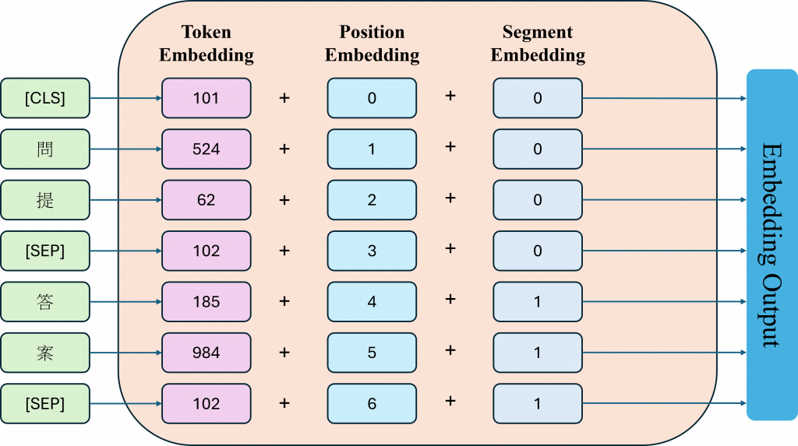
另外由於Transformer模型本身不具備位置信息，BERT採用了Position Embeddings，而不是Transformer中的絕對Positional Encoding。這使得每個Token能夠學習到對應的相對位置。最終，這三個Embedding會被相加，形成最終的詞嵌入表示。這些詞嵌入會被傳遞到Transformer中的多層編碼器，進行進一步的語義表示學習。
總結
在這次介紹中，我們講到了BERT模型的強大預訓練策略，以及其中的創新，包括MLM（遮蔽語言模型）和NSP（下一句預測）這兩個策略。這兩個策略看似簡單，但實際上效果非常強大，能夠使BERT的雙向性在同時考慮文本的上下文方面超越了單向模型的限制。此外BERT還使用了特殊的[CLS]、[SEP]等Token及三層嵌入的設計，進一步提升了語言理解和位置資訊捕捉的能力。當然除了上述這些特點，BERT還依托於龐大的資料集，才得以在2018年成為最強的模型之一。而在本次內容中可以發現我們並沒有數學式，因為在BERT中其實也沒什麼特別的數學是好說，這一現象其實也出現在後續的預訓練模型中，因為其概念本質上就是一個Transformer。
Day 24｜【Day 24】用BERT再次進行IMDB情緒分析
- 原文：https://ithelp.ithome.com.tw/articles/10365403
- 發佈時間：2024-10-08 23:24:52
前言
這次我們為了體驗BERT與我們最初學習的LSTM究竟有多少不同，今天依然使用IMDB這個資料集進行處理。而在本章節中，我們主要是讓你熟悉Hugging Face這家公司的預訓練模型的格式與使用方法。因此，程序碼介紹時，我會向你展示如何將之前的Trainer與Hugging Face的預訓練模型結合使用。在本章節中，程式碼應該是目前為止最簡單的，因為我們不需要自行處理模型，而是直接進行以下四個步驟：
- 資料前處理（使用Collate_fn完成）
- 導入模型與相關分類器（從Hugging Face導入）
- 使用Trainer訓練模型
- 評估與驗證
話不多說，讓我們開始今天的內容吧。
用預訓練模型進行情緒分析
在本次的內容中，我們會採用與Day 14相似的程式碼。然而這次我們會特別針對BERT模型及先前未補充的知識，在撰寫程式碼的同時進行補充。現在我們來看到以下步驟。
【STEP 1】讀取IMDB CSV文件
在今天我們將直接採用在Day 14時建立的CSV文件開始。在BERT模型中，其實有許多不同的版本，例如我們之前一直使用的bert-base-uncased就是原始BERT的base版本。由於該模型能接受的Token數量最多為512個，因此在使用tokenizer時，我們必須將max_length設定為512，否則程式會出錯。當然我們還有bert-large-uncased版本，它可以支援最多1024個Token，同時該版本的模型參數量也更加龐大。
模型後面的
uncased代表著其Tokenizer與模型不會區分大小寫；若標示為cased則會區分大小寫。
import pandas as pd
from transformers import AutoTokenizer
df = pd.read_csv('imdb_data.csv')
reviews = df['review'].values
sentiments = df['sentiment'].values
labels = (sentiments == 'positive').astype('int')
tokenizer = AutoTokenizer.from_pretrained("bert-base-uncased")
input_datas = tokenizer(reviews[:2].tolist(), max_length=10, truncation=True, padding="longest", return_tensors='pt')
print('Tokenizer輸出:')
print(input_datas)
# ----- 輸出 -----
Tokenizer輸出:
{'input_ids': tensor([[ 101, 22953, 2213, 4381, 2152, 2003, 1037, 9476, 4038, 102],
[ 101, 11573, 2791, 1006, 2030, 2160, 24913, 2004, 2577, 102]]), 'token_type_ids': tensor([[0, 0, 0, 0, 0, 0, 0, 0, 0, 0],
[0, 0, 0, 0, 0, 0, 0, 0, 0, 0]]), 'attention_mask': tensor([[1, 1, 1, 1, 1, 1, 1, 1, 1, 1],
[1, 1, 1, 1, 1, 1, 1, 1, 1, 1]])}
上次我們沒有討論到 token_type_ids 這個特殊的輸入。這一點對應了BERT的Segment Embedding層。当Token為0時代表第一句，為1時則代表第二句。在BERT的Tokenizer中，這個功能已經被預先定義。如果我們想要輸入兩句話，可以這樣寫： tokenizer('句子A', '句子B')。這樣，模型在處理資料時就會將其轉換成 [CLS] 句子A [SEP] 句子B [SEP] 的形式，同時附上對應的 token_type_ids。
注意這次我們會將資料轉換成
int格式。這個問題其實由來已久詳細狀況可以參考這篇文章。
【STEP 2】建立Pytorch DataLoader
在這一步中，我們之前所建立的模型格式是根據 Hugging Face 的規定進行的。在這些模型中，參數定義包括由對應的 Tokenizer 產生的 input_ids、token_type_ids 和 attention_mask，並將其分別傳遞給模型。不過，其中只有 input_ids 是必須輸入的參數，其餘參數我們其實可以選擇不傳遞，但這可能會導致 Padding 等 Token 與句子訊息遺漏。儘管如此模型仍然可以進行訓練。
from torch.utils.data import Dataset, DataLoader
from sklearn.model_selection import train_test_split
import torch
class IMDB(Dataset):
def __init__(self, x, y, tokenizer):
self.x = x
self.y = y
self.tokenizer = tokenizer
def __getitem__(self, index):
return self.x[index], self.y[index]
def __len__(self):
return len(self.x)
def collate_fn(self, batch):
batch_x, batch_y = zip(*batch)
input_ids = self.tokenizer(batch_x, max_length=512, truncation=True, padding="longest", return_tensors='pt').input_ids
labels = torch.LongTensor(batch_y)
return {'input_ids': input_ids, 'labels': labels}
x_train, x_valid, y_train, y_valid = train_test_split(reviews, labels, train_size=0.8, random_state=46, shuffle=True)
trainset = IMDB(x_train, y_train, tokenizer)
validset = IMDB(x_valid, y_valid, tokenizer)
train_loader = DataLoader(trainset, batch_size=8, shuffle=True, collate_fn=trainset.collate_fn)
valid_loader = DataLoader(validset, batch_size=8, shuffle=True, collate_fn=validset.collate_fn)
這裡我們將 max_length 設定為 512，同時定義 labels。雖然 labels 參數不是每次都需要傳入，但在訓練模型時則必須傳遞。這樣模型會自動使用 NULLoss 計算損失值。如果我們想更換損失函數，只需在訓練時將模型的 Logit（我們之前定義的 output[1]）與實際標籤進行損失值計算後在反向傳播即可。
由於這次的模型參數量較大
batch_size可以設置的小一些，以免產生OOM(Out-Of-Memory)的問題。
【STEP 3】下載並使用模型
在BERT中，由於其線性分類器的設計需要根據任務進行調整，例如在進行QA任務時，我們需要從文本中找到答案，因此須建立兩個線性分類器，一個用於找尋答案的開頭位置，另一個則是結尾。而這次我們則需要使用文本分類的線性分類器。最麻煩的作法是先繼承BERT的基礎模型，然後手動建立一個線性分類器，並取得其[CLS]標籤的輸出進行訓練。這種方式能對模型做出更高自由度的改動，但其實我們不需要這樣做。在Hugging Face中，已經幫我們定義好了這些類別。比如說，這次的線性分類器，我們可以調用BertForSequenceClassification來進行文本分類。
from transformers import BertForSequenceClassification
import torch.optim as optim
model = BertForSequenceClassification.from_pretrained("bert-base-uncased", num_labels=2)
optimizer = optim.AdamW(model.parameters(), lr=1e-4)
在這裡需要注意的是 num_labels 的設計。該值的預設值是2，如果我們有更多的選項，記得要進行修改，否則就會導致模型訓練錯誤。
【STEP 4】訓練模型
在這裡我們同樣的使用Trainer進行訓練，而在這裡我們要注意一點若我們的Labels不是整數時，其計算的損失函數會有所變動，因此若發生ValueError: Target size (torch.Size([8])) must be the same as input size (torch.Size([8, 2]))這一類的錯誤時，請檢查在DataLoader時是否設定成LongTensor，以及原始的資料是否為整數狀態。
from Trainer import Trainer
trainer = Trainer(
epochs=10,
train_loader=train_loader,
valid_loader=valid_loader,
model=model,
optimizer=[optimizer],
early_stopping=3
)
trainer.train()
# ----- 輸出 ------
Train Epoch 4: 100%|██████████| 1123/1123 [23:33<00:00, 1.26s/it, loss=0.004]
Valid Epoch 4: 100%|██████████| 281/281 [02:59<00:00, 1.56it/s, loss=0.003]
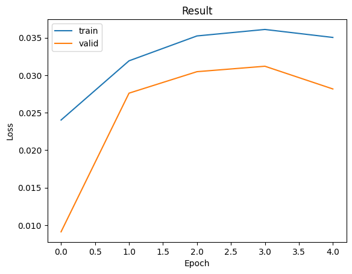
而我們可以從結果看出，模型在第一個週期就已經完成了訓練，後續反而會導致 Loss 升高現象。這是因為我們的模型在預訓練階段已經被有效訓練過了，因此通常線性分類器的調整也會在此期間完成。這正是為何在實際訓練 AI 模型時，會採用預訓練模型的原因。我們可以看到其損失值非常低，僅需短短的時間便可完成整個模型的訓練。
總結
這次我們介紹了如何使用 Hugging Face 的預訓練模型來進行情緒分析，並與先前的 LSTM 模型做比較，檢視其損失值的結果。在這篇文章中，我們將看到只需簡單的四個步驟就能完成整個程式的訓練，不僅程式碼量大幅減少，效能上也有顯著提升。不過，由於這次任務較為簡單，且使用的是 Encoder 架構，因此變化不大（Encoder 架構通常較重視資料前處理，以符合模型的預期輸入）。明天，我會告訴你如何在只有 Decoder 架構的模型上進行操作，以及有哪些技術可以應用於這類模型。
Day 25｜【Day 25】Decoder Transformer的模型演進 - 從GPT-1到GPT-3的技術突破介紹
- 原文：https://ithelp.ithome.com.tw/articles/10365402
- 發佈時間：2024-10-09 21:42:08
前言
如果說BERT是Transformer的Encoder代表，那麼今天提到的GPT系列模型可以說是Decoder的代表。這些模型的架構與技術原理奠定了當今許多熱門的大型語言模型的基礎，後續的許多改進與技術都是從今天的內容中衍生而成的。講到這些與ChatGPT相關的技術，也意味著我們進入了學習的最終階段。今天我們就先來看看最早的GPT模型GPT-1，以及它的每一代模型究竟是怎麼練成的吧。
GPT-1
GPT-1 是由 OpenAI 於 2018 年推出的基於 Decoder 的語言模型，其發表時間比 BERT 稍早，是 GPT 系列的第一個版本。其訓練方式採用了基於無監督學習的自回歸方法，擺脫了傳統 NLP 模型依賴大量標註數據進行監督學習的限制。在訓練過程中，GPT-1 通過之前的輸出來預測下一個詞。具體來說，給定一個詞序列 x(1)、x(2)、x(3)...x(t-1)，模型的目標是預測下一個詞 x(t)，即最大化條件概率 P(x(t) | x(1)、x(2)、x(3)...x(t-1))。該模型透過維基百科和書籍等開放數據源的未標註文本數據進行訓練，這使 GPT 系列的模型能夠通過當前的文字序列來找出下一個最有可能出現的文字，以生成多領域的內容，而無需像 BERT 那樣必須經過微調才能使用。

如同BERT的論文所述，儘管GPT-1具備一定的通用性，但由於它僅使用Transformer的解碼器部分，因此在語義理解方面相對較弱，特別是在處理複雜語義關係時顯得不足。同時自回歸方式需要依賴之前的所有輸入來預測下一個詞，在長文本生成中容易導致信息丟失和誤差累積，並且是一種單向的語言模型。雖然GPT-1的開發目的是成為一個通用模型，但最終還是需要經過微調才能在九項NLP資料集中取得SOTA表現，而未經微調的情況下，其泛化能力仍有所不足。
GPT-2
而在 2019 年OpenAI 推出了 GPT-2。相較於 GPT-1，GPT-2 的模型參數和訓練數據量均大幅增加。**GPT-2 的訓練數據量是 GPT-1 的八倍，而參數量則增加了四十倍。**這使得 GPT-2 在更多元化的任務上表現出色。GPT-2 的規模效應顯而易見，參數量的巨幅提升讓模型能夠捕捉到更豐富的語言結構和語義信息，甚至在未經過微調的狀態下，就在七項 NLP 資料集上達到了 SOTA 水準。
**然而在某些任務中進行微調後，GPT-2 的性能反而有所下降，這可能是由於微調數據的特異性導致模型過度擬合，從而損失了通用性。**這一點強調了預訓練和微調之間需要取得平衡，以在提升特定任務性能的同時保持模型的泛化能力。GPT-2 的推出也引發了關於 AI 生成文本潛在濫用的關注，例如生成假新聞和垃圾信息。出於這些擔憂，OpenAI 最初選擇不公開 GPT-2 的完整模型，這促使研究界更重視 AI 的安全和倫理問題。
而在GPT-2的架構與模型中並未有太大的創新，但在這次的模型訓練中，我們得知了兩件事情。第一件事是當模型的參數量與訓練資料量越大時，模型將會有更強大的能力，甚至可以在不進行微調的情況下取得優異的成績。第二件事是當模型參數量增加時，微調的效果反而可能變差，這讓我們需要找尋一些新的微調策略或是方法。
GPT-3
而 GPT-3 的出現標誌著模型規模的又一次飛躍，其參數量達到 1750 億，相較於 GPT-2 的 15 億提升了數個量級。如此龐大的模型需要處理海量數據，OpenAI 使用了約 45TB 的社群網路數據來訓練 GPT-3。而在 GPT-3 的訓練中，採用了元學習（meta-learning）的策略，元學習的概念就是將無標註的訓練結果當成一個新的結果已讓模型學習，而在GPT-3使用了 (這邊原文理解錯誤，GPT-3使用ICL的方式達成內循環，感謝hlb的勘誤)MAML（Model-Agnostic Meta-Learning）這一元學習技術。
MAML的主要概念是希望模型具備「學習如何學習」的能力，能夠快速適應在新任務上。具體而言MAML 的目標是訓練一個模型，使其能夠在接收到新任務時，僅通過幾次梯度下降就能取得良好的表現。
MAML的核心步驟
MAML 是一種元學習演算法，其訓練過程包含兩個主要部分：內部循環更新（Inner Loop Update和外部循環更新（Outer Loop Update）。首先MAML 從訓練數據集中隨機抽取一批任務，這些任務具有不同的數據分佈，可能涉及完全不同的問題類型，例如物體分類、數學題解、程式執行等。每個任務被分為支持集（Support Set）和測試集（Query Set）。

在內部循環更新中，模型基於當前參數，使用支持集進行多次梯度下降更新，目的是讓模型學習如何解決當前任務。這個過程可以採用各種適合的優化算法，如隨機梯度下降（SGD）或 Adam。這其實類似於我們在傳統訓練過程中對模型進行優化的動作，但在這裡，模型會針對不同的任務分別學習對應的數據集。每當訓練一組數據集時，模型會產生各自的權重與參數。
接下來，這些權重與參數會被用於外部循環更新。在這一步，模型**利用每個任務測試集計算內部更新後的損失，然後根據這些損失來更新模型的原始參數。**外部更新的目標是找到一組初始參數（Initial Parameters），使模型能夠在面對新任務時，通過少量的梯度更新快速適應並獲得良好的結果。
而在大量的資料與學習下 MAML 這一方法不僅學習如何解決具體任務，還通過了初始參數讓模型學習如何快速適應新任務，這賦予了它模型無關（Model-Agnostic）的特性。這意味著該方法可以應用於不同類型的任務。透過這種方法，模型能夠學習到更通用的特徵（Generalizable Features），使其在少量數據和有限次數的更新下，仍能取得卓越的表現。
Few-shot 與 Zero-shot Learning
GPT-3 的論文則是基於類似 MAML 的特性，提出了 Few-shot 和 Zero-shot 的概念，進一步擴展了模型的學習能力。Zero-shot 是指模型在未見過特定類別的訓練樣本的情況下，仍能對該類別進行準確預測；而 Few-shot 則是模型在僅有少量訓練樣本的情況下，能適應上下文並推理出正確答案。這兩種學習方式使 GPT-3 能夠通過上下文推理和學習，而無需對模型參數進行顯式調整，這種能力也被稱為 In-Context Learning。
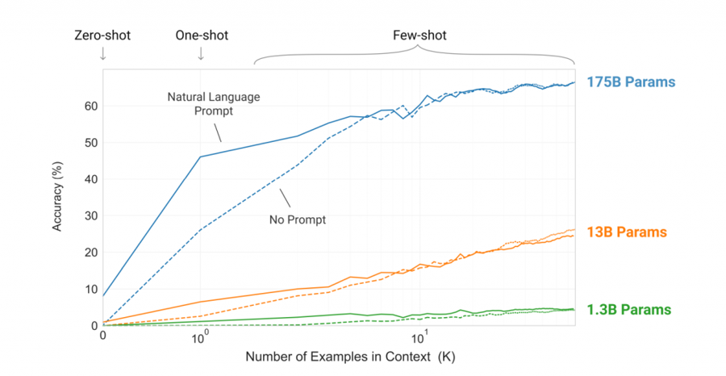
Prompting Learning
另一個關鍵概念是Prompting Learning，這項技術對於 GPT-3 性能的提升起到了重要作用。Prompting 是在模型的輸入中提供明確的上下文提示，以引導模型生成預期的回答。例如，在執行翻譯任務時，提供「請將中文翻譯為英文」這樣的提示，能幫助模型正確理解當前的任務是翻譯，從而生成更準確的結果，而這些技術也是當前大型語言模型中不可或缺的一環。
總結
在今天的內容中，突然出現了一堆名詞，所以我在文章的最後做一些統整。首先，In-Context Learning是一個很廣泛的概念，基本上任何我們輸入一段文字以幫助模型推理的方式都可以叫做In-Context Learning。因此，Prompting Learning和Few-shot也能算是In-Context Learning的一環，但兩者之間又有差別。
Prompting Learning是指通過一個提示詞讓模型知道需要進行的任務，而Few-shot通常指的是我們的資料集內容。模型會通過Few-shot的內容作為上下文，以推理出我們想要的目標答案。以ChatGPT的使用範例來說，我們問GPT問題就是屬於Prompting Learning，而這時如果有一些歷屆答案我們把它有一同給予GPT那就是Few-shot。
不知道這樣子有沒有更了解這些名詞了呢?
下一篇 【Day 26】用GPT-2解squad_v2問答資料集 - Prompting Learning與遮蔽策略的調整
Day 26｜【Day 26】用GPT-2解squad_v2問答資料集 - Prompting Learning與遮蔽策略的調整
- 原文：https://ithelp.ithome.com.tw/articles/10366209
前言
在今天的教學中，我會介紹如何訓練一個只有Decoder部分的模型。我們選用GPT系列中的GPT-2進行訓練，並使用squad_v2這個資料集進行語意理解和問題回答的測試。這個資料集專門用來測試模型在語意理解與問題回答上的能力，答案通常會在文章的某處。但是由於該資料集是以Json格式處理，整理起來可能會有一些難度。詳細的整理方式可以參考我去年的文章：【Day 23】因為站在巨人的肩膀上才能眺望更遠的風景(下)-使用SQuAD做QA問答。或是可以直接從我的GitHub上取得對應的文件。
【STEP 1】讀取資料集
首先我們先讀取squad_v2資料集的context, question, answer，這三個欄位，context代表的是文章本身，question是對應的文章問題answer則是對應的答案，一個context會有數個question與answer。
import pandas as pd
from sklearn.model_selection import train_test_split
from transformers import AutoTokenizer
tokenizer = AutoTokenizer.from_pretrained("openai-community/gpt2")
# 由於GPT-2沒有PAD token所以使用EOS Token
tokenizer.pad_token_id = tokenizer.eos_token_id
# 讀取CSV檔案並只選取指定的3個欄位
df = pd.read_csv('squad2.0_converted.csv', usecols=['context', 'question', 'answer'])
df = df.fillna('nan')
不過由於在squad_v2的資料集上，會有沒有解答的問題，而我在資料集的處理上將他設定為nan而這將會讓模型的運算出現錯誤，因此我使用了df.fillna('nan')將nan轉換成字串版本的'nan'，以讓模型可以正常生成文字，
【STEP 2】加入Prompt
接下來我們需要把這些文字組合再一起並加入Prompt讓模型能夠更理解每一個斷若的用處，而在這裡的方式很簡單，我們通過加入###與\n讓模型能夠去分割與判別出模型的涵義，不過注意一點，我們要手動的在Ans之後加入EOS token不然模型將會無法學習到結尾的地方。
# 加入Prompt
df['context'] = '### Context:\n' + df['context']
df['question'] = '\n### Question:\n' + df['question']
# 在答案後方加入EOS token表示文本結尾
df['answer'] = '\n### Answer:\n' + df['answer'] + tokenizer.eos_token
而我們也可以通過以下程式碼觀看讀取後的資料結果。
train_df, valid_df = train_test_split(df, train_size=0.8, random_state=46, shuffle=True)
print(train_df['context'][0], end='')
print(train_df['question'][0], end='')
print(train_df['answer'][0])
# ----- 輸出 -----
### Context:
Beyoncé Giselle Knowles-Carter (/biːˈjɒnseɪ/ bee-YON-say) (born September 4, 1981) is an American singer, songwriter, record producer and actress. Born and raised in Houston, Texas, she performed in various singing and dancing competitions as a child, and rose to fame in the late 1990s as lead singer of R&B girl-group Destiny's Child. Managed by her father, Mathew Knowles, the group became one of the world's best-selling girl groups of all time. Their hiatus saw the release of Beyoncé's debut album, Dangerously in Love (2003), which established her as a solo artist worldwide, earned five Grammy Awards and featured the Billboard Hot 100 number-one singles "Crazy in Love" and "Baby Boy".
### Question:
When did Beyonce start becoming popular?
### Answer:
in the late 1990s<|endoftext|>
【STEP 3】建立Pytorch Dataloader
這次的 collate_fn 難度有點高，原因在於進行文字生成時，我們需要讓 x(1)、x(2)、x(3)...x(t) 去預測 x(t+1)。實際的操作是將 input_ids 與 labels 錯開，以使模型學習這個特徵（這部分模型內部已經幫我們完成，所以不必處理）。不過，我們可以採用更好的遮蔽策略，例如在輸入完成的 input_ids 序列時，我們只需特別計算答案位置的損失，而不是已知輸入（context 與 question）。這樣模型能夠更加關注答案的結果。
不過，input_ids 可以通過 Attention Mask 來進行遮蔽，但 Labels 卻沒有相對應的方法。因此，我們必須手動將 [PAD] 和在 answer 序列之前的 input_ids 通通轉換成 -100。這是因為 Pytorch 的損失函數預設會忽略索引值為 -100 的項目，這樣模型就不會將其計算在損失中。
import torch
from torch.utils.data import Dataset, DataLoader
class SquadDataset(Dataset):
def __init__(self, dataframe, tokenizer):
self.dataframe = dataframe
self.tokenizer = tokenizer
def __getitem__(self, index):
item = self.dataframe.iloc[index]
return item['context'], item['question'], item['answer']
def __len__(self):
return len(self.dataframe)
# 將文本進行分詞
def tokenize_data(self, texts, max_length=512):
tokenized_inputs = self.tokenizer(
list(texts),
truncation=True,
padding='longest',
max_length=max_length,
return_tensors='pt',
)
return tokenized_inputs.input_ids, tokenized_inputs.attention_mask
# 定義數據加載過程中的數據整理方法
def collate_fn(self, batch):
contexts, questions, answers = zip(*batch)
# 輸入和答案
question_ids, question_attention_mask = self.tokenize_data(questions)
answer_ids, answer_attention_mask = self.tokenize_data(answers)
context_ids, context_attention_mask = self.tokenize_data(contexts, max_length=1024-answer_ids.shape[1]-question_ids.shape[1])
# 模型的輸入 = context_ids + question_ids + answer_ids
combined_input_ids = torch.cat((context_ids, question_ids, answer_ids), dim=-1)
# 模型的MASK = context_attention_mask + question_attention_mask + answer_attention_mask
combined_attention_mask = torch.cat((context_attention_mask, question_attention_mask, answer_attention_mask), dim=-1)
# 模型的標籤 = context_ids * [-100] + question_ids * [-100] + answer_ids + [EOS]
context_ignore_mask = torch.full((context_ids.shape[0], context_ids.shape[-1]), -100) # 產生context_ids * [-100]
question_ignore_mask = torch.full((question_ids.shape[0], question_ids.shape[-1]), -100) # 產生question_ids * [-100]
answer_ignore_indices = (answer_attention_mask == 0) # 找出Answer的[PAD] idx
answer_ids[answer_ignore_indices] = -100 # 將Answer為[PAD]的部分轉換成-100
combined_answers = torch.cat((context_ignore_mask, question_ignore_mask, answer_ids), dim=-1) #context_ignore_mask + question_ignore_mask + answer_ids
return {
'input_ids': combined_input_ids,
'attention_mask': combined_attention_mask,
'labels': combined_answers,
}
不過我們還要注意一點，由於GPT-2的輸入限制為1024個Token，因此我在這裡所使用的策略是減少context的Token數量。這是因為context通常包含多個部分，所以模型其實不需要多次學習這些相關的知識。因此，我們只需要專注於學習question與answer兩個部分即可。
# 建立資料集
trainset = SquadDataset(train_df, tokenizer)
validset = SquadDataset(valid_df, tokenizer)
# 創建 DataLoader
train_loader = DataLoader(trainset, batch_size=4, shuffle=True, collate_fn=trainset.collate_fn)
valid_loader = DataLoader(validset, batch_size=4, shuffle=True, collate_fn=validset.collate_fn)
而在最後的流程則與先前相同，不過要特別注意這次模型很大，因此batch_size需要設置的更小，以免發生OOM。
【STEP 4】建立模型與優化器
同樣的我們這次採用Warmup和餘弦退火進行排程優化。但要注意一點，在參數量較大的模型上，我們應該使用較小的學習率進行調整，否則很可能會出現調整錯誤，導致模型梯度爆炸。因此本次的學習率將採用5e-5，這也是大多數人在調整大型語言模型時會選擇的學習率。
import torch.optim as optim
from transformers import get_cosine_with_hard_restarts_schedule_with_warmup
from transformers import AutoModelForCausalLM
# 訓練設置
model = AutoModelForCausalLM.from_pretrained("openai-community/gpt2")
optimizer = optim.AdamW(model.parameters(), lr=5e-5)
scheduler = get_cosine_with_hard_restarts_schedule_with_warmup(
optimizer,
num_warmup_steps=len(train_loader) * 0.2,
num_training_steps=len(train_loader) * 10,
num_cycles=1,
)
【STEP 5】進行訓練並驗證生成結果
我們同樣使用Trainer進行訓練，最終損失值來到了0.47061。雖然這個結果不太理想，但對於GPT-2這一模型來說已是相當不錯，因為它需要進行推理以找出最合適的Token，而不是像BERT只需進行分類便能找出答案，因此這部分的難度更高。
from trainer import Trainer
trainer = Trainer(
epochs=10,
train_loader=train_loader,
valid_loader=valid_loader,
model=model,
optimizer=[optimizer],
scheduler=[scheduler],
early_stopping=3,
device=device
)
trainer.train()
# ----- 輸出 -----
Train Epoch 5: 100%|██████████| 26021/26021 [27:23<00:00, 15.83it/s, loss=0.090]
Valid Epoch 5: 100%|██████████| 6506/6506 [02:28<00:00, 43.72it/s, loss=0.584]
Train Loss: 0.13366| Valid Loss: 0.48269| Best Loss: 0.47061
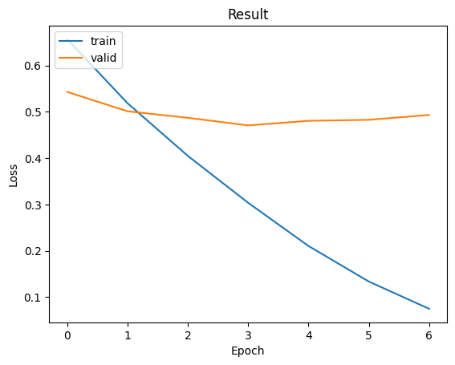
而我們也可以撰寫一個inference函數，讓模型能夠調用 model.generate 進行生成，同時擷取出答案，完成最終的生成動作。
def inference(model, tokenizer, context, question, device):
# 準備輸入數據
inference_data = f"{context}{question}\n### Answer:\n"
# 進行編碼和截斷
try:
inputs = tokenizer(inference_data, max_length=1024, truncation=True, return_tensors='pt').to(device)
# 禁用梯度計算，進行生成
with torch.no_grad():
outputs = model.generate(**inputs, max_new_tokens=1024, do_sample=False)
# 解碼並提取答案部分
generated_text = tokenizer.decode(outputs[0], skip_special_tokens=True)
answer = generated_text.split('\n### Answer:\n')[1].strip()
return answer
except:
return 'Error'
# 載入模型和設定評估模式
model.load_state_dict(torch.load('model.ckpt'))
model.eval()
# 指定要進行推理的索引
idx = 7
# 準備推理資料
context = valid_df['context'].values[idx]
question = valid_df['question'].values[idx]
answer = valid_df['answer'].values[idx]
# 進行推理
model.generation_config.pad_token_id = tokenizer.eos_token_id
model_answer = inference(model, tokenizer, context, question, device)
# 輸出原始上下文、問題、真實答案和模型生成的答案
print(f"{context}")
print(f"{question}")
print(f"{answer.split(tokenizer.eos_token)[0]}")
print("\n### Model Answer:\n" + model_answer)
# ----- 輸出 -----
### Context:
At her Silver Jubilee in 1977, the crowds and celebrations were genuinely enthusiastic, but in the 1980s, public criticism of the royal family increased, as the personal and working lives of Elizabeth's children came under media scrutiny. Elizabeth's popularity sank to a low point in the 1990s. Under pressure from public opinion, she began to pay income tax for the first time, and Buckingham Palace was opened to the public. Discontent with the monarchy reached its peak on the death of Diana, Princess of Wales, though Elizabeth's personal popularity and support for the monarchy rebounded after her live television broadcast to the world five days after Diana's death.
### Question:
What did Elizabeth start paying in the 1990 s?
### Answer:
income tax
### Model Answer:
income tax
而我們最終也能從程式中看到### Model Answer:這一行的答案，該答案就是模型經過推理後取得的結果。當然，不是每次的生成結果都是正確的，但經過我們使用遮蔽策略與Prompt的方式，可以最大程度地引導出模型的推理能力。由於GPT-2的參數量較小，我們無法見到最佳的成效，但這樣的策略仍能有效防止文字生成無限延續，並提升答案的推理能力。
總結
在這次的內容中，我們可以很明顯地看到，GPT-2 的效果不如 BERT 那樣通用和出色。這也對應了我們昨天所討論到的問題：微調後的模型不一定會產生更好的能力。因此GPT-2 在 2019 年的生成能力已經是最佳成果之一。雖然文字生成在過去不被看好，但當時也是不可或缺的技術之一。而這次我所使用的遮蔽策略和方法，是我在參加 AI CUP 時所採用的技巧之一。
Day 27｜【Day 27】大型語言模型的常用技巧Instruction Learning 與 COT Few-Shot 技術解析
- 原文：https://ithelp.ithome.com.tw/articles/10366494
- 發佈時間：2024-10-11 22:25:51
前言
在大型語言模型的領域，除了GPT-3中提到的Prompting與Few-shot等技術之外，還有許多衍生的應用。第一個應用是由於GPT-3生成的文字存在高度危險性(可能生成一些過激言論、腥羶色文字等)，OpenAI開發了InstructGPT模型，這一技術引入了新的學習方式Instruction learning，使得語言模型更具回應能力，更好地理解使用者的需求，並更能符合特定生成規則。該模型在處理複雜指令和生成高品質回應方面，展示了相較於 GPT-3的Prompt learning的強大效能與其安全性。
而另一項技術是基於few-shot學習衍生出的COT (Chain-of-Thought) few-shot技術則是進一步提升模型能力的關鍵技術，它主要透過更詳細的推理規則來增強模型的效能，接下來我將詳細介紹這兩者之間的差異以及它們在現代語言模型中的應用。
Instruction Learning
Instruction learning 的核心在於在輸入中提供清晰的指令，這樣模型能夠理解具體任務要求。這與 Prompt learning 的不同點在於，Prompt learning 只依賴提示來引導模型，而 Instruction learning 則是明確告訴模型應該做什麼。例如：
Prompt learning只會告訴你任務目標：
context: 蘋果是什麼？
question: 這是一個水果嗎？
Instruction learning中，則會明確告訴模型如何回答：
Instruction: 根據背景信息回答問題，不要使用任何冒犯性語言。
context: 蘋果是什麼？
question: 這是一個水果嗎？
Instruction learning 的好處在於它讓模型更精確地執行任務，避免生成錯誤或不當的回應，這在涉及隱私或敏感問題時尤為重要。這種方法能明確地告訴模型哪些內容應該生成，哪些內容應避免。而 Prompting learning 則是增加模型的推理能力。兩者的區分在於，只要明確告訴模型生成目標，就能歸類為 Instruction learning；而讓模型通過上下文或方向生成更佳結果的則屬於Prompting learning。
這裡我就想要吐槽一下，兩者其實很相近，唯一的差別就在於指令是否夠明確。但這一點又很主觀，所以在閱讀論文時，很多人也會把
Instruction直接叫做Prompting，因為Instruction其實是Prompting中的一個更細小的分支(類似於機器學習與深度學習這樣的關係)。
COT (Chain-of-Thought Few-Shot Learning)
Chain-of-Thought (COT) 是一種進一步提升模型推理能力的方法，特別是在多步推理（multi-step reasoning）任務中，該方式與常規生成方式不同 COT 提倡通過逐步展示解題過程來引導模型推理和思考，這種方式可以幫助模型更清楚地理解任務要求並且提供更有邏輯性的回應，讓我們看到以下兩個案例
- 在傳統的
Zero-shot方法中，模型通常是直接生成答案，沒有中間的推理過程：
context: 如果今天是星期三，兩天後是星期幾？
answer: 星期五。
- 而在 COT 中，我們會加入推理過程的想法，讓模型模型能夠逐步推理，展開中間步驟：
context: 如果今天是星期三，兩天後是星期幾？
推理過程: 今天是星期三，明天是星期四，後天是星期五。
answer: 星期五。
而這種 COT 可以有多個步驟與方式，因此也被稱為 COT few-shot。這種方法可以幫助模型將推理步驟顯示出來，以避免跳過關鍵邏輯步驟或產生錯誤的回應。這對於解決數學推理、語言邏輯分析等複雜問題非常有用。
不過要注意一點，該方式的應用不能作用於參數量較小的模型爭，這是因為參數量較小的模型通常在邏輯推理能力上不佳，這時我們又將一堆更複雜的指令給予到這些模型中只會讓他更加的混亂，該技術的主要原理就是模型本身知道這些知識，但是卻可能忽略掉一些細節，因此我們需要給他詳細的步驟將其引導生成的方向。
Instruction learning 與 COT 的結合
在大多數情境中我們可以將這些技術結合使用，例如通過在指示中明確告訴模型採用COT的方式進行操作，我們能夠進一步提高模型在生成的邏輯性。
Instruction: 請按照步驟來進行推理，並回答問題。
context: 今天是星期三，兩天後是星期幾？
推理過程: 今天是星期三，明天是星期四，後天是星期五。
answer: 星期五。
這種技術結合使模型能夠更準確地解決具難度的問題，而這一方式也應用於OpenAI近期發表的O1模型上。該模型的基本原理是先透過一個模型生成對應的COT，然後讓模型根據這個COT去解決對應的任務。然而，O1的模型參數量可能較小，根據生成速度推測，整體回覆能力尚未達到GPT-4的水準，但在處理困難任務上仍有不錯的表現，最後讓我們看看這些技術的差異性吧。
| 技術 | 核心思想 | 應用情境 | 優勢 |
|---|---|---|---|
| Prompt learning | 透過提示引導模型生成回應 | 基本的問答、文本生成等 | 簡單有效，適合單步推理任務。 |
| Instruction learning | 提供明確的指導，使模型理解如何執行任務 | 適合複雜的指令執行和任務，特別是需要明確的回應時 | 可以避免不當內容，生成內容品質更高。 |
| COT (Chain-of-Thought) | 強調逐步推理，展示中間推理過程 | 複雜的邏輯推理、多步數學計算、語言推理等 | 提供邏輯清晰的回應，減少錯誤的推理步驟。 |
總結
今天的內容主要是一系列名詞的介紹，其實我們可以大致將這些方式進行歸類。首先我們可以把所有提供給模型的文字歸類在In-context Learning中，而所有增強模型推理能力的方法都可以稱為Prompting。其中如果在這個Prompting下的指令具有指令性，則稱為Instruction。如果不給予歷史樣本，則叫做zero-shot；如果給予的是歷史樣本，則叫做few-shot。若這些few-shot不是歷史資料而是引導性的句子，則稱為COT；如果有多個引導句子，則稱為COT few-shot。看到這裡你就知道我為什麼我會說這些搞AI的人都很喜歡創一堆名詞但其實都指向類似的東西了吧
Day 28｜【Day 28】Meta大規模語言模型 LLaMA 介紹：LLaMA 系列的歷史與數學推導
- 原文：https://ithelp.ithome.com.tw/articles/10366983
- 發佈時間：2024-10-12 22:27:13
前言
LLaMA(Large Language Model Meta AI)系列大型語言模型是Meta公司在自然語言處理領域的重要進展，每一代的開發都展示了強大的效能和出色的開源理念，並通過減少Transformer上的一些運算，以實現更快的推理速度，從而解決這些大型語言模型對硬體高度依賴的問題。
而在今天的文章中我們將了解LLaMA系列模型（包括LLaMA 1、LLaMA 2 和 LLaMA 3）的強大之處，而這些技術也是在當前大型語言模型的主流研究，因此我在今天會特別把一些數學式展示出來，讓你迅速掌握這些模型的要點與實際應用。
LLaMA 1
LLaMA 1是Meta首次進軍大型語言模型領域的重要作品。它的問世打破了OpenAI、微軟和Google對大型語言模型的壟斷，成為開源語言模型的先驅。雖然LLaMA 1的開源僅限於學術研究，但其擁有130億（13B）至650億（65B）個模型參數，讓不少學者能減少訓練資源不足的問題。而13B的模型甚至可以在單塊消費級顯卡（內存24GB的顯卡如：3090、4090、V100等）上使用，而且其效能在大多數基準上能與參數量高達1750億的GPT-3競爭。
而其訓練資料集並不像OpenAI、微軟和Google等企業那樣不公開透明。他使用的技術完全來自我們能自行找到的資料。如果我們的資源足夠，甚至可以完全訓練出自己的LLaMA模型，以下是LLaMA在訓練時使用的公開資料集名稱，若有興趣也可以去看看這些資料的詳細資訊。

當然LLaMA 1不僅僅是開源在模型設計上也做出了許多優化。首先是RMSNorm歸一化函數，相比於Transformer的LayerNorm，RMSNorm只計算特徵值的均方根，而不計算均值，這使得計算速度更快梯度也更穩定，其數學公式其實與LayerNorm相似，只是移除了均值的計算並改用均方根。
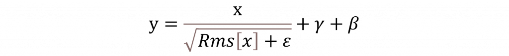
第二個改動是針對激勵函數，在原始的Transformer中通常會使用ReLU或GELU（例如BERT使用GELU），但是ReLU在輸入小於0時會導致梯度消失的問題，而GELU雖然平滑，計算成本卻較高。LLaMA則採用了SwiGLU激勵函數，該函數結合了門控機制和平滑運算，其數學式如下:
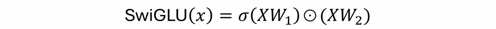
對於每個輸入 X，該激勵函數會首先通過兩個線性變換 W1 和 W2，分別產生兩個不同的輸出。其中在 W1 上會通過 Sigmoid 函數來產生一個在 [0, 1] 範圍內的門控信號，用以控制每一層的訊息流入，並與 XW2 進行逐元素相乘。這提供了一個更平滑且可微的激活函數，使模型訓練更加穩定並提高效能。我們可以看到這些 ReLU 變體的相關曲線圖如下。

最後一個方法是將 Positional Encoding 改為旋轉位置編碼（Rotary Embeddings, RoPE）。這種方式基於數學中的極座標系統，通過將每個 token 的位置編碼與查詢和鍵向量進行旋轉變換，來實現相對位置編碼。Rotary Embeddings 的核心思想是通過旋轉變換矩陣影響查詢和鍵向量的內積，從而編碼相對位置。這裡的旋轉變換基於複數數學或二維向量旋轉的概念。對於每個維度 d，我們將奇數和偶數維度組成一對進行旋轉變換。因此我們針對Transfromer時其旋轉變換可以寫成：

簡單來說這意味著每對奇偶維度會被旋轉一個角度，而這個角度通常是根據 token 的位置信息設置的。通過這種方式，Rotary Embeddings 可以有效地引入位置資訊，並保留相對位置之間的關係，從而提升模型的表現。此外，上述數學公式可以用原始論文中的圖片來表示。

LLaMA 2
2023年7月Meta推出LLaMA 2，此版本不僅擴大了40%的預訓練數據，還延長了輸入的文本長度，並繼續使用與LLaMA 1類似的架構，但它最大的改進來自於Global Query Attention，這種改進使每個Q可以共享全局Q向量，從而顯著減少了記憶體需求和計算量，使其運算與訓練速度更快。
具體來說多頭注意力機制需要為每個head計算Q、K和V之間的關係，而每個head都需要獨立計算注意力分數並拼接在一起進行線性變換，這導致計算量非常大。LLaMA 2採用了Global Query Attention的架構，讓一組全局共享的Q與所有的K和V進行交互，而不是為每個查詢單獨計算，這大大減少了計算需求並提高了效率。
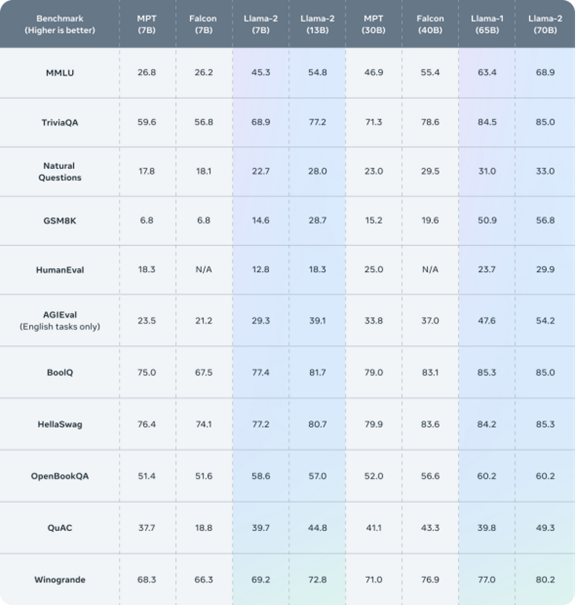
LLaMA 2 也針對長文本處理（GMS8K）、程式碼編寫（HumanEval）和語意理解（MMLU）等自然語言處理任務進行了優化，使性能提升明顯，而自此版本開始允許商業用途，為企業應用打開了大門。
LLaMA 3
在2024年4月LLaMA 3問世再次引起轟動。根據公開的測試結果，**LLaMA 3的70B參數模型在性能上與主要競爭對手相當，並且相較於LLaMA 2性能提升了超過20%。**LLaMA 3的優勢在於進一步優化了多頭注意力機制，同時改進了模型的訓練策略，使得相同參數量下的性能得到了大幅度的提升。且Llama 2相比，Llama 3的預訓練資料量從1.8兆增加到15兆，大幅提升了模型訓練資料的規模。
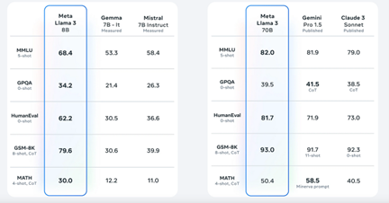
目前公開的LLaMA 3版本包括8B、70B和405B的模型，而LLaMA 3在原始的論文中被稱為「herd of language models」，這是因為其效能旨在與目前最先進的語言模型（如GPT-4）競爭並且能做到多個語言模型才能做到的事情。此外與LLaMA 1和LLaMA 2只能輸入4k與8k個Token不同，這次模型一口氣提升到了128k個Token的輸入，是一個強而有力的進展。
其模型在架構上並未與前代有太大的差異，最大的差異在於它使用了兩個主要訓練階段預訓練和後訓練（Post-Training），並在這兩個任務中加入了許多優化技巧，例如:在預訓練階段是為了適應人類指令並優化特定能力（如程式設計、推理等），而其最主要的任務就是讓模型預測下一個Token。這個訓練過程包括從標準預訓練到進一步的預訓練，以擴展模型的上下文視窗（Context Windows），即Token的輸入數量。而在後訓練階段，模型進行了Instruction learning和DPO(Direct Preference Optimization)，使它更加符合人類回饋，並具備特定的功能，如工具使用和推理能力。
而在資料集的方面進行了更嚴謹的資料處理。例如: 在預訓練階段進行了相似文件的去重，且在訓練過程中，不像MAML那樣先用單一類型的資料集分階段訓練或調整**，而是使用了混合資料集來提高模型的泛化能力**。
在後訓練階段，除了採用SFT(Supervised Fine-Tuning)與DPO外，還使用了拒絕採樣（Rejection Sampling）策略，使其能從從大量模型生成的數據中選取最優輸出，並通過PagedAttention提高了採樣效率。
拒絕抽樣是一種從目標分布中產生樣本的蒙地卡羅方法，用於在無法直接從目標分布中抽樣的情況下進行樣本生成。它依賴於一個較易抽樣的
提議分布（Proposal Distribution），並利用拒絕/接受樣本的機制來逼近目標分布。
PagedAttention則是一種改進 Transformer 模型中的注意力機制的方法，它旨在減少計算資源的使用，尤其是記憶體佔用。在原始的 Transformer 模型中，隨著輸入序列長度的增加，注意力機制的計算量和記憶體需求會急劇上升，因為每個序列的每個位置都需要與其他所有位置進行計算。而PagedAttention目的是為了應對這一問題，並使其在更長的輸入序列上運行得更加高效。[Paper]
簡單來說LLaMA 3 的強大能力源自於以下幾點：基於更多且更乾淨的資料集、使用更加細膩的 Token 進行訓練、修改了 RoPE 的基頻超參數並增加到 500000[paper]，以達到更長的輸入。這些改進使得模型在處理複雜任務時表現更佳。此外，它還採用了與 ChatGPT 中 RLHF 技術去年的文章相似的 DPO 來進行人類優化。
RLHF是一種將
強化學習（Reinforcement Learning，RL）與人類反饋相結合的技術，用於訓練人工智慧系統，特別是在處理複雜、模糊的目標時，這些目標難以透過明確的數學公式來定義或衡量，其方式就是收集人類反饋資訊讓模型知道該回復的好壞，已讓他計算出對應的獎勵來更新模型的相關參數。DPO則是直接根據人類的偏好來優化模型的行為，而不是依賴間接的獎勵信號，這一技術可以被視為RLHF的一種變體，因為他只會根據人類的偏好來優化模型的行為，避免了強化學習中獎勵設計過於複雜或不直觀的問題。
總結
在整個 LLaMA 系列中，其實是從多篇論文中找尋方法，包括我們先前提到的 GPT-1 到 InstructGPT 以及後續 ChatGPT 的 RLHF 技術。LLaMA 還參考了多項優化記憶體與速度的技術論文，例如 PagedAttention與 Global Query Attention 架構。這些方法的應用造就了 LLaMA 3 的強大能力。
不過該論文信息量相當大，因此我僅擷取了一些重點來幫助你理解 LLaMA 3 的強大之處，因此今天的內容中我只會擷取前幾天提到的重點，並忽略論文中有關圖像、語音和記憶體空間節省的詳細資訊。如果你有興趣了解更完整的相關知識，可以參閱 LLaMA 3 的原論文。
Day 29｜【Day 29】探索大型語言模型的高效微調方式與優化技巧：QLoRA 和 NEFTune
- 原文：https://ithelp.ithome.com.tw/articles/10367343
- 發佈時間：2024-10-13 22:17:14
前言
在最新的自然語言技術進展中，語言模型的規模變得越來越龐大，模型的參數量從數百萬到數十億，甚至上千億。雖然這些大型語言模型在許多任務中表現出卓越的能力，但也帶來了嚴峻的計算效能與記憶體空間問題。例如：LLaMA 3 擁有 4050 億個參數，僅進行微調就至少需要 3-4 張 H100 顯卡（每張內存 80GB，且單張售價近百萬台幣），這對大多數研究機構和企業來說是巨大的負擔。
因此有許多研究開始探索如何在有限資源下高效微調這些大型語言模型。今天我們要特別介紹的 QLoRA 就是一種這樣的方法，它能夠在不犧牲模型性能的前提下，顯著減少計算和存儲需求。且我還會介紹一種針對大型語言模型的優化技術 NEFTune，這是一種正規化技術，為大型語言模型提供了另一種發展方向。
QLoRA（Quantized Low-Rank Adaptation）
QLoRA（Quantized Low-Rank Adaptation）是一種針對大型語言模型的高效微調技術。其目標是減少模型參數數量和計算需求，通過量化(Quantization)和低秩適應(Low-Rank Adaptation)技術達到高效微調的效果。具體來說該技術通過量化模型來降低精度，使其能夠用更少的存儲空間在記憶體中運行。這個概念就像是將float64的資料轉換成float32一樣，雖然這會減少記憶體的消耗，但也會導致部分精度的丟失。
當然QLoRA技術中的模型並非如此簡單，其量化技術通常基於固定點量化（Fixed-Point Quantization）與動態範圍量化（Dynamic Range Quantization）。對於有興趣深入了解的讀者，可以參閱原論文中的詳細介紹。
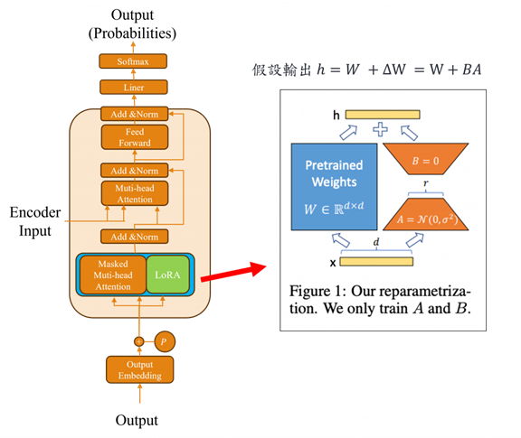
不過量化後的模型在推理能力上其實並沒有顯著減少效能，甚至可以說是完全沒有變化。因此量化後的模型往往能使用更少的資源來進行文字內容的生成。但是對於微調模型而言則不然，由於大型語言模型是多層的Transformer Decoder結構，**在經度丟失的情況下進行微調時，模型可能會出現一步錯步步錯的現象，這很容易導致模型不知道何時該生成EOS Token，或者推理出的內容出現嚴重問題。**總體而言對比全量微調（我們之前的訓練方式稱為全量微調），這種方法會導致模型性能明顯下降。
因此LoRA這一方法被用來解決這個問題的，如果我們沒辦法調整原本的模型架構，那麼我們可以訓練一個適配器，並外掛在模型旁邊來輔助該模型嗎？答案是可以的。所以在 LoRA 這一方法中，在微調模型時會凍結大部分模型權重僅調整少量的參數以減少計算量。而 LoRA 的方式是通過微調過程中需要更新的權重矩陣 ΔW，將其分解成兩個較小的矩陣 A 和 B，來達到降低計算需求的效果：
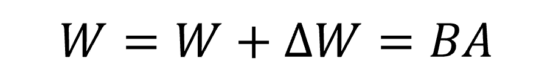
這樣的矩陣分解方式可以顯著減少所需的存儲和計算資源。例如當 r = 2 時，A 和 B 只會是兩個列向量和行向量。當 r = 3 時，則變成三個列和行向量。這種方法能有效降低訓練時的計算複雜度，同時保持模型的高效能。

而我們通常會將其LoRA框架加入在Transformer的Q、K、V與輸出層O上，而根據研究顯示LoRA這種微調方式在 WikiSQL 和 MultiNLI 等數據集上的表現與傳統微調幾乎無異。但更重要的是該方式顯著的減少了模型在微調時的時間。
NEFTune(Noisy Embeddings Improve Instruction Finetuning)
NEFTune（Noisy Embeddings Improve Instruction Finetuning）是一種針對語言模型微調的創新方法，**通過在嵌入層中引入噪音（如高斯分布噪音），來提高模型面對不確定數據的性能表現。**這樣的技術模擬了現實世界中數據的隨機性和變異，類似於訓練飛行員在各種惡劣天氣下駕駛飛機，以便應對突發狀況。對語言模型來說，這樣的噪聲正規化技術能有效防止模型過度擬合訓練數據，使其學會如何在「有噪音」的環境中依然準確執行指令。
而另外一點適在訓練過程中，神經網絡的每一層往往需要設定不同的學習率。例如，詞嵌入層的學習率通常需要較低，否則容易過度擬合特定的數據特徵。通過引入噪音，這種技術與數據增強技術相似，能提高模型的泛化能力，幫助其在面對新情況時表現出更好的適應性。這樣的策略能促使模型學習更廣泛的特徵和模式，並有效提升模型的整體性能。而其程式碼的實現也非常簡易讓我們先看看原始的Paper所開放出來的寫法:
from torch.nn import functional as F
def NEFTune(model, noise_alpha=5):
def noised_embed(orig_embed, noise_alpha):
def new_func(x):
# during training, we add noise to the embedding
# during generation, we don't add noise to the embedding
if model.training:
embed_init = orig_embed(x)
dims = torch.tensor(embed_init.size(1) * embed_init.size(2))
mag_norm = noise_alpha/torch.sqrt(dims)
return embed_init + torch.zeros_like(embed_init).uniform_(-mag_norm, mag_norm)
else:
return orig_embed(x)
return new_func
##### NOTE: this is for a LLaMA model #####
##### For a different model, you need to change the attribute path to the embedding #####
orig_forward = model.base_model.embed_tokens.forward
model.base_model.embed_tokens.forward = noised_embed(orig_forward, noise_alpha)
return model
在原始的論文中，由於測試使用了LLaMA 2，當提取其嵌入架構時，我們使用了model.base_model.embed_tokens.forward。接著將原始的嵌入層通過new_func加入噪音。我們可以看到，這個方法非常簡單，首先通過提取seq_len * 嵌入特徵數來獲取當前輸入的資料長度，然後通過嵌入維度的平方根調整噪音的幅度，並用uniform_(-mag_norm, mag_norm)生成一個範圍為[-mag_norm, mag_norm]的雜訊，並將其加入到原始的嵌入層中，而這簡單的實現就能讓模型瞬間提升了許多能力。
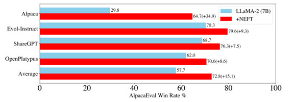
研究結果顯示，NEFTune 能在更複雜、多變的環境下進行指令微調訓練，使模型的表現達到顯著進步。實驗顯示在某些數據集上，NEFTune 的引入甚至能帶來將近兩倍的性能提升。這種技術展示了噪音注入對語言模型微調的強大潛力，進一步拓展了模型在真實世界應用中的實用性。
總結
這次主要是為了傳達了幾個重點，首先在量化模型下進行微調並不太理想，雖然能取得一定效果，但生成出的結果多半會有問題。正確的做法是凍結原始參數，加入適配器以達到微調的目的。由於我們進行了量化並凍結參數，即使加入了多個適配器，訓練速度依然會變快。
另外NEFTune是一種專門針對大型語言模型的方法。大型語言模型具有強大的推理能力，因此通過加入噪音的方式反而能增強效能。然而，如果將此技術應用於類似BERT的模型，效果只會更差。這兩項技術為大型語言模型的高效微調提供了創新解決方案，能以更少的硬體成本實現更佳的訓練效果和推理能力，適合應對真實世界中的資源挑戰。
Day 30｜【Day 30】用LLaMA 3訓練屬於你的鄉民風格聊天機器人 - 從資料轉換到微調的完整教學
- 原文：https://ithelp.ithome.com.tw/articles/10367570
前言
今天是整個系列的最後一天啦，在系列結尾，我會告訴你如何訓練一個屬於自己的聊天機器人。這在企業的內部培訓或解答系統中非常有用。我們只需要請每位員工列出他們可能遇到的幾個問題，並給予對應的答案即可。而聊天機器人的訓練並不像我們想像中那麼困難。我們其實只要按照今天介紹的幾個簡單步驟，之後只需要更換資料集的內容，就能培訓出不同版本的聊天機器人。現在讓我們來看看如何使用LLaMA 3這一個強大模型吧。另外在這次我們同樣使用PTT鄉民的語料庫來幫助我們訓練出一個充滿鄉民風格的聊天機器人。
【STEP 1】轉換資料成模型輸入格式
在我們GPT的章節中可以知道在轉換資料格式時其實非常的麻煩，而在LLaMA中又有自己的獨特轉換方式，例如我們想要賦予系統一個Instruction時就必須讓該系統的指令放置在<|begin_of_text|><|start_header_id|>system<|end_header_id|>0x0A0x0A這是系統指令<|eot_id|>這一段指令中其中0x0A是換行符號，輸入與模型對應的回復也要轉換成相對應的格式。而會出現這樣的問題，是因為LLaMA基本上是一個支援多輪對話的模型。因此，每一輪的對話會疊加在這些Token上，所以需要使用不同的Token來判斷角色、對話內容以及對話結尾。
那麼LLaMA模型中的Token系統是如何工作的呢？每個Token標籤都有其特定的功能。例如，<|start_header_id|><|end_header_id|>這組Token用來標示角色，這樣模型便可以區分不同對話者。而當模型讀取這組Token時，它會知道接下來的信息是該角色的台詞，這些台詞在實際對應的對話中是由兩個0x0A來間隔開。除此之外，<|begin_of_text|><|eot_id|>這組Token則負責界定某一角色對話的開頭和結尾，以便模型能夠正確了解每段對話的開始和結束位置。這整套系統使得LLaMA模型能夠有效管理和處理多輪對話，確保每一個對話回合之間的上下文得以正確理解和關聯。這樣一來，模型便能夠在多輪對話中保持高水準的連貫性和精確性。
不過，在 Hugging Face 的最新版本中，已經幫我們設定了一個 apply_chat_template 方法。因此，我們可以直接通過傳入一個由多個字典包圍住的列表，快速地轉換這些格式。其方式很簡單，就是通過 role 賦予我們要給予的指令與對應的文字到 content 中。最後，我們可以通過 append 等方式，將對話依序通過該方法轉換。這樣子，在後續多輪流的對話中，我們只需要不斷地 append 使用者和模型的回覆，就能讓用戶和使用者順利地進行聊天。
# 讀取Tokenizer
from transformers import AutoTokenizer
tokenizer = AutoTokenizer.from_pretrained(
'meta-llama/Meta-Llama-3-8B-Instruct',
trust_remote_code=True,
add_special_tokens=False
)
tokenizer.pad_token = tokenizer.eos_token
system_format = {"role": "system", "content": '這是系統指令'}
question_format = {"role": "user", "content": '這是用戶的輸入'}
answer_format = {"role": "assistant", "content": '這是模型回復'}
chat_format = tokenizer.apply_chat_template([system_format, question_format, answer_format])
print(tokenizer.decode(chat_format))
# ----- 輸出 -----
<|begin_of_text|><|start_header_id|>system<|end_header_id|>
這是系統指令<|eot_id|><|start_header_id|>user<|end_header_id|>
這是用戶的輸入<|eot_id|><|start_header_id|>assistant<|end_header_id|>
這是模型回復<|eot_id|>
【STEP 2】量化設定
同樣的我們使用 Hugging Face 提供的 BitsAndBytesConfig 來進行模型的量化動作，將原本 32-bit 浮點數轉換成更低精度4-bit使模型能使用一張消費及險卡進行訓練。
from transformers import BitsAndBytesConfig
import torch
quantization_params = {
'load_in_4bit': True,
'bnb_4bit_quant_type': "nf4",
'bnb_4bit_use_double_quant': True,
'bnb_4bit_compute_dtype': torch.bfloat16
}
bnb_config = BitsAndBytesConfig(**quantization_params)
而在上述的參數中我們基本上不會有變動，雖然可以直接照抄但我們還是先來理解一下這些參數的用處:
load_in_4bit: 將模型的權重加載為 4-bit 的精度。bnb_4bit_quant_type: 設定量化的類型為nf4(Normalized Float 4)，這是一種比較先進的量化技術，能在低精度的條件下保持更好的數值表現。bnb_4bit_use_double_quant: 開始雙重量化技術，開啟後會將權重和計算的中間數據都會被壓縮，節省更多資源。bnb_4bit_compute_dtype: 設定計算時的精度類型為torch.bfloat16，這是一種比 32-bit 更低精度但表現較穩定的浮點數格式，在不顯著降低模型精度的前提下，能減少計算資源需求，但只有部分顯卡支援bfloat16的運算，若顯卡不支援則可以轉換成float16。
【STEP 3】讀取模型
這裡與之前並無太大的差異，唯一的不同之處在於我們使用了Accelerator來判斷顯示卡的位置。這是因為在訓練大型語言模型時，可能會面臨多張顯示卡訓練的需求。如果有多張顯示卡的話，使用Accelerator可以自動將模型拆分並分配到多張顯示卡上進行訓練。當然如果只有一張顯示卡，使用to(device)也是可以的。
from accelerate import Accelerator
from transformers import AutoModelForCausalLM
device_map = {"": Accelerator().local_process_index}
model = AutoModelForCausalLM.from_pretrained(
'meta-llama/Meta-Llama-3-8B-Instruct',
quantization_config=bnb_config,
torch_dtype=torch.bfloat16,
device_map=device_map,
use_cache=False,
)
print(model)
# ----- 輸出 -----
LlamaForCausalLM(
(model): LlamaModel(
(embed_tokens): Embedding(128256, 4096)
(layers): ModuleList(
(0-31): 32 x LlamaDecoderLayer(
(self_attn): LlamaSdpaAttention(
(q_proj): Linear4bit(in_features=4096, out_features=4096, bias=False)
(k_proj): Linear4bit(in_features=4096, out_features=1024, bias=False)
(v_proj): Linear4bit(in_features=4096, out_features=1024, bias=False)
(o_proj): Linear4bit(in_features=4096, out_features=4096, bias=False)
(rotary_emb): LlamaRotaryEmbedding()
)
(mlp): LlamaMLP(
(gate_proj): Linear4bit(in_features=4096, out_features=14336, bias=False)
(up_proj): Linear4bit(in_features=4096, out_features=14336, bias=False)
(down_proj): Linear4bit(in_features=14336, out_features=4096, bias=False)
(act_fn): SiLU()
)
(input_layernorm): LlamaRMSNorm()
(post_attention_layernorm): LlamaRMSNorm()
)
)
(norm): LlamaRMSNorm()
)
(lm_head): Linear(in_features=4096, out_features=128256, bias=False)
而這時我們把模型的結構print出來時可以看到self_attn下的Q、K、V、O層，而這幾個參數也是我們下一個步驟中需要進行加入LoRA適配器的部分。
【STEP 4】加入LoRA適配器
我們把剛剛找到的Attention層資料寫入到target_modules以幫助我們在這些層中加入LoRA適配器，而我們在這裡不需要手動凍結其他網路層，這是因為在peft庫當我們自動加入LoRA層時就會幫我們自動凍結target_modules的參數。
在進行4-bit類型的訓練時，我們通常會使用prepare_model_for_kbit_training進行包裝。這個方法主要用於在進行低位量化的過程中，為模型做好準備，使其在記憶體有限的環境下可以更高效地進行訓練和推理，同時儘量減少量化帶來的性能損失。完成這個步驟後，接著使用get_peft_model將剛剛設定好的peft_config傳入，就完成模型的配置了。
from peft import LoraConfig, get_peft_model, prepare_model_for_kbit_training
peft_params = {
'r': 32,
'target_modules': ["q_proj", "k_proj", "v_proj", "o_proj"],
'lora_dropout': 0.1,
'task_type': "CAUSAL_LM",
}
peft_config = LoraConfig(**peft_params)
model = prepare_model_for_kbit_training(model, use_gradient_checkpointing=True)
model = get_peft_model(model, peft_config)
print(model)
【STEP 5】加入NEFtune
最後，我們來將NEFtune的方法加入到模型中。在這裡，我們不是採用原始論文的方法來找出模型的Embedding層，而是先通過unwrap_model的方式找出模型的Embedding層，再用register_forward_hook的方式讓模型在前向傳播時先執行NEFtune公式，再傳遞到下一層。我已經將相關的知識寫在註解中。因此加入NEFtune的程式可以撰寫成以下形式。
from transformers.modeling_utils import unwrap_model
def activate_neftune(model, neftune_noise_alpha = 5):
unwrapped_model = unwrap_model(model)
embeddings = unwrapped_model.base_model.model.get_input_embeddings()
embeddings.neftune_noise_alpha = neftune_noise_alpha # 讓Embedding層的__init__多一個neftune_noise_alpha參數
# hook embedding layer
hook_handle = embeddings.register_forward_hook(neftune_post_forward_hook)
return model
def neftune_post_forward_hook(module, input, output):
# 公式來源:https://github.com/neelsjain/NEFTune
# 論文網址:https://arxiv.org/abs/2310.05914
if module.training: # 讓他再訓練時有用而已
# 實現NEFtune公式
dims = torch.tensor(output.size(1) * output.size(2))
mag_norm = module.neftune_noise_alpha / torch.sqrt(dims) # 這裡的neftune_noise_alpha就是在__init__的參數
output = output + torch.zeros_like(output).uniform_(-mag_norm, mag_norm)
return output
model = activate_neftune(model)
【STEP 6】轉換資料集成對話格式
而在我們這次的對話集中由於是單輪對話格式，因此user與assistant只會有一個，而我在這個過程中也加入了一個簡單的Instruction: 你是一個zh-tw版本的聊天機器人，加強模型的回覆可以用繁體中文進行聊天與回覆的能力。。
import pandas as pd
def transform_format(questions, answers, system='你是一個zh-tw版本的聊天機器人'):
context = []
for q, a in zip(questions, answers):
system_format = {"role": "system", "content": system}
question_format = {"role": "user", "content": q}
answer_format = {"role": "assistant", "content": a}
context.append([system_format, question_format, answer_format])
return context
# 讀取CSV檔案
df = pd.read_csv('Gossiping-QA-Dataset-2_0.csv')
# 提取問題和答案的列表
questions = df['question'].tolist()[:5000]
answers = df['answer'].tolist()[:5000]
# 轉換格式
formatted_context = transform_format(questions, answers)
不過由於這次資料集的數量過於龐大，而模型又有著8B的參數量，因此為了節省時間，我將資料限制在5000個，這樣我們才能夠順利進行Demo。
【STEP 7】建立Pytorch DataLoader
這次的DataLoader建立起來比較簡單。因為在聊天版本的大型語言模型中，無論是輸入的文字還是答案，都是下一輪對話的一部分，模型應該能更好地理解這些上下文關係。因此，我們只需要對Padding的Token進行處理即可。
import torch
from torch.utils.data import Dataset, DataLoader
# 定義自定義 Dataset
class PTTDataset(Dataset):
def __init__(self, formatted_context, tokenizer):
self.formatted_context = formatted_context
self.tokenizer = tokenizer
def __getitem__(self, index):
return self.formatted_context[index]
def __len__(self):
return len(self.formatted_context)
def collate_fn(self, batch):
formatted_contexts = self.tokenizer.apply_chat_template(batch, padding=True, return_dict=True, max_length=8192, return_tensors='pt', truncation=True)
attention_mask = formatted_contexts['attention_mask']
labels = formatted_contexts['input_ids'].clone()
labels[attention_mask == 0] = -100
formatted_contexts['labels'] = labels
return formatted_contexts
# 建立資料集
trainset = PTTDataset(formatted_context, tokenizer)
validset = PTTDataset(formatted_context, tokenizer)
# 創建 DataLoader
train_loader = DataLoader(trainset, batch_size=4, shuffle=True, collate_fn=trainset.collate_fn)
valid_loader = DataLoader(validset, batch_size=4, shuffle=True, collate_fn=validset.collate_fn)
【STEP 7】訓練模型與生成結果
而在訓練模型的部分我們同樣使用get_cosine_with_hard_restarts_schedule_with_warmup進行排程，而後續的動作都與之前相同，無任何的差異。
import torch.optim as optim
from transformers import get_cosine_with_hard_restarts_schedule_with_warmup
from trainer import Trainer
# 訓練設置
device = torch.device('cuda' if torch.cuda.is_available() else 'cpu')
optimizer = optim.AdamW(model.parameters(), lr=5e-5)
scheduler = get_cosine_with_hard_restarts_schedule_with_warmup(
optimizer,
num_warmup_steps=len(train_loader) * 0.2,
num_training_steps=len(train_loader) * 10,
num_cycles=1,
)
trainer = Trainer(
epochs=10,
train_loader=train_loader,
valid_loader=valid_loader,
model=model,
optimizer=[optimizer],
scheduler=[scheduler],
early_stopping=3,
device=device
)
trainer.train()
# ------ 輸出 -----
Train Epoch 9: 100%|██████████| 1250/1250 [12:01<00:00, 1.73it/s, loss=1.960]
Valid Epoch 9: 100%|██████████| 1250/1250 [04:07<00:00, 5.04it/s, loss=2.114]
Saving Model With Loss 1.80411
Train Loss: 1.83201| Valid Loss: 1.80411| Best Loss: 1.80411

而在訓練曲線上可以發現在這9次的訓練中沒有發生過度擬合的狀況，且模型正在進行收斂，而對於這種狀況我們其實還可以繼續訓練，因為這時模型的損失值明顯還能在下降。
最後讓我們來看看生成的效果。在生成時，我們要注意一點，也就是和使用Tokenizer時一樣，由於該模型沒有Padding Token，因此我們要通過 model.generation_config.pad_token_id = tokenizer.eos_token_id 來設定這個數值。不然程式會出現警告（其實這不是很大的問題，因為生成時不該出現PAD token）。
model.load_state_dict(torch.load('model.ckpt'))
model.eval()
model.generation_config.pad_token_id = tokenizer.eos_token_id
messages = [
{"role": "system", "content": '你是一個zh-tw版本的聊天機器人'},
{"role": "user", "content": 'PTT是甚麼阿?'},
]
input_data = tokenizer.apply_chat_template(messages, padding=True, return_dict=True, max_length=8192, return_tensors='pt', truncation=True).to(device)
ids = model.generate(**input_data)
print(tokenizer.decode(ids[0]))
# ----- 輸出 ------
<|begin_of_text|><|start_header_id|>system<|end_header_id|>
你是一個zh-tw版本的聊天機器人<|eot_id|><|start_header_id|>user<|end_header_id|>
PTT是甚麼阿?<|eot_id|><|start_header_id|>assistant<|end_header_id|>
一個垃圾論壇<|eot_id|>
而我們可以看到，我們僅僅使用了10個訓練週期和5000筆資料，就讓模型成為了一個沒素質的聊天機器人。因此，我們也可以發現這些大型語言模型的能力其實非常強大。這一點歸功於它具備強大的基礎知識，所以在微調時才能更好地收斂損失值。
總結
我們的從零開始學AI：數學基礎與程式碼撰寫全攻略的30天教學終於結束啦。在這段期間，你可能會發現我在前幾天特別強調數學公式的講解，這是因為我希望你們能理解這些基礎公式的用途與用法。通過這樣的學習，你是否能夠在後續的模型中更好地理解這些作者在設計模型時的想法呢？
因此在預訓練模型之後，我基本上不再詳細講解這些公式，因為這些公式大致相同。唯一的差異通常可以用文字講解相關理念來說明，就算我們想模仿這些做法時，我們只需參考原始論文的程式碼即可，因此對數學公式的依賴相對減少。
而在這30天的內容中，我的主要目的是幫助你們慢慢理解相關領域的發展與應用，更重要的是我要傳達的是該如何遇到問題後找到解決的方向，而不是單純教你如何使用最新技術。這樣一來當你們遇到問題時，可以更有條理地分析問題並找到解決方法，而不會成為我們在AI界所說的“套模仔”。
參賽後紀
這次的內容主要是想把我在研究所中自學這些AI知識的過程整理成一篇文章讓大家可以跟我一樣慢慢的進入AI的領域，所以在這篇文章中的內容我在文章中的細節中加入了我以前遇過的問題，並且把我踩過的坑告訴大家，來增加你學習的速度，當然一開始不一定要馬上的理解這些數學式而是先知道相關的概念即可，這樣子你至少會有著撰寫程式的能力，而當你有這能力後你會慢慢的理解這些數學式，而今年也是我第三年參加鐵人賽了，從懵懂無知的AI人蛻變到現在有能力站上AI競賽的舞台，而這次撰寫內容的過程只能說是壓力山大啊，雖然說寫作的速度變快了，但對於內容的壓縮與編排真的是我這次最大的挑戰，希望這次的學習內容能對你們有所幫助，那麼我們明年再見(?